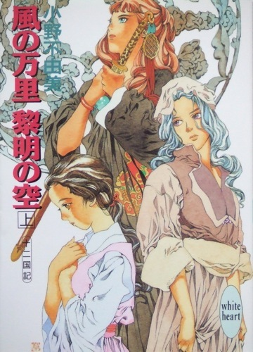
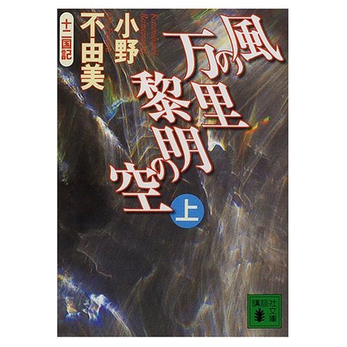

| [小野不由美] 十二国記シリーズ06 | |
| 小野不由美 | |
| (2015) | |
|
十二国記 風の万里 黎明の空（上）
小野 不由美
|



|
東の海神 西の滄海 十二国記 |
序 章
１
元気でね、と母親は目頭を押さえた。父親も二人の兄もむっつりと押し黙っていた。妹も弟も家の中から出てこない。二人をあやす祖母の声が戸口の外に立った鈴の耳に届いていた。
なあに、と陽気な声を出したのは、鈴の横にいる男だけだった。
「青柳さまはお大尽だからね。綺麗な着物も着せてもらえるし、行儀作法だって教えてもらえる。年季が明ける頃にはすっかりあかぬけて、どこに出しても恥ずかしくないお嬢さまになってるかもしれないよ」
男は言って、一人で声高く笑った。鈴はそんな男を首をのけぞらせて見上げてから、目の前にあるあばら屋をもういちど見渡した。傾いた柱と歪んだ茅葺きの屋根。中は土間と二間きりで、そのどこもかしこもやはり傾いて歪んでいた。
鈴の家は貧しい。土地を借りて米を作っているけれども、上がりはほとんど小作料に持っていかれる。そのうえ今年は凶作で、夏になっても稲の穂が出ない。このままでは小作料が払えない。だから鈴は年季奉公に売られていく。十七の兄でも十一の妹でも、九つの弟でもなく、十四の鈴が。──満年齢で言えば、十二でしかない。
「──さ、行こうか」
男に促されて鈴はうなずいた。家族に別れは言わなかった。しゃべると涙がこぼれそうだったからだ。しっかり目を開けて、瞬きをこらえた。その目で家族を見渡して、きちんと顔を覚えなおした。
元気でね、と母親はもういちど言って、そうして袖で顔を覆った。それで鈴は背を向けた。泣いている母、むっつりと押し黙る父と兄、その誰もが鈴を引きとめてはくれないことを理解していたからだった。
黙りこくったまま男の後をとぼとぼと歩いて村はずれを越え、昼に近づく頃には鈴の知る世界の端までたどり着いた。山の斜面をえぐりとるような峠道、はるか麓から見たこの峠の外へ、鈴は行ったことがない。
「お前はいい子だ。ぐずぐず泣かないのが気に入った」
男はどこまでも快活で、勝手にしゃべりながら大股にどんどん歩いていく。
「東京はりっぱな街だぞ。お前、瓦斯灯なんて見たことないだろう。お屋敷に行くのに鉄道馬車にも乗れる。鉄道馬車って知ってるか？」
鈴は声を聞き流し、後ろを振り返らないようにしながら、男が足元に引きずった影を懸命に追いかけた。引き離されては小走りに追いかけ、男の影の頭のあたりをえい、と踏みにじる。それを繰り返して峠を越えて、下りにかかったところで散切り頭の影がとまった。男が空を見上げたのだ。
背後から雲が追いかけてきていた。鈴が踏んだ男の影も薄くなってしまっていた。
「──降るかな」
振り返った背後、山間の村から続くこんもりと木の茂った斜面を、影が昇ってきた。水が追ってくるようにして雲の影が男と鈴の影法師に追いつくと、生温い風がさあっと吹いて、タッ、と雨粒が道を叩いた。
「こりゃあ、まいった」
男は言って、峠道の端にそびえる大楠のほうへ駆け出した。雨宿りするのだと、鈴も風呂敷包みを胸に抱いてその後を追う。ばたばたと大粒の雨が頬や肩を叩いて、枝の下に駆けこむまでの短い時間のうちに斜めに突き刺さる雨に変わった。
鈴は首をすくめて、大楠の根元に走りこんだ。地面に張り出した根は同じように雨宿りをし、あるいは休息した旅人の足に磨かれて、どれもつるりとしている。そこに雨粒がかかって、鈴の足を滑らせた。
ああ、滑るな、と鈴が思ったとたん、足元を大きくすくわれた。つんのめって踏みしめた足元に次の根があって、それに爪先を引っかける。転びかけてなんとか踏みとどまった足がさらに滑って、鈴は踊るようにして崖っぷちまでたどり着いてしまった。
「おい、気をつけ──」
男の声は途中から叫びに変わった。大楠の根が途切れた先は、崖と呼んでもいいような急斜面になっていて、鈴はそこから転がり落ちようとしていたのだ。
鈴は荷物を投げ出して手を伸ばした。指は男の手にも、付近の枝や叢にも届かなかった。崖っぶちから身体が投げ出されて、とたんに太い雨足に叩かれた。どうどうと滝が落ちるような雨音がしていた。
落ちる、と思った瞬間までは、鈴も覚えている。ふっと気が遠のいて、水に投げこまれて我に返った。下には川があったのか、と半ば溺れながら思った。しかし、どんな谷川だろう。どこまでも沈んでいくこの深さは。しかも口の中に流れこんでくる水の辛さは。
暗い水の中に引きこまれ、意識を失い、次に目を開けたときにはゆらりと揺れる床の上だった。数人の男が鈴の顔をのぞきこんでいる。
鈴がきょとんと目を開けて瞬きすると、男たちはほっとしたように表情を和ませて、口々になにかを言った。
鈴はその場に身体を起こす。周囲を見渡してぽかんと口を開けた。
そこは水の上だった。古びた板の敷き詰められたほんの少し先は水面、目を上げれば真っ暗な水がどこまでも続いて、はるか彼方で真一文字に空と接している。こんなに広い水面を、鈴は生まれて初めて見た。
転がり落ちた大楠を探して背後を振り返ると、すぐ背後に首をのけぞらせて見なければならないほど高い崖がそびえていた。崖は深くえぐれ、ところどころから白い糸のように水が流れ落ちている。その崖の麗から、板を敷き詰めて広い床が作られているのだった。床の水際にはいくつもの桟橋があり、そこに三艘ほどの小さな船が寄せられていた。
──川を流されて、海にまでたどり着いてしまったのだろうか。
鈴はそう思った。川をずっと下っていくと、どんどん太くなって、やがては海にたどり着くのだと、そんなふうに聞いたことがあった。
──これが海。
真っ黒な水。手をついて床の端からのぞきこむと、近所にあった池や川とはまったく違い、おそろしく澄んでいる。それでも底は見えなかった。はるか彼方の暗黒にまで続いていて、そこにきらきらと光るなにかが群れを作って泳いでいた。
「────」
声をかけられ、軽く肩をゆすられて、鈴はようやく海から目を離した。男たちが、心配そうに鈴をのぞきこんでいた。
「────」
男たちは鈴になにかを話しかける。その言葉がまったく分からなくて、鈴はきょとんとした。
「なに？ なんて言ったの？」
男たちはざわめいて、顔を見合わせる。口々にしゃべってなにか言葉をやりとりしたが、やはり鈴にはその会話が理解できなかった。
「ここはどこ？ あたし、戻らないと。ここから村に戻るにはどうしたらいいの？東京へ行く道でもいいんだけど。おじさんたち、青柳さまの家を知ってる？」
男たちはまたざわめいた。困惑したような表情がそれぞれの顔に浮かんでいた。
男たちが額を集めるようにして相談を始めてしまったので、鈴は所在なく床の上に座って周囲を見渡していた。
崖は陸を切り取ったようにそびえていた。すとんと水面に落ちこんで、やや内側にえぐれている。鈴の家の近所の山の、奥深いところに滝があったが、今見ている崖は、その滝壺に面した崖よりもはるかに高かった。それが水面に浮いた床を大きく抱えこむようにして、左右に伸びているのだった。
床の部分を除けば、断崖の麓には岸辺というものが存在しなかった。鈴のいるこの場所だけ大きな大きな筏のような床が浮かべられて、崖の下から水面に張りだしている。そこに船がつながれていて、床の奥、床と崖が接するあたりに小屋が並んでいた。
なるほど、と鈴は思う。岸がないから、岸を作ってあるのだ。けれども、どうやってこの絶壁を登るのだろう、と首をかしげてよく見てみると、高い崖には石段や梯子が続いていた。どうやらそれを登るようだった。
「あんな梯子を登るなんて、目がまわりそう」
鈴がつぶやいたとき、男たちが鈴を振り返った。首をかしげる鈴に崖の上を示す。床を崖のほうへ歩いていく男たちに連れられて、鈴は崖に刻まれた石段に足をのせた。
それが苦行の始まりだった。鈴は崖を登っていく。何度も座りこみそうになるのを、後ろから押され、前から引かれ、背後を振り返ってあまりの高さに目をまわしそうになるのをなだめられして、やっとのことで崖の上までたどり着いた。
「海辺に住むひとは、大変なんだ」
べたりと座りこんで鈴が言うと、男たちは笑って鈴の背中や肩をてんでに叩いてくれた。言葉は分からないが、おそらくねぎらってくれているのだろうと思う。
「野良仕事のほうがずっと楽だったなあ」
床のあちこちに投網が干してあったので、男たちが漁に出ていたらしいことは想像できる。魚を獲るたびにこの崖を登り降りするのでは、その苦労は大変なものだろう。田圃の手伝いをするのも大変だったが、すくなくとも畦ぞいに歩いていけた。
崖の上には鈴の背丈よりもずっと高い、石を積みあげた塀が続いている。その一方に入り口があってそこに招かれたので、萎えそうになる足を引きずって男たちの後に続いた。
塀の内側は長屋のような小屋が並ぶごく小さな村だった。そのうちの一軒に連れていかれて、鈴は老婆の手に身柄を渡された。潮が垂れた着物を脱がされて、土間においた台の上に敷かれた布団を示されたので、おとなしくそこに横になった。老婆は鈴の着物を持って小屋から出ていく。それを目線で見送って、鈴は目を閉じた。すっかり疲れ果てていた。
──ちゃんと東京に行けるかなあ。
墜落するように眠りに落ちながら、鈴は思う。
──ちゃんと青柳さまのお屋敷に行かないと。あたしは売られてしまったんだもの。
もう他に行くところも帰るところも、鈴にはないのだから。
鈴はもちろん、ここには東京などという街はありはしないことを知らなかった。
鈴が溺れたのは虚海。
鈴がたどり着いたここを、慶東国という。
──そして長い歳月が過ぎる。
２
十二の国々、北西にその国はある。国の名は芳、正確には芳極国といい、国を統べるのは峯王仲韃、この本姓を孫、彼固有の氏を健という。
健仲韃はそもそも軍事を司る夏官、先王斃れた後に峯麟の選定を受けて峯王を継いだのだった。
芳国の国暦で永和六年、仲韃の治世が三十年あまりに及んで、芳国王宮鷹隼宮に十万の兵が殺到した。仲韃の圧政に耐えかねて蜂起した、八州諸侯の州師である。
芳国首都蒲蘇の門は、志を同じくする市民によって内側から開かれた。たちまちのうちに王宮の深部、後宮にまで入りこんだ八州師は、三百あまりの小臣と壮烈なる戦いを演じた末に峯王仲韃を討ち取った。
「──あの歓声は」
祥瓊はその鬨の声を母親の腕の中で聞いた。仲韃の王后佳花、その一女、公主祥瓊、そして不調を訴えて横になっていた峯麟とが後宮の中で息をひそめていた。
「──表から聞こえるわ。──お母さま、あの声は」
祥瓊は齢十三、仲韃と佳花が掌中の珠と尊んで溺愛した娘である。聡明で利発、清麗婉美、鷹隼に一瓊あり、と唱われたその少女はしかし、恐れに面を歪めていた。
「あれは──まさか」
諸州で蜂起した民、蒲蘇の周囲に結集した戈剣のきらめき、宮中にまで響く王を呪う歌。王宮へなだれこんだ青灰色の鎧、──そして、この鬨の声。
「まさか、お父さま──」
「いいえ──いいえ！」
佳花は祥瓊を抱く腕に力をこめた。
「そんなことは」
ありえない、と佳花が叫ぼうとした刹那、血の臭気に酔ってぐったりと身を横たえていた峯麟が悲痛な叫びをあげた。
「峯麟──」
「王気が──ああ、王気が絶えてしまわれた」
峯麟は蒼白の顔をさらに白くする。と、同時に後宮の最奥にあるその房室の、扉が音をたてて開いた。
踏みこんできた彼らの血塗られた鎧。先頭に立つ若い男の徽章は星辰、それは州侯の印ではなかったか。
「──無礼な！」
佳花が声をあげた。
「ここをどこだと思っているのです。仮にも王后、台輔を前に、許しもなく」
男は精悍な顔を小揺るぎもさせなかった。無言で佳花の前に右手に提げたものを投げ出す。重い音をたて、点々と血糊をまいて、それは祥瓊の足元に転がって恨めしく宙をにらんだ。
「──お父さま！」
不死を約束された王といえども、馘首られれば生きながらえることはできない。祥瓊も佳花も悲鳴をあげて峯麟の横たわる榻まで退った。
「父の、夫の首でも怖いか」
男は皮肉げな笑みを浮かべる。佳花はその面をにらみすえた。
「お前──恵侯──いや、月渓！」
恵州侯月渓は冷ややかに声を落とす。
「峯王は我らが弑したてまつった。王后も公主にお別れを告げられよ」
「なにを──」
声をあげた佳花の腕にしがみつき、祥瓊は大きく震えた。
「過酷なる法をもって民を永く虐げた王と、その王に讒言して罪なき民を誅殺せしめた王后。どちらにも民の恨みを思い知ってもらいたい」
「王は──王は民のために良かれと──」
「貧困に喘ぎ、思いあまって一個の餅を盗んだ子供にまで死を賜る法が民のためか。税穀が一合欠けても死罪、病に倒れ、夫役を一刻休んでも死罪。民の恐怖はいまのお前たちの比ではなかった」
月渓が手を挙げる。背後の兵が佳花に駆け寄り、その腕から祥瓊をもぎとる。祥瓊は叫び、佳花もまた悲痛な声をあげた。
「他の婦女の美貌と才気を妬み、あるいは他の女子の公主よりも利発なるを妬み、罪を捏造し讒言し、国土には挽歌が満ちた。家族の骸を前にした悲嘆が分かったか」
「おのれ──月渓」
吐き出す佳花には構わず、月渓は兵に取り押さえられ身もがく祥瓊を振り返る。
「公主にもよく見ていていただきたい。己の家族が刑場に引き出され、目の前で馘首られる苦痛がどれだけのものか」
「やめて！ お願い！──お母さま！！」
祥瓊の悲鳴は、その場の誰の心を動かすこともできなかった。
目を見開き、喘ぐ祥瓊の目の前で月渓の腕が振りかぶられる。あまりの衝撃に目を閉じることさえできなかった祥瓊は、母親の命が失われるその瞬間を見た。
──転々と跳ねた首は叫びの表情を凍らせたまま、虚空ののぞく口が声なき悲鳴をあげたまま、峯王仲韃の首に寄り添う。
祥瓊の瞼も喉も、その瞬間に凍りついた。
月渓は淡々とした視線を祥瓊に投げて、峯麟の横たわった榻へと歩み寄る。
「──台輔」
峯麟は虚ろな目で月渓を見上げた。
「二代にわたって暗君を選んだあなたに対する、民の絶望を理解していただきたい」
峯麟はまじまじと月渓を見上げ、やがて静かにうなずいた。
月渓は深く拝礼し、そして血濡れた直刀をかざした。
──峯王および、峯麟登霞。
芳国でひとつの王朝が終わった。
骸が運び出されていくのを、祥瓊は呆然と見ていた。
──いや、彼女自身にも、自分がそれを見ているのか、たんに瞳に映しつづけているだけなのか、分からなかったのかもしれない。
力なく座った祥瓊の前に月渓が立って、彼女は月渓の姿をその爪先から上へと視線でたどる。
「峯王公主、孫昭、汝を仙籍より削除する」
そんな、と祥瓊は月渓の顔を見た。父母の死はまだ実感できない。それよりも仙籍を失うことのほうが直截に身に迫って恐ろしかった。仙籍に入って三十年あまり、その身は十三歳のままに等しい。そんな祥瓊の生きる場所がどこにあるというのか。
「やめて、......お願い、それだけは......」
月渓は哀れむような視線を向ける。
「公主をこのまま捨て置けば、恨みを呑んだ民が殺到しよう。小州に戸籍をご用意する。公主の地位も仙籍とともに捨て、名を変え、市井に紛れてしまうのが御身のためだろう」
それだけを言って、月渓は背を向ける。祥瓊はその背に叫んだ。
「──殺してちょうだい！ わたくしも！」
祥瓊は床に爪を立てる。
「どうやって生きていけというの！」
月渓は振り返らない。祥瓊の腕を兵が掴んだ。
「ひどいわ、──ひどい！！」
鷹隼宮の一隅に梧桐宮と呼ばれる宮がある。この宮の主は白雉、白雉はその生涯にただ二度人語をもって鳴くことから、別名を二声という。一声は「即位」、二声は「崩御」、よって二声を末声ともいう。
梧桐宮の白雉は末声を鳴いて斃れた。その白雉の足を月渓は斬る。
王の玉璽には呪力がある。王にしか使えない神器である。王が斃れてしまえば、玉璽はそこに彫られた印影を失う。以後新王の登極まで、そのまま沈黙を守るのである。法も布告も、玉璽なくしては効力を持たない。その代用となるのが白雉の足だった。
六官八侯の見守るなか、一通の書面に白雉の足が押捺された。
いわく、公主孫昭を仙籍より除す、と。
──それから、三年の歳月が過ぎる。
３
天上には雲海と呼ばれる海があって、これが世界を上下に二分する。下界から見上げてもそこに海のあることは分からない。天下の高所から見上げれば、透明な瑠璃の大天井のような雲海の底を見ることができたが、そんな高所に昇ることのできる者の数は知れている。それでただ全ての人が知識として、空の高みには海があって雲海と呼び、これが天上と天下を隔てるのだと、知っているばかりである。
その雲海に一条の雲が伸びていく。淡く虹色に輝く細長い雲が東を指して流れていった。──瑞雲である。
なだらかな丘陵地に広がる農地、畦の草を刈る娘がひとり、これに気づいた。
「桂桂、見て。瑞雲が行くわ」
蘭玉は汗をぬぐい、ぬぐった手をかざして眩しい夏の空を見上げる。
彼女の側で刈りとられた草を集めていた子供は、姉の視線を追ってきょとんと空を見上げ、南の空に綺麗な雲が伸びるのを見た。
「瑞雲ってなに？」
「新王が王宮へお入りになるときに現れる、めでたい雲のことよ」
へえ、と桂桂は空を見上げる。姉弟が空を見上げるのにつられて、田で同じようにして夏草を刈っている人々がひとりふたりと顔を上げた。
「新しい王さまが現れたの？」
「そう。前にいた悪い王さまが死んで、次の王さまが現れたの。蓬山から堯天にある王宮に向かっていらっしゃるのよ」
民はいつも、斃れた王に対して容赦がない。王とは民にとって神だが、この神なる王とは、自分たちに賢治を恵んでくれる王を指すものだからだ。
「蓬山は、女神さまのいる山だよね。世界の真ん中にある」
「そうよ。よく知っていたわね」
桂桂は少し胸を張る。
「知ってらい。蓬山は台輔が生まれる山なんだよ。台輔はね、麒麟なんだ。麟麟は、王さまを選べるたったひとりのお方なんだよ」
桂桂は再び、のけぞるようにして空を見上げた。
「蓬山の女神さまはヘキ──ええと、ヘッキ......」
「碧霞玄君」
「そうそう。碧霞玄君玉葉さまっていうんだ。──で、蓬山の奥の華山には、いちばんえらい女神さまが住んでるんだ。西王母っていうんだよね」
「うん。そう」
「崇山には天帝が住んでいらして、この世のことを全部見守ってる」
そして、と子供は頭上を見上げた。瑞雲は長く尾をひき、一路東を指している。
「王さまが国を治めるんだよね。悪い王さまがいなくなって、新しい王さまが現れたから、ぼくたちは家に戻れたんでしょう？」
そう、と蘭玉は弟を抱き寄せる。畦にたたずんで瑞雲を見上げる人々と同じように、あまたのものを胸中に抱きこんで。
──景王舒覚。国を荒廃せしめた無能の先王。特にその末世、慶の女という女が国外追放を命じられた。蘭玉もまた、弟の手を引いて国の外を目指さざるをえなかった。多くの娘は家の中に隠され、あるいは男装し、役人や兵士に大金を掴ませることによってこの禍をやりすごそうとしたが、蘭玉は庇ってくれる父母を、瑛州を襲った大寒波で亡くしていた。
荒れた国、父母を失い、国から追われ、弟とふたり海から他国に逃げようとした。同じように国から追い出され、あるいは荒れ果てた国から逃げ出そうと街道を急ぐ人々。その旅の途中で、里祠に新王即位の旗が揚がった。黒地に力強く飛翔する昇龍、昇る日月星辰──王旗である。
これで国が平和になる、豊かになると、安堵の胸をなでおろし、蘭玉は再び弟の手を引いて住み慣れた里に帰ったのだ。だが、なにかがおかしい。新王の選定がなれば里祠に飛龍を描いた龍旗が揚がり、正式に登極すれば王旗が揚がるものなのだが、その龍旗を見た覚えがない。人に訊けば、やはり龍旗は揚がらないまま、しかも里祠によって王旗が揚がったり揚がらなかったりしたという。
老人たちはいぶかしんだ。新王が登極すれば、ぴたりと天災がやむものだが、いつまで経っても天災がやまない。そのうえに、新王だ、いや偽王だと争って起こった戦火。──その戦いの行く末がどうなったのか、王都から遠く離れて暮らす者には詳しく知る術がない。
やはり偽王だった、と噂が流れた。正しき王が起って、これと戦っている、と。
そして揚がった龍旗。東へ伸びる一条の瑞雲。
──本当に王がお起ちになったのだ。
蘭玉は東へ去る瑞雲を見送る。
「......どうか新王が、あたしたちに幸いを恵んでくださいますように」
畦にたたずんだ人々は同じくうなだれ、ひとしくその瑞雲を礼拝する。
慶国首都、堯天。高い丘陵地に層をなして広がる都市、その首都の西に接してひときわ高くそびえる山がある。その山頂は雲を貫く。雲海の高さを凌ぐゆえにこれを凌雲山と呼んだ。堯天の凌雲山、これを堯天山といい、その山頂には王宮がある。慶国王、景王の居所となる金波宮である。
雲海の上に目を転ずれば、堯天は海のただなかに浮かぶ島、高く屹立し、層をなした峰の、その斜面に断崖に、あるいは中空に張り出すようにして建つ楼閣。これが金波宮の全容だった。
その堯天山──堯天島といってもいい──の西岸に、巨大な亀が到着した。これは蓬山から王を運ぶ神獣、その名を玄武という。
王宮の諸官が港に平伏してこれを迎える。この玄武が雲海に残す航跡が、下界では瑞雲と呼ばれるのだとは、天上に住む誰もが知っている。
玄武は諸官の見守る中、その巌のような首を岸に渡した。それを踏んで岸に降り立った新王を、諸官の長、冢宰が迎える。
それを上目遣いに盗み見た幾人かが、その場にそっと溜め息を落とした。
──女王か──。
慶国は波乱の国、王が長く玉座にいたためしがない。特にここ三代の間、短命の王が続き、しかもそれらはことごとく女王だった。その後に起った偽王までが女、そしてその後に起った、新王までが。
懐達、という言葉が慶にはある。その昔、三百年以上の治世を行った王、達王を懐かしむ、の意である。達王はその治世の末、民を幾重にも苦しめた王だったが、少なくともそこに至るまでの三百年近く、安定した賢治を布いてきた。達王のような長命の王をのぞみ賢治を願う、の意味だが、その裏には溜め息がひとつ隠されている。
──女王はもういい。王がいた時代が懐かしい。
他者には聞こえないよう密かに落とされた溜め息は、その数が少なくなかったために、溜め息を落とした当人をぎょっとさせるほど露に流れた。
ともあれ、この日、慶の里祠という里祠に王旗が揚がった。
慶東国に新王践祚す。景王赤子の時代──赤王朝の始まりである。
一 章
１
世界の中央に蓬山と呼ばれる山がある。その聖地を統べる女神の名を玉葉という。この女神への敬愛から、女子の字には玉葉という名が多い。世界北西、芳国東岸にある恵州坂県にも、玉葉と呼ばれる少女がいた。
「玉葉──！」
秋風に乗って遠くから聞こえる声に、少女は枯れ草の中で顔を上げた。軽く眉をひそめたのは、屈んだ腰が痛んだせい、そしてその名が疎ましかったせいだった。
──祥瓊。
かつては美しい呼び名があった。玉葉などという凡百の陳腐な名ではなく。
父母の血に染まった王宮から坂県は新道の里に移されて三年近く、珠のように白かった肌は陽に灼け、雀斑が浮いている。白桃の頬は削げた。指には節が立ち、手も足も筋張り、紺青の髪は陽に晒されて灰味がかってしまった。紫紺の瞳でさえもが、生気を失い、淀んだ色に変じてしまったかのようだった。
「玉葉、どこなの！ 返事をおし！」
女の甲高い声を聞いて、棒立ちになっていた祥瓊は、ここです、と声をあげる。爪先立って乾いた茅の間から顔を出した。
顔を見るまでもなく、その癇性の声で分かる。沍姆だろう。
「茅を刈るのにいつまでかかっているの。他の子はみんなもう戻ったというのに」
「──いま、終わりました」
沍姆は茅をかきわけてやってくると、祥瓊がまとめた茅の束を見て鼻を鳴らした。
「確かに六束だわねえ。にしても、ずいぶん小さな束だこと」
「でも......」
祥瓊が言いかけると、ぴしりとした声が飛んできた。
「口答えをするんじゃない。いつまでも何様のつもりだね」
沍姆は声を低める。
「ここは宮城じゃないんだ。お前はもうただの孤児だってことを忘れるんじゃないよ」
もちろん、と祥瓊は唇を噛んだ。
──一度だって忘れたことなどない。日に何度もそう言って罵られれば、忘れようにも忘れられない。
「少しは殊勝にしたらどうだい。あたしが大声をあげれば、里じゅうの連中があんたの首を斬りにくるんだってことを忘れるんじゃないよ」
祥瓊は黙りこむ。とたんに返事は、と鋭い声が飛んできて、はい、と小さく答えた。
「それだけかい」
「......ありがとうございます」
沍姆は口元に皮肉げな笑みを浮かべる。
「もう六束だ。夕餉までにおしよ。遅れたら食事を抜くからね」
「......はい」
すでに中秋の陽は傾いている。もちろん、これから夕餉までに六束の茅を刈ることなど不可能に近い。
沍姆はひとつ鼻を鳴らして、茅をかきわけ、戻っていく。その背をわずかに見送って、祥瓊は足元に置いた鎌を掴んだ。その手──茅で切って傷だらけの、爪先には泥のつまった。
祥瓊は恵州に連行され、その辺境の山村で戸籍を与えられた。父母を亡くしたことにして、付近の里家に送りこまれた。里家とは各里にひとつある、孤児や老人らのための施設である。その世話役である閭胥が沍姆だった。
沍姆の他には老人が一人、子供が九人、沍姆もその他も最初は祥瓊に優しかった。
子供たちは語り合う。いかにして彼らが父母を亡くしたか。すでに斃れた王へ向けての恨みの声。祥瓊はこれに加わることができず、唇を噛んでうつむいているしかなかった。どうして両親を亡くしたの、と訊かれても、なんと答えればいいのか分からない。
祥瓊はまた、もともと富裕の家に生まれ、農村の暮らしが分からない。使用人のいない暮らし、自分の手で土を耕し、布を織る暮らしを間近で見るのは初めてのこと、いきなりそこへ投げこまれても右も左も分からない。なにもかもがあまりに隔たっていたために、しぜん里家の暮らしになじめず、なじめない祥瓊を里家の者は疎外した。鍬の使い方も知らない莫迦だと、里家の子供たちは言う。鍬を見たこともなければ、触ったこともなかったのだと、言い訳することはできなかった。
現在祥瓊の戸籍上の父母は、この新道の里に近い山林の中でぽつんと暮らす浮民の夫婦だった。浮民とは、国から与えられた土地を離れ、どの里にも属さなくなった様々な者たちのことをいう。たとえば侠客、犯罪者、祥瓊の戸籍上の父母のような隠遁者。ふたりは新道からさほど遠くない山の中で、ひっそりと炭を焼いて暮らしていた。土地とも土地の人々ともなんの関係もない、まったくの浮民だった。そして死んだ。刑死したのだ。
祥瓊の父、峯王仲韃は、浮民をなんとか土地に戻そうと、何度も布告を出し、法を設けた。法の保護を拒絶するということは、すなわち法に対する義務もまた拒絶するということだ。浮民は堕落と犯罪の温床であり、彼らの無軌道な生活は実直に生きる人々に堕落をそそのかし犯罪を勧める。土地に帰って実直に生きよ、と仲韃は何度も促した。いっこうに浮民が従わないために、これを処罰せざるをえなかったのだ。
祥瓊をこの境遇に落としこんだあの男──月渓は、祥瓊をその死んだ浮民の夫婦の娘として戸籍に入れた。遠くの里の里家に預けていた子供を、その死の直前に引き取ったということにしたのだ。
だが、どうしてだか、沍姆は気づいた。里家に任された少女が、仲韃の娘──死んだはずの公主だと。
「もしもそうなら、おっしゃってください。ここの暮らしはお辛いでしょう」
沍姆にある日そう言われ、祥瓊は泣いた。実際、土を耕し、家畜を養う生活は祥瓊にとってあまりに辛かった。
「仮にも公主さまがこんな田舎で襤褸を纏っているなんて。蒲蘇の一瓊、鷹隼の宝珠とまで言われたお方が」
顔を覆った祥瓊に、沍姆は甘く言い添える。
「わたしの知り合いに、恵州の都の豪商があります。いまは亡き峯王を、それはお慕い申しあげておりました」
──祥瓊には抵抗できなかった。ひょっとしたらこの土まみれになる生活から解放され、以前のようなとは言わない、現在のこれより少しでもましな暮らしができれば、と惑わされてしまった。
「──ああ、沍姆、助けてください」
祥瓊は泣き崩れた。
「恵侯月渓がお父さまお母さまを殺して、わたくしをこんな目に。月渓はわたくしが憎いのです」
「──やはりそうなの」
沍姆の声は底冷えがするほど冷たく、祥瓊ははっと顔を上げた。
「お前があの、豺虎の娘」
きりいと歯がみする音を聞いて、祥瓊は己の愚を悟った。
「民を虫けらのように殺した──あの」
それは民が法を破ったからだわ、という反駁を、祥瓊は気圧されて呑みこんだ。
「わたしの息子を殺した──刑場に引き立てられる子供を哀れんで、刑吏に石を投げた、それを咎めて殺した──あの豺虎の王の」
「でも──それは」
「お前が殺したも同然だ」
祥瓊はあわてて首を振った。
「いいえ、わたくしは知らなかったんです。お父さまがなにをしているか、なんて」
事実、祥瓊は知らなかった。父がなにをし、母がなにをしているのか。後宮奥深くに隠され、幸せにくるまれて、世間もそのようなものだと思っていた。城下に兵が結集して不穏な空気が流れ、それで初めて父王が恨まれていることを知った。
「知らなかった、だって？ 仮にも公主が朝廷でなにが行われているか知らなかったのかい。あれほど国じゅうに満ちた弔いの歌を、恨みの声を、聞きもしなかったというのだね」
「わたくしは、......本当に」
「おめおめと生き延びて──お前のその薄汚い口に入る食いぶちが、どこから出ているか知っておいでかい。あれはお前たちに虐げられ、虐げられして、それでも道を踏み外さず、まっとうに正直に働いたこの里の者が実らせたものなんだよ」
「──だって本当に、知らなかったのだもの！」
「こんな女を食わせるために働いているなんて！」
──ふつり、と鈍い痛みを感じて祥瓊は我に返った。歯のこぼれた鎌が、祥瓊の指先を掻き切って、小さく朱珠を生じさせていた。
「......つっ......」
痛いのは指だろうか、それとも胸のほうだろうか。
「......本当になにも、知らなかったのよ......」
沍姆が露骨に祥瓊を嫌うから、里家の他の者も、里の者も意味もなく祥瓊を嫌う。他の子の倍も三倍も働かされ、人より遅い、愚図だと罵られる。
「わたしがなにをしたっていうの......」
本当に知らなかった。父母は決して祥瓊に朝廷をのぞかせなかった。宮城の外へも出してはもらえなかった。国がどんなありさまだか、知る術などなかったというのに。
長く影の落ちる道を三度往復して茅を運んだ。やっと終わったときには、すでに里家では食事は終わってしまっていた。
「こんな時間まで、どこに行ってたの？」
くすくすと、里家に住む少女たちの嘲笑が降りかかる。沍姆は冷淡な目で祥瓊を見た。
「言っておいたろう。──間に合わなかったのだから、今日は夕餉は抜きだからね」
祥瓊は唇を噛んだ。里家で暮らして三年が経つ。貧しい暮らしにも粗末な衣服にもなんとか辛抱する術を覚えた。それでもなお、ひもじいと哀願することは口が裂けてもできない。
「仕方ないわよ。玉葉は愚図なんだもの」
「無駄飯食い、っていうんだ。おれ、知ってる」
嘲る言葉を聞きながら、祥瓊は足を引きずって正房を出た。
中秋の月の光が、院子に降っていた。院子の左右を囲む堂屋、その左右に男女が分かれて暮らしている。女子は向かって右の堂屋、そこに祥瓊は他の少女たちと雑居していた。他の少女が房間に戻ってくるまでの間、それが祥瓊に与えられた、ほんの短い楽に息をつける時間だった。
並べられた粗末な臥牀、小さな卓子と、ぎしぎし傾く椅子。それらのものを見渡して、祥瓊は目を閉じる。
──悪夢のようだ。
鷹隼宮の一郭、祥瓊に与えられたのは、小なりとはいえ建物がひとつだった。広い贅沢な牀榻、いくつもの房室、花が咲き鳥の歌う陽光に満ちた園林。かしずく女官たち、祥瓊のための舞妓と楽妓、絹の衣装、玉の飾り。諸侯諸官の許から遊び相手にと集められた、明るく優美な少女たち。
もぐりこんだ衾褥は薄く、湿気を吸って冷たかった。北の国に寒い季節が来ようとしている。
屠られた父母、転々と転がった首。
──月渓、あの男。あの殺戮者。
こんな境遇に落としこむくらいなら、どうしてひと思いに殺してくれなかった。それともこれは月渓の悪意だろうか。永劫、苦しんで生きろとの。
祥瓊は目を閉じる。
このまま二度と目覚めなければいいのに。
２
世界の南西に才州国という国がある。その一地方、保州の塵県に琶山という凌雲山があった。
凌雲山は王または諸侯の居宮、さもなくばその麓までがなべて禁苑──すなわち、王の所有物だった。そこは王の苑であり、あるいは離宮であり、さらには陵墓であったりする。しかしながら、この琶山は先々代の王によってひとりの女に下賜されていた。女は山頂に近い中腹に居を構えている。その住処を称していわく、翠微洞という。
翠微洞に住むのは仙だった。先々代の王──扶王と諡す──の勅免によって昇仙し、ここ琶山は翠微の峰に洞府を構えた。よって通称を翠微君という。かつての名を梨耀、扶王の愛妾であった。
その梨耀は払暁、己の洞府の門前に立った。下男下女はいるが、それだけの寂しい住まいだった。人の活気を求めて麓近い街を訪ねてみたりはするが、不老にして不死とも近い身となれば、交わる人もなきに等しい。ほんのわずか、片手で足りないほどの知人はことごとく仙、そのうちのひとりを訪ね、洞府を出発しようというところだった。
下界をはるかに見下ろす翠微の峰、洞府の門前は人の身には登攀ならぬ千尋の断崖、梨耀は乗騎の手綱をとる。彼女が乗騎としているのは扶王より賜った赤虎。宙を駆ける虎を使って、彼女は必ず正門から出入りする。馬や徒歩で下山できる隧道がありはしたが、陽の当たらぬ裏道をこそこそと通行することは、梨耀の矜持を傷つけるのだ。
「お早くお戻りくださいませ」
洞主を見送る下男下女が門内に列を整え、いちように深く平伏した。澄んだ晩秋の空気の中に、彼らの息が淡く白く流れる。梨耀はそれを眺め渡して軽く目を眇めた。その数、十と二人。
「送り出すときには、威勢が良いの」
梨耀は皮肉な笑みをはく。
「わたしが出かけるのが、そんなに嬉しいかえ。やかましい主がいなくなって、さぞかし羽を伸ばすつもりだろうねえ」
くつくつと梨耀は笑う。下僕の返答はなかった。じっと寒風を耐える鳥のように、身を縮めてうずくまっているばかり。
梨耀は平伏した下僕のうち、ひとりの娘に目を留めた。どうということもない娘だ。洞府の下僕の中ではいちばん若いということ以外に、さしたる取り柄も特徴もない。字は木鈴というが、そんな名で呼んだことはなかった。
「戻らねばいい、と正直に言ってもいいのだえ。──どうだい、笨媽？」
愚か者、との意をこめて、梨耀は嘲笑を含んだ朱唇にその通称をのせた。娘がおどおどと目を上げる。やせた顔に目ばかりが大きい、その瞳に梨耀は笑みを注ぐ。
「本当は戻ってほしくないのだろう？」
とんでもない、と娘は首を横に振った。
「一同、洞主さまのお帰りをお待ちしております。あの......お気をつけて」
「お前に気を遣ってもらわなくても、半月もすれば帰るとも。それとも、もっと早く帰ってほしいかえ？」
娘は困ったように局囲を見やり、梨耀の顔を怯えたように見上げてから、はい、と答えた。梨耀は声をあげて笑う。
「なるほど。そうまで言うのなら、一日も早く帰ってやろうよ。さぞかし手厚く迎えてもらえるのだろうねえ」
「はい、それはもちろん」
では、と梨耀は下僕たちを見渡した。
「玉膏を醸しておいてもらおうかね。洞を磨きあげて、庭を整えておいで」
娘の顔色が変わった。玉膏は世界中央、五山で産出する石、これを呪をもって醸せば霊酒になるが、そうそう簡単に拾ってこれる石ではない。
「どうしたえ？ 手厚く迎えてくれるのだろう？箴魚を焼いて、瑤草を煮てもらおうか。洞には塵ひとつ残すのじゃないよ。庭に枯れ葉一枚あったら承知しないからねえ」
無理難題を承知で挙げて、くつくつと梨耀は笑う。
「ついでに壁と柱を塗り替えてもらおうかね。──それがいい。塗りたての建物ぐらい、胸のすくものはないから。笨媽、頼んだからねえ」
娘はおろおろと周囲を見回したが、周囲の下僕は顔を上げない。
それを眺めて、梨耀は白貂の裘を掻き合わせ、赤虎の手綱をとった。
「まあ、のんびりするがいいさ。わたしは優しい主人だから、務めさえ果たせば、多少羽目をはずしたって叱ったりはしない。皆、留守中頼んだよ」
は、と下僕たちは額を地にこすりつける。泣きそうな顔で娘もそれにならった。梨耀は赤虎に騎乗する。一声笑って、乗騎を門前から冬枯れた下界へと飛び立たせた。
顔を上げた下僕たちは、北へ向かって赤虎が去るのを見送り、いちように娘を振り返る。
「──まったく、よけいなことを」
「もう少し言いようはなかったのかい」
「よりによって無理難題ばかり。笨媽が播いた種だ、笨媽に刈らせるがいいよ」
「下仙の笨媽が五山まで行ってこれるかい。帰ってきた頃にゃあ、とっくに洞主さまがお戻りだ」
仙にも格というものがある。梨耀でさえ格は三位、その下僕ともなればかろうじて仙籍に名前があるていど、ろくな技も持っていない。特に笨媽と呼ばれる娘は、下仙の中でも最下位の仙だった。
「いい迷惑だ。この寒い中、五山へ玉膏を探しに行って、次は虚海へ箴魚を探しに行けって言うのか。おまけに瑤草だと？冬が来ようってこの季節、どこに行きゃあ瑤草にお目にかかれるって言うんだ」
「せっかく洞主さまがお出かけで、息をつけると思ったのに」
「掃除と塗り替えは笨媽にやらすさ。そのくらいの役には立ってもらうぞ」
咎める視線が秘中して、娘はその場を逃げ出した。
彼女は庭の奥に走りこむ。崖をなした庭の隅、松の老木の根元で泣いた。
あんなふうに梨耀に言われて、他にどう答えればよかったというのだろう。他の下僕たちだって、同じように答えたに違いないのに。自分がへまをしたのじゃない。そもそも梨耀は自分の下僕に、留守中のんびりと過ごさせたくなかったのだ。それはいかにも梨耀らしいふるまいで、この洞府の誰もがそれを分かっているはずなのに。
どうした、と背後から声がかかる。これは庭番の老爺のものだ。
「気にするな。みんなお前に当たってみただけだ。洞主さまには逆らえないから、お前に当たって憂さを晴らしているだけだ、木鈴」
彼女は首を振った。
「あたし......そんな名前じゃない......っ」
すず、と呼ばれていたのだ、あの懐かしい国では。歩き坊主が教えてくれた文字はただ三字、「大木鈴」と。それを聞いた者が彼女のことを木鈴と呼ぶようになったけれども、そしてそれは笨媽などという侮蔑も露な名前よりも数倍ましな名前だけれども、それでもそれは彼女の名ではない。
まろやかな形の山々、そこにいた家族。暖かな会話、あまりにも多くの失ったもの。
彼女がそこから流されてきたのは、もう百年も前のことだ。人買いに連れられて峠道を越える途中に崖から落ちた。落ちたそこが虚海だった。
「どうしてあんな......っ！」
「洞主さまはああいうお方なんだ、気にするな。なにしろあまりに気が強くて、それでこの洞府をいただいて、体よく追い出された方だからな」
「そんなの、分かってる。......けど」
いきなり迷いこんだ異国。言葉も通じず、右も左も分からない。しかも鈴はまだ数えで十四にすぎなかった。
海辺の小さな村から、それよりは大きな村に移され、なにが起こったのか理解できないまま数日そこに押しこめられていた。やがて村人に連れられ、さらに大きな街へ連れていかれ、そこで旅芸人の一座に引き渡されたのだった。
三年と少し、一座と一緒に旅をした。鈴にはなにひとつ理解できないままだった。いろんな街を訪ね、たくさんの人々に会って、少なくともここが自分の知っている世界からは遠く離れた場所であることだけは理解した。天を突く山、高い塀に囲まれた街、変わった風俗、変わった言葉、なにもかにもが鈴の知るものとは違っていて、そう理解せざるをえなかった。
ひょっとして次に行く街こそ、鈴の理解できる言葉を喋る人がいて、故郷へ通じているのかもしれないと、期待し落胆することに飽きてなにひとつ期待をしなくなったころに塵県にたどり着き、梨耀に会った。鈴は四年いて、芸のひとつも覚えられず、雑役婦をしていた。
「......だって、言葉が分からないんだもの......」
どこに行っても、みんながなにを言ってるのか分からない。たくさん話しかけられて、鈴だってたくさん話をしたけど、少しも通じなかった。帰る道は分からないし、どうしていいのか分からなくて、毎日泣いてばかりいた。
意味不明の言葉で話しかけられ、分からないと言えば、嘲笑される。鈴は次第に無口になった。話すことも話しかけられることも怖かった。
──だから、塵県のある街で梨耀に会ったときには嬉しくて嬉しくて仕方がなかった。そのときからすでに梨耀は鈴を蔑んではばからなかったが、たとえ罵る言葉でも、理解できたことがどれほど嬉しかったか。
言葉が通じるのは梨耀が仙だから、仙になれば誰とでも話ができるのだと聞いて、鈴は梨耀に乞い願った。下女でもいい、どんなに辛い労働でもする。お願いですから昇仙させてください、と。
──そして百年、ここに捕らわれている......。
逃げようと思ったことなど数えきれない。だが、洞府を飛び出せば、梨耀は容赦なく仙籍から鈴を削除するだろう。そうすればこの異国、鈴はまた言葉の分からない不運の中に舞い戻ることになる。
さあ、と老爺は鈴の肩を叩いた。
「戻ろう。休んでる暇はないからな」
鈴はうなずきながら凍えた指を強く組んだ。
──ああ、誰か......。
誰かあたしをここから助け出してください。
３
蒼穹はその色を薄めている。冬の空の色だった。低くなったような空の下、山の斜面に沿って蛇行するように続いている街には賑やかな喧噪が流れていた。喧噪は街を押しつぶしそうにそびえた凌雲山に谺する。
街の名は堯天、その途をゆく人々の顔は明るい。あちこちに瓦礫の残る町並みも、貧しい生活を示す身なりも、とりあえずは念頭にかかっていないようだった。その理由は街のほうぼうに翻る幡を見れば、おのずから知れる。
幡は黒地、一本の枝が黄色で描かれていた。枝に生った実は三。伝説によれば桃の実で、枝には帯のように一匹の蛇が巻きついている。世界の開闢の際、天帝が王に与えたという伝説の枝だった。その幡が途のあちこち、建物の角々に下げられ、人々を導くように坂の上へ続いて、王宮に吉事あることを示している。家々の大門にかけられた花飾り、軒にずらりと並ぶ灯龍、それらの導く先には、国府の入り口である皋門の碧い屋根がそびえていた。
──新王登極。
新王践祚を示す王旗が揚がって二月、ようやく即位式の布告があった。幡はその吉日を示し祝賀するものである。
広途を流れる人々の群れは皋門の中に吸いこまれていく。国府と、礼典に用いられる正殿に挟まれた広大な広場には、すでに立錐の余地もない。禁軍、国官の黒い鎧と黒い官服、それらが整然と並び、幾重にも押し立てられた旗が翻る中、正殿の壇上に黒衣の人影が現れて、広場には歓声が満ちた。
──その黒衣を大喪、という。玄の袞に玄の冠、薄赤色の裳、朱の膝卦けと赤い鞘。そしてそれに合わせたかのような紅の髪。
「......本当に王になったんだなあ」
豪奢な室内に立つ人影を認めて、彼は小さくつぶやいた。前に立って入室した大小ふたりの人物も、感嘆めいた声をもらした。
大喪は王の第一礼装である。章は最高位を示す十二、女王だから冠は小さく、代わりに見事な髪飾りがある。袞の龍の刺繍も豪奢だった。
即位式をすませたばかりの新王は振り返る。入室した彼らに目を留めて、鮮やかな笑顔を浮かべた。
「──楽俊」
言って、楽俊の脇の大小ふたりを見やって、軽く一礼する。
「遠路ありがとうございます。──延王、延台輔」
やあ、と手を挙げたのは小さいほうだった。
「立派なもんだ、陽子。見物人も満足そうだったぞ。王が見栄えがしないと、それだけで民ってのは落胆するからな。それに、別嬪な王だ、と国民に思わせときゃあ、いざというときにいくらか役に立つし」
廷麒、とたしなめる声があったが、彼はいっこうに気にした様子がない。
くすくすと笑って、陽子は客人に椅子を勧めた。慶の北に位置する雁国の王、延と宰輔廷麒。その名を延王尚隆といい、廷麒六太という。雁が目下のところ、慶と国交のある唯一の国だった。
「お久しぶりです」
陽子は尚隆と六太に深く一礼する。
「本当にお世話になって、ありがとうございました」
言って陽子は、その側に立つ灰茶の毛並みのネズミにも頭を下げる。
「楽俊も、ありがとう。おかげでなんとか、即位式までこぎつけた」
「よせやい」
楽俊は尻尾を振る。
「おいらは一介の半獣だもんな。王さまに頭を下げられたんじゃ、寝覚めが悪いや」
くすり、と陽子は笑った。
陽子は海の彼方、倭国──祖国では日本と呼んだ──の生まれ、いきなり右も左も分からないこの世界に投げこまれ、三人に助けられて登極した。王を偽って国権を狙い兵を挙げた舒栄の乱の鎮圧に力を貸してくれた延王、廷麒。彼らへの感謝が深いのはもちろんだが、偽王らに追われ、行き倒れそうになって、心身ともに荒んでいた陽子を救ってくれた楽俊への感謝はいっそう深い。登極までの長いようで短かった八か月を思うと、自然に頭が下がる。
「──本当に感謝しいている」
あわあわと尻尾を右往左往させる楽俊を、意地悪げに六太が笑った。
「大喪の王に頭を下げられるなんざ、滅多にあることじゃねーぞ」
「かんべんしてくれよぉ」
言って楽俊は、陽子を見上げる。半獣の楽俊はネズミでもあり、人でもある。ネズミのときにはその背丈は子供の背丈ほど、陽子を仰ぎ見る格好になる。
「礼を言わないといけねえのはおいらのほうだ。陽子のおかげで、雁の大学にも入れたし、延王にもよくしてもらってる。──ありがとうな」
「それはわたしに感謝するようなことじゃない」
でもさ、と六太が再び笑う。
「よく考えたら楽俊ってすごいよな。王がふたりも知り合いなんだから。大学の連中が知ったら腰ぬかすかも」
「台輔ぉ」
「──しかし、悠長に構えていたものだな」
笑いぶくみに言ったのは尚隆である。
「舒栄の乱が終ってからもう二月以上経つ」
陽子は軽く苦笑した。
「本音を言えばもっとのばしたかったのだけど。冬至までにはどうしてもと諸官が言い張って」
国の王は天地を安らげ諸神を慰撫する。その祭礼のうち、もっとも要になるのが冬至の祭礼だった。王が自ら郊外へ赴き、天を祀って国家の鎮護を願う。これを郊祀という。
「のばしたいとは、なぜ？」
陽子は軽く息を吐く。
「......初勅が決まらないので」
初勅とは新王が初めて発布する勅令をいう。全ての法は王の名のもとに発布されるが、法とはそもそも、官からの提案があり、関係する諸官に諮り、三公六官の賛同を受けて初めて王の裁可を願うものだった。王の務めは自ら法を作り国を運営することではなく、諸官を指導し監督することなのである。王自らが法令を作り、これを宣下すれば勅令と呼ばれる。
「延王はどうなさった？」
「俺は四分一令というやつだが」
「それは？」
「公地を四畝開墾した者には、そのうちの一畝を自地として与える。──なにしろ耕作できる土地が少なかったからな」
なるほど、と陽子はうつむいた。
「諸官は、貴色を赤にしろ、と言っている。予王の貴色が青だったから、と言うんだが」
六太はうなずいた。
「いいんじゃないか？ 理にかなってる」
「そうなのか？」
「木生火だからな。禅譲ってやつだ」
陽子は息を吐いた。
「......こちらには分からない風習が多いな」
「焦るなって。そのうち慣れるからさ」
陽子は笑みを作りかけて、首を傾けた。
「──だけど、そういうのは違う気がする。初勅とは、王がこれからどういった国を作るのか、それを端的に示すためのものだと聞いた」
「まあ確かに、どの色が一番いい、なんてことを決めるんじゃ、納得いかねえのは分かるけどなあ」
そうだな、と陽子はうつむき、微かに苦笑を浮かべた。
「......わたしは、国を営むということがどういうことだか、まだよく分かっていない。良い国を作りたいと思う。けれど、良い国とはどういう国だろう？」
「それは難しいなあ」
「豊かな国であってほしい、と思う。わたしは慶の国民に飢えてほしくない。だが、豊かだったらそれでいいんだろうか。わたしの生まれた国はそれは豊かだったけれど、良い国だったかと問われると、そうだとは言えない。豊かなぶん、たくさんのことがひずんでいた」
なぜもっと、国の成り立ちに興味をもってこなかったのだろう。正直言って日本の政治の仕組みでさえ分からない。
「一国という、こんなに重いものを預けられていながら、それをどこに下ろせばいいのか分からない。──こんな王が本当に役に立つんだろうか」
陽子、と口を開いたのは尚隆だった。
「陽子、国を治めるということは、実は辛い」
「──はい」
「だが、その苦渋を決して民に見せてはならん」
「そうなんでしょうか」
「お前がいくら苦労しようと、悩もうと、民にしてみれば、己の暮らしが良くならなければ、いささかの値打ちもありはせんのだ」
「......確かにそうだ......」
「ならば、苦しい顔をしても良いことはひとつもない。むしろどんなに迷っても、迷いなどないという顔をしていろ。そのほうが民も喜ぶ」
「でも──」
「民が迷う君主を信じると思うか。統治に苦しむ王に暮らしを預けていられるか」
「......そうですね」
「迷っているときは、吟味している、と言え。なにも急ぐことはない。どうせ寿命は長いのだからな」
でも、と六太が陽子の前に顔を突き出した。
「ものには程度ってもんがあるからな。尚隆みたいに、本当に悩まなくなったら問題だぞ」
「──六太」
尚隆が渋い顔をするのを、六太は無視する。
「初勅に迷うのはいいことだ。気軽に勅令を出す王は信用がおけない。勅令は少ないほどいいんだ。だいたい、勅令ってのは国の初めと終わりに多い。荒れた国を立て直すとき、平穏な国を滅ぼすとき」
「なるほどな」
「ちなみに尚隆はすっげー、勅令が多いからな。ぜったい見習うんじゃねーぞ」
陽子は笑いを噛み殺した。
「......覚えておこう」
「ま、のんびりいくんだな。──どうだ？ 少しは国は落ちついたか？」
とりあえずは、と陽子は答えた。
「気楽にいけよ。国をどこに連れていくか、なんてことは実は簡単なことだ。陽子ならどういう生き方をしたいか、そのために国がどうあれば嬉しいか、それを焦らず、考えりゃいいんじゃねえか？」
「問題は、初勅だな......」
そんなもの、と六太は笑う。
「とうとう初勅が出なかった王もいるんだぞ。万民は健康に暮らすこと、って初勅を出した強者もいる」
陽子は軽く噴き出した。
「......まさか、本当に？」
「今の廉王は、それが初勅だったらしーぞ」
「それはすごいな」
軽く陽子が笑ったとき、ちょうど宰輔が入ってきた。こちらはもう礼装を平服に改めていた。陽子は笑んで彼を振り返る。
「──景麒、延王がおいでくださった」
二 章
１
金波宮は賓客を迎えて浮き足立つ。ひと月後に控えた冬至の祭礼の準備とあいまって、諸官の足も下官の足も同様に小走りになった。
衣類を整える女官たちも浮ついている。それを見やって、陽子は微かに苦笑を浮かべた。
「今日の御髪はどうしましょうか」
身辺を整えてくれるのは女御という女官たちだった。
「......括るだけでいいから」
陽子が言うと、女御たちはいっせいに陽子をねめつける。
「お客さまがいらしているのに、そんなお姿ではお出しできません」
「そうですよ。特にお望みがないのでしたら、あたしたちに任せてくださいまし」
口々に陽子を叱って、彼女たちは陽子そっちのけで衣装の懸案にかかる。
「あの緑玉の花鈿を挿していただきましょうよ」
「じゃあ、それに合わせて紅玉の歩揺を」
「あら、御髪が赤でいらっしゃるんだもの、紅玉よりも真珠がいいわ」
「じゃあ、玉佩も真珠にいたしましょうか」
陽子はげんなりと息を吐いた。綺麗な格好が嫌なわけではないが、髪を結いあげて簪だらけにされれば重い。落としはしないか気になるし、それでなくても長い裳裾のせいで動きにくいのがいっそう動きにくくてたまらない。
「括ってくれ。......着るものも袍でいいから」
「そんな、とんでもない！」
女御たちは目を剥く。陽子はもういちど溜め息を落とした。
とにもかくにも、こちらの衣装は動きにくい、と異国で育った陽子は思う。登極するまではほとんど浮浪児のような暮らしをしてたし、その間着るものといえば、荒い布地で作られた袍と半袴が精いっぱいだった。ほとんど最低の衣類だったと言っていい。それに慣れてしまったから、ずるずる裾を引く女物の衣装にどうしても馴染めない。
──日本で着た振り袖だってこれほどひどくなかったな。
陽子は溜め息をつく。
基本的に、こちらにおいて男が着用するのは袍衫、女が着用するのは襦裙だった。衫は袍の下に着る薄い着物のことで、このまま外出することはあまりない。上に必ず袍を重ねる。襦裙は故郷ふうに言えば、ブラウスと巻きスカートということになるだろうか。襦がブラウス、裙がスカートで、このまま外出することはやはり少ない。必ず上からベストのような短い上着や、着物のような上着を重ねる。
どの衣類にもさまざまな形があり、それぞれに呼称があるが、総じて言えることは、裕福な者が着るものほど身丈も袖丈も長く、ゆったりとしているということだった。こちらでは布は決して安いものではない。貧しい者は布を節約するから、必然的に丈は短く、ゆるみのないものになる。ひと目で相手の経済状態が分かってしまうことに、異国育ちの陽子などは困惑してしまう。
同時に、こちらには身分制度がある。特に位の有無によって、生活の程度がまるで違っていた。国官のような有位の人々の間では、袍といえば身丈も袖丈も長い上着のことで、無位の人々が着るものを袍子と呼んで区別する。反対に無位の人々は普段自分たちが着ているものを袍と呼び、有位の人々が着る丈の長い袍を長袍と呼んで区別する。そのくらい歴然と暮らしに隔たりがあるのだった。
陽子の着るものには国の威儀とやらがかかっているから、裙は長裙、丈は呆れるほど長くて裾を引くし、襦の袖も大きく長い。重ね着は富裕と高位の証拠だから、さらにその上から幾重にも様々な着物を重ねられるからたまらない。それだけでも重くてうんざりするというのに、霞披を持たされ、玉佩だの首飾りだのと飾りをつるされ、髪には山ほど簪を挿される。それだけではあきたらず、耳墜をつけさせようとする女官が耳に穴をあけようとしたので、耳に穴をあけるのは故郷の倭では犯罪者の風習なのだと嘘八百を並べて、どうにかこうにか免除してもらった。
「......質素でいいから。お客さまといっても、延王なんだから」
女御は陽子をねめつける。
「延王でいらっしゃるからこそ、そんなお姿はさせられません。あんなにご立派なお国の方なのですもの、主上にも見劣りしないお姿をしていただかなくては」
「延王は武断の王でいらっしゃるから」
陽子は苦しい笑いを浮かべる。
「あまりなよなよした格好がお好きじゃない。なんて大げさな、と嫌なお顔をなさると思うな」
──そういうことにしておいてもらおう。
ですが、と残念そうに陽子と櫛を見比べた女御に陽子はさらに笑ってみせる。
「袍とは言わないから、できるだけ簡素にしてくれないか？」
この顛末を聞いて、当の延王尚隆は大笑いした。
「陽子も苦労しているな」
「......玄英宮はいいですね。理解があって」
王となれば、男でもさすがに袍とはいかないものらしい。なのに尚隆の身なりはおおむね、慶国の高官より簡素だった。
とんでもない、と四阿の手摺に腰を下ろした廷麒六太は顔をしかめる。
「三百年戦って、やっとこれで折り合いがついたんだ」
「戦い──なるほどな」
陽子は苦笑する。
「倭はいいよな。──洋装っての？ あれ、ぜったい動きやすいもんな」
「詳しいな。そんなにしょっちゅう倭に行くのか？」
まあな、と六太はにんまり笑う。
「これって麒麟の数少ない特権だからな。──んーと、そんでも、一年に一回ぐらい」
言って六太は腕を組む。
「あっちから服を持って帰って、こういうの作ってくれって言っても、絶対に作ってくんねーの。花子の着る襤褸みたいだって言ってさ」
「確かに、あちらの服は布地がいらないな」
言って陽子はちらりと六太を見る。
「......しかし、どうやって服を手に入れるんだ？通貨がぜんぜん違うだろうに」
「そこはそれ......ま、いろいろと」
にっと笑った六太を陽子は呆れた気分で見た。
「麒麟は仁道の生き物なのじゃなかったのかな？」
「深く追究すんなって」
言って六太は手摺から庭へ飛び降りる。
「──楽俊、なんかいるか？」
回廊に近い池の縁に立って池の中をのぞきこんでいる楽俊の所に駆けていった。
金波宮の南に位置する玻璃宮だった。何代か前の王が建てさせたという玻璃でできた温室。白い石の柱が立ち並び、壁も欄間も玻璃、急傾斜の屋根もまた玻璃でできている。陽光が射し入った園林の中には澄んだ水を湛えた池が掘られ、沢を真似た小川が流れていた。美しい羽をした鳥と、池には魚が放されている。かなりの広さの園林を回廊が囲み、花の咲いた園林には四阿ふうの小亭がいくつか設けられていた。
「──昼寝をするにはいいところだな、ここは」
尚隆が言って、陽子は笑う。
「昼寝をする暇があるんですか、延王は？」
「雁は官吏が勝手にやるから、俺はあまりすることがない」
「なるほど」
「政は頼りになる官が見つかるまでが苦しい」
低く言われて、陽子は延王を見る。彼は苦笑した。
「登極したばかりの王朝には情理が通用せぬ。そういうとき、麒麟はほとんど役に立たん。どれだけの時間でどれだけの臣下を集められるか、それに全てがかかっていると言っても良い」
「......そうですね」
「麦侯はどうなった？」
陽子は息を吐いて首を振った。
麦侯は名を浩瀚という。浩瀚はかつて慶国西岸、青海に面する麦州を治め、慶が偽王によって混乱した際、最後まで偽王につかず、抵抗を続けた州侯だった。陽子が延王尚隆の助力を請うて偽王を討つために起ったとき、最初に尚隆から勧められたのは、浩瀚に連絡をとり麦州軍の援護を受けることだったが、実際には連絡をする前に麦侯は偽王軍によって捕らえられてしまった。
「......麦侯は玉座がほしかったようです」
「ほう？」
起った王が真実、王であるか、偽王であるか、宮中にある者でなければ判断が難しいものらしい。宮城に遠い諸侯の多くは偽王を真の王と信じて偽王のもとに結集したが、浩瀚はこれに逆らい、偽王に対して抵抗を続けた。──これはいったいどういうことか、と官の非難は偽王に従った諸侯よりもむしろ浩瀚に集中した。
自ら玉座に起とうとあえて偽王に下らなかった。──ある官僚たちは浩瀚をそう糾弾し、これに対して別の一派は浩瀚を擁護して朝廷を二分したが、実際に前者を裏付ける証言がいくつか出て決着をつけた。結局、浩瀚は麦州侯の任を解かれ、麦州で身柄を拘束されて処分を待っている。
「──なるほどな」
陽子の言を聞いて、延王は苦笑する。
「官は断固とした処分を、と言うのだけど、景麒が反対して決着がつかない。たぶん、どこかで閑職を与えるという話になると思う」
「他人事のように言うのだな」
陽子はほんのわずか笑って、これには返答しなかった。
「──新朝廷というものは、とにかく扱いにくい。だが、少し力を抜くのだな。王がしっかりしようとすると、奸臣は裏をかくことばかり考える。なめられたぐらいのほうが、やりやすい」
「そうでしょうか」
「王が目を光らせた程度で萎縮する程度の奸臣なら、めくじらをたてる必要はない。どうせ大したことはできぬ」
「延王も大変でした？ 即位したばかりのころは」
「まあな。──焦ることはない。玉座に王がいれば、天災が滅る。それだけでもお前はなにかをしていることになるのだ」
「それだけ、というわけにはいきません」
「王の寿命が長いのはなぜだと思う？ 五十年やそこらでは、できないことをやらなくてはならんからだ。どうせ終わりなどないのだ、気長にいけ」
陽子は首を傾けた。
「延王でも悩むことがあります？」
「頭の痛いことなら、いくらでもある。決して絶えることがない」
「大変ですね......」
「なに、問題がなくなってしまえば、することがなくて飽きるだけだ」
言って、五百年の長きにわたって一国を支えた王は園林を見やる。どこか皮肉とも自嘲ともつかない笑みが浮かんでいた。
「──そうなればきっと、俺は雁を滅ぼしてみたくなる......」
２
「なあ......陽子って、ひょっとして落ちこんでないか？」
玻璃宮の水はぬるい。履を脱ぎ水辺に腰をおろし、足先を池に入れて水をかきまわしている六太の横で、楽俊も同じように座りこんでいた。
「......そう思いますか、やっぱり」
楽俊は六太の横顔を見る。ひょっとしてそんなふうに感じるのは、自分だけなのだろうかと思っていたのだが。
「うん。──景麒と上手くいってねえのかな」
「まさか」
「だって、あんまり一緒にいるところって見ねえじゃん」
「そうですね......、確かに」
うーん、と六太は膝の上に頬杖をついた。
「景麒が出てこないのは、おれたちが苦手だってのもあるんだろうけどさ。おれも尚隆もこんなだからな、超堅物の景麒はつきあいにくいんだろう。......けどそれ以前に、どうも景麒と陽子ってのは危なっかしいんだよな」
「そうですか？」
「真面目すぎんだよなあ、景麒って。これで陽子が尚隆みたいにふざけた人間なら、それでもうまくかみ合うんだろーけど、陽子も真面目なやつだから、景麒がきりきりしてると思い詰める。......しかも景麒は陽子が二度目の王だからな」
「それ、やっぱり関係があるんですか」
「そりや、そーさ。二王に仕えると、どうしたって王を比べる。最初の王ってのは麒麟にとっても思い入れがあるから、どうしても後の王に点が辛くなる。たとえ前王が出来の悪い王だったとしても、短命で終わったとしても、麒麟としても悔いが残るから忘れがたいもんだ。──せめて陽子が男だったら良かったんだろうけどさ」
楽俊は軽く息を落とした。
「そうでしょうねえ......」
「陽子だって予王を意識しないわけにはいかんだろ。そのうえ景麒がああいう仏頂面で口べたな性格だから、どうしたって深読みしたくなる。......こればっかりは時間が経たないとな」
楽俊は景麒のそっけない口調を思い出す。表情に乏しい顔と冴え冴えとした金の髪。金の髪は麒麟に固有の色だが、六太と景麒とを見比べてみれば、同じ金にも個性があった。六太の金は黄味が強くて明るいのに比べ、景麒の金はやや薄くどこか冷たい色味をしている。本人の性格をよく表していた。
「まあ、なんとかするさ、陽子なら」
六太がにっと笑って、楽悛もうなずいた。
「......そうですね」
「なんだか......」
陽子は水辺でなにやら話しこんでいる楽俊と六太を見やる。
「......こちらのことが分からなくて」
低く言った言葉には、快活な答えがあった。
「それは、そうだろう。なにしろこちらは変わっているからな」
尚隆は軽く笑う。
「子供が木に生ると聞いて、呆れた」
陽子もまた軽く笑う。すぐにその笑みが力を失った。
「......こちらの人にとっては、分からないことがとてもいらだたしいようですが」
「景麒か？」
尚隆に問われて、陽子は一瞬尚隆を見返し、次いで首を振った。
「官吏もです。なにしろ、本当になにひとつ分からないから、誰もが呆れているみたいで。......無理もないと思うけど」
陽子が分からない、と言うたび、景麒も官吏も溜め息をつく。
「......それにわたしは女だから。それが不満なのじゃないかな」
これだから女王は、と暗に含ませた言葉をいくつも聞いた。
「それは少し違うな」
尚隆が言い切って、陽子は彼を見返した。
「──違う？」
「俺がこちらに来て、一番とまどったのは、女が官吏になること、親子の関係が妙なことだったな」
「......へえ？」
「倭では、女は家の中にいて、表には出ないものだった。それがこちらでは子を夫に預けて働きに出る女がいる。慶は予王が女を追放したから、女官吏の数が少ないだろうが、雁だとほぼ半数近くが女だな。武官はさすがに男のほうがかなり多いが、兵士ならば三割近くが女だ」
「そうなんだ......」
「考えてみれば無理もない。王は麒麟が選ぶが、その朝臣の筆頭にあたる麒麟のまず半数が女だ。時代によって増減があるが、均せばほぼ雄雌が半数だな。その麒麟が選ぶ王も、男女が半数、史書を見てざっと勘定してみても、特にどちらが多いとも言えぬ」
へえ、と陽子は目を見開く。
「王や麟麟が女でいいなら、官吏も女で悪いはずがない。しかも、こちらの女は子を産む必要がない。育てるのも、特に女でなくてもいいから、女は家に納まっている必要がない。男ほど屈強でないのはもちろんだから武官、兵士としてはどうしても劣るが、細かいことに気がついて煩雑な実務なども実に丁寧にやるから、官吏としては使いでがある。実際、史書は女が多い」
陽子は笑った。
「なるほどな」
「だから、慶の官吏が女王だからと渋い顔をするのは、なにも女が王であってはならぬというわけではない。慶は女王運がないのだ」
陽子は尚隆の顔をまじまじと見た。
「ここ三代、無能な王が続いている。それがたまたま女王ばかりだった。景麒が選んだ先王は女王で、極めつけに在位が短かった。その景麒がまた女王を選ぶ。官はどうしても、またか、と思う」
「......それでなんだろうか」
「それだけのことだな。北西の国、恭国の供王は女だが、在位は九十年近くになる。その前にも途方もなく長い治世を布いた女王がいたから、恭などでは王が男だと民は無念そうな顔をする。──その程度のことだ。気にするな」
陽子は軽く息を吐いて笑った。
「気にしないようにする。──ありがとう」
なんの、と尚隆も笑んだ。
「俺に手伝えることがあれば言うがいい。できる限りの手助けはしよう」
陽子は深く頭を下げる。
「本当に──ありがとうございます」
３
才国翠微洞の主である梨耀が己の洞府に帰還したのは、予告どおり出発から半月後のことである。梨耀は琶山は翠微の峰、そこにそびえる楼閣へと乗騎を寄せる。下界、翠微の峰の麓に小さく碧い屋根が見えた。翠微洞から峰の内部を抜ける隧道を通って下界に出るのがそこだった。その屋根を囲む墻壁、門前にはさらに碧い甍が並んでいる。翠微の峰に住まう仙人を祀る廟だった。
梨耀は赤虎の背からそれを見下ろして軽く歪んだ笑みを浮かべた。単にここで齢を重ねていくだけ、とりたててなにをするわけでもないのに、下界の者は洞主というだけでありがたがる。いつか一大事あったときには、梨耀が助けてくれるものだと、そう思っているのだ。過去に著名な飛仙があり、それらは確かに民を助けた。だからといって飛仙の全てが善意に満ちあふれているなどと、期待するのは愚かというもの。
「お帰りなさいませ」
赤虎が門前に降り立つと、すぐさま門前へと駆け出してきた下男下女は五人ほど。梨耀は赤虎から降りて、その顔ぶれを見渡す。
「留守中、変わりは」
あれば良いのに、とは梨耀も黙殺した胸の中、なにしろ長い生だから、生きることには飽いている。そのうえ齢三百ともなれば、すでに世間から忘れ去られて久しい。──少なくとも梨耀という名のひとりの女がいることを、覚えている者が幾人いよう。
下男のひとりが深々と頭を下げた。
「ございません」
「そうだろうとも」
言って梨耀は洞府を眺めわたす。出かける前に言いおいた言葉を、もちろん梨耀は覚えている。少なくとも洞府は綺麗に拭き清められ、そこかしこの柱も梁も真新しい丹で塗り替えられ、壁も漆喰で白く塗り替えてあった。
「さぼらなかったとみえるねえ」
梨耀は笑って赤虎を下男に任せ、正房へと足を運んだ。自室に戻ると、すでに下僕の誰かが知らせに走ったのか、下女が三人、頭を下げて待っていた。
「お帰りなさいませ」
そっけなくうなずいて、梨耀はただ立つ。三人が小走りに寄ってきて、梨耀の衣服を脱がせにかかった。房室もきちんと整えられ、柱も壁も塗り替えられている。たかが半月でできることではない。梨耀の目に触れる場所だけ、なんとか塗り終わったのだろう。
「──笨媽」
呼べば、びくりと鈴が顔を上げる。この娘は始終梨耀に怯えている。それを承知で悪意を露に、梨耀はひざまずいて衣服の始末をしている娘を見下ろした。
「慶の新王を見たよ。──歳の頃はお前と同じくらいだろうかね。女王でいらっしゃる」
女王、と鈴は、おどおどと梨耀を見つめたまま小さくつぶやいた。
「同じ歳頃の娘だというのに、お前とはたいへんな違いだ。なかなか見栄えのする娘でね。それはそれは凛とした」
鈴はうつむく。梨耀は部屋着を着せかけられながら含み笑った。
「臥山の芥沾洞で会ったのだけどねえ。ちょうど即位式を済ませたばかり、それでご挨拶にみえたんだ。芥沾洞の主は先々代の景王の母親だから。なかなか礼儀というものをご存じだ。お前とは大違い」
ゆったりと部屋着を着込むと、梨耀は椅子に腰をおろす。梨耀の興味が目下のところ、鈴にしかないのを察して二人の下女が無言で一礼して房室を出ていった。
「蓬莱の生まれだそうだよ」
鈴ははっと顔を上げた。目ばかりが印象に残る顔が微かに歪む。
「──そう、お前の生まれた、あの虚海の東の倭国さ。皮肉だねえ？同じ蓬莱で生まれて、かたや役立たずの婢、かたや慶東国景王。質素にしていたけれども、さすがは王だ。着るものも歩揺も贅沢なこと」
言って梨耀はくつくつと含み笑う。
「お前なんかじゃ逆立ちしたって、珠ひとつだって手に入りそうもないやつだ。王宮に戻ればそれどころじゃない、さぞかし山のように宝物がおありなんだろう。──ねえ？」
鈴は再びうつむく。嘲笑されて睨むでなく、反駁するわけでもない卑屈さが、梨輝をこのうえもなくいらだたせる。この娘をなぶるのは、狩りをするのに似ている。
「いろいろな話をお聞きしたよ。景王もこちらに流されてしまったんだそうだ。最初は右も左も分からなかったと言ってらした。それでもまあ、ご立派じゃないか。とにかく分からないなりに旅をして延王に保護をお求めになったとか」
梨耀は組んだ足の先で娘の胸ぐらを軽くつつく。
「誰かとはえらく違うねえ。旅の芸人たちにまじって、しかもそこで芸をするならともかく、その能もなくて下働きをしていたやつとはさあ。涙ながらに這いつくばって、下女にしてくれなんて頼みこんだ、どこかの誰かさんとはねえ」
さらに爪先で娘をつつくと、鈴のうなだれた首が揺れてぽたりと涙が落ちた。
「おやおや。景王に同情でもしたのかい？ そりゃあ、失礼ってもんだろう。お前ごときに哀れまれたんじゃ、景王は傾辱されたとお怒りだろうねえ」
忍びやかな嗚咽が聞こえてきた。梨耀は軽く眉を上げる。獲物は屈した。興が削げた。
「お退り」
梨耀は言い放つ。
「その欝陶しい顔を、さっさと見えないところにおやり」
鈴は庭に走り出た。人気のない最奥に駆けこみ、ねじくれた松の幹にすがって泣いた。
──蓬莱。その、懐かしい国。
「どうした木鈴。また洞主さまになにか言われたのか」
庭番の老爺が駆けつけてくる。鈴はただ首を振った。
常に梨耀はそうなのだ。ああして鈴を虐めて喜ぶ。それほど鈴が憎いのだろうか。梨耀に憎まれるほどのものを、鈴が持っているとは思えないのに。
「なにを言われたか知らないが、気にするな。洞主さまに仕えるってことは、ただもう辛抱することだからな」
「そんなの、分かってるわ」
分かってはいても。他者から嘲られることが、苦痛でないわけがない。
「でも、どうしてあんな......っ」
泣き崩れた鈴の背後で老爺は溜め息を落とした。
「......景王」
鈴はつぶやいた。蓬莱の出身だといった。だとしたら、故郷はどこだろう。いまごろあの国はどんなふうになっているのだろう。
ねえ、と鈴は涙にまみれた顔のまま、背後で困ったように息をついている老爺を振り返った。
「......景王って、どこにいるの」
「そりゃあ、当然、慶だ。慶の王宮におられるだろうよ」
「......そう」
鈴と同じく蓬莱から来た娘。鈴のようにやはり慶に流れ着いたのだろうか。──そして彼女は王になった。この地上で並びなき地位。
......会ってみたい。
どんな娘なのか。ひょっとして。
彼女なら、真実、鈴を哀れんでくれるのではないだろうか。彼女なら理解してくれるだろう。故郷から遠く隔てられ、異国に流された苦しみ、言葉の通じない痛み、鈴がおかれたこの境遇の悲しさ。
「景王が才に来ることってあると思う？」
老爺に訊くと、彼は首を振った。
「ないのじゃないか。どこかの王が来るなんて、滅多にあることじゃない」
「そう......」
景王に会いたい、と鈴は胸の中にもう一度つぶやいた。
どうやって会えばいいだろう。慶に行って会いたいと言えば、すんなり会わせてもらえるものだろうか。どうやって慶に行こう。梨耀に言えば、また笑いものにされるだけだろう。理由を言わずに旅がしたいと願って、はたして梨耀がすんなり鈴を出してくれるだろうか。
鈴は梨耀の嘲笑と罵詈を想像して、小さく震えた。たとえ百年といえども、他者から嘲られることに傷つく痛みが絶えるわけではない。
会いたい。会いに行く方法がない。
どんな娘だろう。玉座につくのだから、慈愛深いひとがらのはずだ。決して梨耀のような残酷な性格ではないはず。
訊きたいことがたくさんある。それよりいっそう、訴えたいことがたくさんある。
──来て。
鈴は東の空を見た。
お願いだから、才に来て。
......ここに来て、あたしを見つけて──。
４
白い丘に風が吹き渡る。風花が散った。
祥瓊は橇を引く手を休めて、腰を伸ばした。遠くに新道の里の隔壁が見えた。ようやく里の間近まで帰り着いたのだ。雪の中に沈んだような里、夕暮れが近いせいで、あたりはすでに薄闇が漂っていた。そこに白く祥瓊の息が流れていく。
北方の国の冬は厳しい。特に降雪の多い芳の冬は、寒さよりも暮らしそのものが辛かった。雪に埋もれる街道、孤立し閉塞する里。息を殺して雪解けを待つ人々。荷が動かないために、里にあるわずかばかりの店は閉まる。秋に蓄えたものが底をつくと、馬橇でやってくる行商だけが頼りだった。それが待ちきれないときには、膝上まで積もった雪をかきわけて近隣の里まで行かねばならない。──いまの祥瓊のように。
祥瓊は肩で息をして、あらためて楯の引き綱を肩に担ぎなおす。門が閉まるまでに里に帰り着かなくてはならない。里から閉め出されるということは、凍死することを意味する。
道は周囲の農地と段差を失い、どこまでが道なのか判然としなかった。周囲に広がる農地も間近に続くなだらかな丘も真っ白だった。丘の斜面には放牧する羊や山羊や牛が他里へ逃げていかないよう、石を積んで作った低い垣根がめぐらせてあったが、それも今は雪の中に没している。冬至前だというのに、今年は常になく雪が深かった。
引き綱をかけた肩が痛む。足先には感覚がない。十鈞もの炭をのせた橇は遅々として動かなかった。十鈞といえば、大の男の体重に匹敵する。
──こんな暮らしをいつまで続ければいい。
疲労に麻痺した祥瓊の頭の中にはそれだけがある。
道を見失い、何度も吹き溜まりに落ちこんだ。その度に橇を起こし、炭を抱えあげる。急がなければ門が閉まる。その一心でがくがく震える足を励まし、喉も脇腹も切り裂かれたように痛むのを我慢して祥瓊は橇を引いていた。
──他の子供たちは、今日はみんな、遊んでいたというのに。
冬の里を来訪するのは行商と朱旌の集団だけだった。朱旌とは、芸をしながら諸国を遍歴する芸人を言う。その朱旌が里に来ているのだ。冬には本当に楽しみがないから、朱旌が来れば、ちょっとした祭りになる。なのに、祥瓊だけはその日に里を出されて、炭を買いにやらされた。冬には炭は欠かせないから、当然蓄えはたくさんある。なのに春までもたないかもしれない、とそう言われて里を出されてしまったのだ。馬橇も貸してはもらえなかった。
──そんなに憎いか。
祥瓊は心の中で沍姆に向かって毒づいた。
一人で橇を引いて十鈞もの炭を隣の里まで買いに行くことが、下手をすれば死に繋がることを知らぬ沍姆ではあるまい。死んでも構わない、と沍姆は言外に祥瓊に告げている。
──いつまでこんな暮らしを。
二十歳になれば、農地をもらって里家を出ることができる。この二十は数え年で数えるのが古来からの慣例だったが、祥瓊の戸籍上の年齢からすると、まだ二年を待たなくてはならない。
──あと二年もこんな生活を。
しかも二年経って、本当に農地をもらえる保証はどこにもない。月渓──祥瓊の父母を殺したあの男が、簡単に祥瓊を自由にしてくれるとも思えなかった。
座りこみそうになる自分を励まして、ようやくのことで祥瓊は里閭までたどり着いた。閉門前にかろうじて里の中に入ると、里の中にはまだ浮き足だった空気が残っていた。よろけるようにして里家まで帰り、しばらく雪の中に座りこんでいた。里家の中からは子供たちの興奮した声が流れてきている。
──二年も。
それは永劫の時間に思われる。王宮で過ごした三十年はあんなに短かったのに。
惨めな気分で立ち上がり、藁苞に包まれた炭をひとつずつおろす。納屋の中に入れてから、ようやく祥瓊は里家に入った。
「ただいま戻りました」
裏口の扉を開けて厨房に入ると、沍姆が皮肉げな笑みをちらりと見せた。
「ちゃんと炭は買ってきたかい。一鈞だって欠けていたら、もういちど買いにやるからね」
「買ってきました。ちゃんと十鈞」
ふん、と沍姆は鼻を鳴らして、掌を差し出す。祥瓊はその手の上に凍った財嚢をのせた。沍姆は中をあらため、祥瓊を冷たく見やる。
「ずいぶん釣りが少ないじゃないか」
「炭が高かったんです。今年は炭が少ないとかで」
夏に大風が吹いて、近郊の山に生える木がなぎ倒された。そのせいで、今年の炭はずいぶんと高い。
どうだかね、と沍姆はつぶやいて、祥瓊に冷たい笑みを向けた。
「嘘をついていれば、じきに分かる。それまではそういうことにしておいてやろう」
祥瓊は憮然とうつむく。こんなはした金をくすねたりするものか、と心の中で吐き捨てた。
「──さあ、夕仕事にとりかかるんだよ」
沍姆に言われて、祥瓊はただうなずいた。閭胥に逆らう権利など祥瓊にはないし、どんなに疲れているか訴えたところで無駄だと、承知していた。
正房から出てきた子供たちと、家畜に水と餌を与え、寝藁をさばいて替える。牛と山羊の乳を搾る。夕仕事の間も、子供たちは楽しげに喋りどおしだった。
「遅かったのねえ。さっさと戻ってくればよかったのに」
女の子のひとりが祥瓊に言う。
「もう朱旌のひとたち、里を出てしまったわよ」
祥瓊はむっつりと黙りこんで黙々と餌に混ぜる藁を切った。
「雪が降るとよかったのになあ」
男の子が心底残念そうに言う。橇と馬があるとはいえ、雪道の旅は楽ではない。雪が降れば、やむまで朱旌たちは里に留まる。正直言って祥瓊もそれを期待してはいたが、雪が降れば祥瓊が今日じゅうに戻って来れなかったことも確かだった。
朱旌の連中は旅に熟達していたが、それでも冬の旅が困難でないわけはない。そもそも朱旌は春から秋にかけて各地の里を廻り、冬には大きな街に常小屋を借りてそこに落ちつくものだった。それをこの雪の中、危険を冒して冬に旅をするのは、祥瓊の父仲韃が農閑期以外の興行を禁じたからだった。仲韃が斃れて、多くの朱旌は危険な冬の巡回をやめたが、いまだ冬場に旅をする朱旌もある。冬の里には楽しみがない。朱旌が来れば、里をあげての歓待になる。それを目的に無理を重ねて雪道を踏破する朱旌も決して少なくはない数残っている。
「雑劇がおもしろかったわよねえ」
「おれ、上索のほうがよかったな」
楽しかった一日の話をうつむいて聞く。そんなもの、宮中でいくらでも見たわ、とは死んでも言えない悔しさ。
「──そういえば」
言ったのは少女のひとりだった。
「小説で、すてきな話を聞いたのよ。慶国に新しい王が即位なさったんだって。まだ十六か十七くらいの、女王なんですって」
え、と祥瓊は顔を上げた。
「すごいじゃない？ 王なんて神にも等しいお方よ？天下にたった十二の並びない地位におつきになるなんて、どんな気分がするかしら」
そうね、と別の少女がうなずく。
「きっと着るものは絹よね。刺繍に綺麗な鳥の羽飾り。金銀も珠もほしいだけ」
「偽王が起って、好き放題にやってたのをやっつけたんだよな。すげえなあ」
「あら、それは雁の延王がご助勢なすったからよ」
「延王とお知り合いなんてすごいわよね」
「そりゃあ、きっと仲がいいんだよ、助けてくれるぐらいだもん」
「即位式はどうだったのかしら。きっとお綺麗なお姿だったんでしょうね」
祥瓊は足元をみつめていた。次第にかしましい声が遠のいていく。
十六、七の娘。──それが王に。
祥瓊は知っている。王宮での暮らしがどんなものか。この寒村での暮らしとどれだけの差があるか。
──ひどいわ。
祥瓊は口の中でつぶやく。
祥瓊がここでこんな暮らしをしているというのに。同じ年頃の娘が、祥瓊のなくしたいっさいのものを手に入れた。祥瓊には二度と王宮に帰る術がない。優しい父母を殺され、辺境の寒村に追いやられ、一生をこうやって生きていく。
祥瓊は鋤を持った自分の手を見た。
炎天下の労働で陽に灼け、重いものを持ち慣れたせいで節の立った手、手入れをしてくれる人もないから爪の形も歪んでしまった。こんなふうに祥瓊は年老いていく。寒村の暮らしに馴染むように身も心も荒んで、やがては沍姆のような汚らしい老婆になるのだ。
その王が美しい十六のまま、王宮で暮らしている間に。
......ひどい。
胸の深いところで、さらに小さな声がした。
......ゆるせない......。
三 章
１
月は押し迫り、慶国堯天の街からもようやく浮ついた空気が消えた。
即位式、賓客への対応と、あわただしかった王宮にいつもの静謐さがたち戻ってきていた。それでもなおどこか浮き足立った気配があるのは、郊祀が近付いているからだった。
陽子はそっと窓の外を見やって息を吐いた。窓の玻璃越し、寒々とした冬の園林が見える。
王は午前には外殿に出、午後には内殿に戻る。王宮の中枢をなすこのふたつの建物が王が政務を執る場所だった。外殿は基本的に朝議の間、内殿は王が執務を行う間と定められている。同時にまた、内殿は外宮の終わりであり、外殿は内宮の終わりだった。官吏が働くのは外宮、基本的に内殿より奥には立ち入ることができない。反対に王が住むのは基本的に内宮、これまた本来、王は外殿よりも表には出ないことになっている。
その内殿を訪れた者があった。侍官に導かれて入ってきた人物を目に留めて、陽子はわずかに眉をひそめる。
冢宰靖共。冢宰は六官の主長、六官とは天官地官春官夏官秋官冬官の六官をいい、各々が宮中の諸事、土地戸籍、祭祀、軍事、法令、造作を司る。古くは天官長大宰が冢宰に就任し、六官府をとりまとめたが、近来別に冢宰を立てるのが慣例だという。
陽子はこの威厳ある外見の冢宰が苦手だった。
「おそれながら、主上」
靖共は座所の前に平伏する。
「──どうした」
「夫役のことでございますが」
まただ、と陽子は唇を噛む。午後の政務の時間には宰輔として陽子を補佐してくれる景麒が側にいない。彼には瑛州侯としての政務があるのだ。──だが、陽子には景麒がいなければ、政治のしくみもこちらの常識も分からない。それを分かってか、靖共は午後にばかりやってくるのだ。
国土は先王の失態と、続いて起こった天災と戦乱、妖魔の襲撃で荒れ果てている。これを平常の状態に戻すには、どうしても大がかりな土木工事が必要になる。ここ数日、朝議の議題はもっぱらそれで、どこから工事を始め、なにを基準に役夫を徴徭するのか、それで朝議が紛糾していた。
どうやら官吏には派閥があるらしい。それは陽子にも理解できる。最大の派閥が冢宰である靖共の率いる一派だが、彼らの思惑と他派の思惑が真っ向から対立している。靖共らは春までに治水を急げと言い、他派はとりあえずこの冬を過ごせるよう、都市の整備を優先せよと言う。
靖共は今朝の朝議でも繰り返したことを再度繰り返し、膝をついたまま陽子の顔色をうかがうように見上げてきた。
「──いかがでございましょう」
陽子は一瞬、返答に困る。治水も都市の整備も、どちらも重要事項であることは理解できる。だが、どちらかを優先しなければならない。双方を同時に行うことができるほど、慶はまだ豊かではない。──しかしながら、その判断が陽子にはつかないのだ。
しかもそのどちらかのうち、どこの治水なり都市の整備なりを優先するべきなのか、そのあたりになると、まったく陽子には判断がつかなかった。夏官の編纂した地誌を読んだぐらいでは、どこがどういう土地で、どんな特色があり、どんな救済を必要としているのか、そのあたりまでは分からない。
「申しわけないが、わたしでは分からない」
陽子の声は、しぜん沈む。これを告白させられるのは、かなりのところ辛いものがあった。
靖共は溜め息を落とした。
「主上。──主上に判断いただかなくてはならないのですよ」
「すまない......」
「主上が倭国のお方でいらっしゃるのは、重々承知しておりますが、いま少しこちらの事情をご理解いただけないでしょうか」
「勉強はしているんだが、追いつかない。本当にすまない」
「とにかく、どちらを優先させますのか、それだけでも」
「景麒に相談して、決める」
靖共はさらに深い溜め息を落とした。
「失礼ながら。主上は台輔に政を行えとおっしゃるおつもりでしょうか。台輔は確かに仁道の御方、おさおさ民に苦渋をなめさせるようなことはございませんでしょうが、かといってなにもかも台輔に采配していただいたのでは、哀れみばかりが先に立って、国など簡単に傾いてしまいます」
「分かっている......」
麒麟にとっては、なによりもまず、民への哀れみが優先なのだ。
「だが、本当にわたしでは、判断がつかないんだ」
靖共はわずかのあいだ、顔を伏せた。そこに浮かんでいるのは嘲笑だろうか、落胆だろうか。いずれにしても、靖共がうんざりしていることだけはよく分かる。
「出すぎたことは重々承知しておりますが」
靖共は溜め息まじりに言った。
「この件、小官にお任せ願えましょうか」
なにしろ、急ぐことなので、と言われてしまえば、陽子にはうなずくしか術がない。
「......分かった。冢宰に任せる」
靖共は深く平伏する。
退出した靖共を見送って、陽子は深い溜め息を落とした。
著しく問題のあった国官の整理が済み、とりあえずその穴も埋まった。予王の残した悪法を廃止し、予王が廃した法を再度発布した。難民の救済のために国庫から大きく予算をとり、今年の租税は軽減した。
なんとか国は前に進んではいる。──すべて諸官の言いなりに。
新王登極だと誰もが喜ぶ。なにがめでたいものか、と陽子は思う。陽子にはこちらの常識が分からない。判断を仰がれても、判断のつかないことが多く、ましてや自分からなにかを命じることはよりいっそう難しかった。
たとえなにかを提案しても諸官の失笑をかうだけ、しかも勅令でないかぎり三公六官の承認がいる。初勅は多分に儀式的なことだから、初勅がなければ勅令を出してはならないというものでもないらしいが、断固として勅を下す勇気が陽子にはない。結局予王の残した六官の言いなりになっているしかなかった。
──これが景王の実体。
陽子は自嘲ぎみにひとり笑う。
新王登極だと喜ぶ声が王宮にまで聞こえる。楽俊にも延王、延麒にも寿がれたそのことの、内実がこうだなんて、誰が想像するだろう。
「──主上」
午後の政務を終えた景麒が、執務の間に入ってきた。
「先ほどまで冢宰がおいでとか」
「そう、来ていた。例の夫役の件で。......冢宰に任せることにした」
景麒はわずかに眉をひそめる。
「任せたのですか」
「いけなかったか？」
陽子の問いに、景麒は無言で憮然とした表情を作った。
「わたしにはどちらを優先するべきか、分からなかった。分からないのは国情が分からないからだ。国のことに詳しい者に任せた。......いけなかったか？」
「べつにそれでも結構ですが」
景顧は溜め息まじりに言う。陽子もまた溜め息を落とした。
いったい、登極してから何度、景麒のこの溜め息を聞いたろう。
「それではいけないのだったら、そう言ってくれないか」
「諸官の言葉に耳をお貸しになるのはいいことです。主上が任せると決めたのでしたら、それで結構です」
では、なぜそんな渋い顔をする、と陽子はその表情に乏しい顔を見た。表情に乏しいくせに、不満だけは顔に出る。
「不満があるのなら、そう言え。──どうしろと言うんだ、言ってみろ」
自然、陽子の口調は厳しくなる。誰も彼もが陽子に溜め息をつく。正直言って、うんざりしている。
景麒はあいかわらず憮然とした表情で口を開いた。
「では、申しあげますが。──国を治めるのは主上なのです。それをどうして、いちいち官の言いなりになるのです。官吏の言を心広くお聞きになるのを悪いとは言いませんが、一事が万事冢宰の言いなりでは、他の官が不満に思いましょう。官の言をお聞きになるというのなら、諸官の言葉を平等にお聞きになるべきではありますまいか」
「聞いているだろう」
景麒はさらに憮然とする。
「お聞きになったうえで、冢宰にお任せになったのなら、不満はございません」
陽子は大きく溜め息をついた。
「......景麒も、わたしが不満か？」
主上、と目を見開く下僕を陽子は見やる。
「女王が不満か？ わたしは不甲斐ないか」
諸官は常に猜疑の目で陽子を見る。懐達という言葉を聞いた。彼らは女王を玉座に据えておくこと自体が不安なのだ。
「そういうことではありません」
陽子は目をそらした。書卓に肘をつく。
「......わたしを玉座に据えたのはお前だろう。お前までそんな目で見ないでくれ」
「主上、わたしは」
陽子はその声を遮る。
「──退れ」
２
──まあ、あなたも蓬莱の生まれなの？
そうなんです、と鈴はうなずく。
──流されてしまったのね。かわいそうに。
とても辛かった、と鈴は訴えた。
──ええ、よく分かるわ。流された海客がどんなに辛いか、きっとこの世界のひとには分からないでしょうね。でも、わたしにはよく分かる。
ええ、本当に、本当に辛かったんです、と鈴は答える。
でも、あなたに会えてうれしい。──景王。とても、うれしい。
──わたしもよ。もう心配はいらないわ。同じ海客ですもの、わたしが鈴を助けてあげる。辛いことがあったら、なんでも言ってくれていいのよ。
ありがとう、景王。
そして──。
鈴は衾褥の中で寝返りを打った。そこから先はうまく想像できない。
梨耀から景王のことを聞いて以来、幾夜となく繰り返した会話。
きっと心から哀れんでもらえる。ふたりで蓬莱の話をしたり、お互いの身の上や苦労を話し合ったりできる。鈴とは違い、相手は王、権にも財にも不自由のないひとだから、きっと鈴を助けてくれるだろう。
──でも、どんなふうに？
慶に呼び寄せて、王宮に住まわせてくれるだろうか。翠微洞とは比べものにならないくらい豪奢な王宮、鷹揚な召し使いたち。そこで景王と話をしたり、庭を散歩したりして暮らせるだろうか。それとも、梨耀を懲らしめてくれるだろうか。
──この子はわたしの同胞です。おろそかにしたら、許しませんよ。
景王がそう言って、梨耀がその足元にひれふす。きっと梨耀はくやしがるだろう。どんなにうらめしく思っても、王の威光の前には、従わざるをえないはず。
──いっそのこと、翠微洞の主を鈴にしましょうか。梨耀を鈴の下僕にして。
いいえ、と鈴は首を振るのだ。
そんなことは望んでいません。洞主さまが少しあたしに親切にしてくだされば、それで充分です。
──まあ、鈴は優しいのね。
景王の笑みと、梨耀の感謝の目。
「......だめだ」
鈴はつぶやいた。
「洞主さまは、感謝なんかしないもの......」
それでも、と鈴は衾を抱きしめた。景王に会えれば、全てが良くなる。会えればいいのに。──会いにいけるといいのに。
ほわん、と目を閉じて、鈴は高い鐘の音を聞いた。外は冬の風が吹きすさんでいる。冬枯れた灌木の枝を揺する音、複雑な起伏を描く峰に当たって風は地を這うように不穏な音を奏でている。それにまじって高い音がした。
あわてて起きあがり、耳を澄ます。かん、と高い鐘の音が再びする。梨耀が下僕を呼んでいる音だ。
鈴はあわてて飛び起き、臥牀からすべりおりた。被衫の上からとりあえず背子を羽織り、大急ぎで帯を締めながら房間を駆け出す。
──こんな、真夜中に。
梨耀は下僕たちが起きていようと、寝ていようとおかまいなしだった。鈴が寝起きする房間には三人が住めるよう、三つの臥牀があったが、ふたりはずいぶんと前に辞めてしまった。仙籍をなくしても、梨耀から逃れたいと願い、それを実行できた恵まれた者たちだ。──なにしろ、彼女たちは言葉が通じるのだから。
鈴は甲高く続く鐘の音に急かされながら走廊を走り、梨耀の臥室に飛びこんだ。すでに下僕がふたり駆けつけていて、房室に入るなり梨耀の叱咤が飛んでくる。
「──遅い。なんて愚図なんだ、お前は」
「申しわけありません。......寝ていたものですから......」
「寝ていたのはみんな同じだ。厩の者が駆けつけてくるよりも、側仕えのお前が駆けつけてくるのが遅いとはどういうことだえ」
すでに駆けつけていた男女は目をそらした。うかつに鈴をかばえば、自分が梨耀の罵詈のえじきになると分かっているのだ。
「申しわけございませんでした......」
「だいたい下僕は、寝ていても主のために気を張っておくものだよ。そのためにわたしはお前を養ってやっているのだからねえ」
はい、と鈴はうつむいた。山にある珍しい実りと、谷間にある小さな土地から上がる収穫、国庫から支給される少額の給付金、そうして山の麓にある田圃を民に貸し出した小作料、麓にできた祠堂の門前町から得る税。──これらのものが梨耀の収入の全てで、そこから鈴たちは食べさせてもらっている。
「まったく、十二人いる下僕のうち、飛び起きてきたのが三人とはどういうことだえ。──お前」
梨耀は中年の女を見る。
「冷えてたまらない。足をさすっておくれ。──笨媽」
梨耀は必ず、この嘲笑も露な蔑称で鈴を呼ぶ。
「遅れてきた罰だ。空気が悪いから入れ替えておくれ。他の者を叩き起こして、洞じゅうの掃除をするんだ。きっと埃のせいだろうからねえ」
いまからですか、と言いかけた言葉を鈴は呑みこんだ。梨耀がやれと言えば、やらなくてはいけないのだ。
「まったく、掃除ひとつ満足にできない下僕に囲まれたわたしは不幸だよ。そっと静かにおやりよ。わたしは寝るのだからね」
鈴は仕方なく、下僕たちを起こしてまわった。梨耀の命とはいえ、深夜に起こされた者は憤懣やるかたなく、起こした鈴に悪態をつく。それに首をすくめて全員を起こし、寒い真夜中に掃除をする。全てのものの埃をはらい、拭き清め、石を貼った廊下に水をまいて磨きあげ、布で拭いて乾かす。すでに冬至が目前に迫っている。深夜の水は冷たい。
──景王。
鈴は床をぬぐいながら涙ぐんだ。
同じ蓬莱の者が登極したと聞いて、鈴は心底嬉しかった。いつかどこかで会えるだろうか。会えたらどんなに嬉しいだろう。その時を想像するのは楽しいが、夢想から醒めるとこんなにもみじめだ。
──景王、あたしを助けて。
夜明けまでかかって掃除を済ませ、ほんのわずか眠って起きると、朝仕事が待っている。昼近くに起きた梨耀が掃除の点検をして、その出来が気に入らなかったらしく、鈴たちはもういちど大掃除をやり直さなくてはならなかった。その最中、鈴は壺をひとつ割った。
「なんて役立たずなんだ、お前は」
梨耀は壺の破片を鈴に投げる。
「この壺のぶん、食事は抜きだよ。──なあに、お前は仙だ。飢えたぐらいで死にはしない。慈悲深いわたしが、仙に召しあげてやってよかったねえ」
鈴はとっさに梨耀を見上げた。
──景王に会えたら。そうしたら、こんな女なんか。
梨耀は眉を上げた。
「不満があるかえ？ だったら、出ていってもいいのだよ？」
洞府を出ることは、すなわち仙籍を削除されることを意味する。決して鈴がそれをできないのを承知で、梨耀はすぐにこれを言う。
「いえ......」
ふん、と梨耀は鼻先で笑った。
「本当にくだらない娘だ、お前は。お前のような役立たずを置いてやるんだから、わたしもほとほと人がいい」
鈴は面ぶせ、唇を噛んだ。
出ていってやろうか、本当に。──そう思い、すぐに鈴はそれを呑みこむ。
「少し待遇がよすぎるかね。──そうだ、お前、臥牀なぞいらないだろう？」
鈴は梨耀を見上げた。
「暖かな臥牀で寝させてもらうほど、働いているわけじゃない。──そう自分でも思うだろう？」
梨耀は悪意を露に笑う。
「しばらく厩に寝るがいいよ。あそこなら広いし、凍えることもない。──それがいい」
赤虎と一緒に寝ろ、と言われて鈴は青ざめた。赤虎は簡単に他人には馴れない。世話をする男が決められているぐらい獰猛な生き物なのだ。
「お許しください......洞主さま」
鈴は心底震え上がった。梨耀は軽蔑も露に鈴を眺める。
「やれやれ。本当に注文の多い下僕だ。自分をなんだと思っているのだろうね」
大仰に溜め息をついて、梨耀は笑った。
「じゃあ、代わりに甘蕈を採っておいで」
「洞主さま──」
甘蕈はこの凌雲山の断崖に生える灌木に付着する苔のような茸だ。それを採るためには綱で身体を支えて、断崖に降りなければならない。
「明日の朝餉にする。それだったら、許してやろう」
３
梨耀がやれ、と言えば、鈴には拒む術がない。暗く寒い夜、鈴はたったひとつの灯火をたよりに、翠微の峰に登る。縄をかけるのに良い岩や樹木を探して歩いた。風は強く吹きすさぶ。翠微の峰をたどる崖上の細い道に立てば、風に押されて身体が傾くほどだった。
甘蕈の生える崖は翠微の峰の中でも最も険しい場所にある。岩盤に根をはった松の枝に縄の端をかけ、もう一方の端を自分の腰に結びつける。縄にすがりながらそろそろと崖を降りようとしたものの、吹き上げてくる風に及び腰になった。
凌雲山の崖はその高さが尋常ではない。鈴がいま降りようとしている崖も、灯火をかざしてみても、底が見えなかった。真っ暗な穴から吹き上げてくる刺すような風、ここに縄一本をたよりにして降りていくことを思うと、恐ろしさに泣けてくる。
なぜ梨耀はこうまで鈴を憎むのだろう。いっそ梨耀に会わなければ良かった。言葉の通じない異国は、それはそれは辛かっただろうが、いったん言葉の通じる幸福を知らないままなら耐えられたのではないかと思える。
──どうして、こんな、ひどい。
降りなければ、さらにひどい叱責がある。分かっていても、足がすくんで崖から身を乗り出すことができない。
──景王に会いたい。そうすれば......。
だが、どんな夢想も、現実目の前に横たわる暗い断崖を見れば、それ以上湧いてはこなかった。
──逃げようか。ここから逃げてしまおうか。
せめて蓬莱に戻ることができれば、鈴は迷わずそうしたろう。仙にはそれができるのだが、仙にも格があり、鈴ごときでは虚海を越えることができない。
崖の縁にすがって泣き崩れたとき、ふいにその縁のむこうから声がした。
猫が喉を鳴らすような声に、鈴は顔を上げ、灯火をかざす。絶壁のむこう、宙に赤虎が浮いていた。
ひっ、と小さく声をあげて、鈴は後退る。身構えるように浮いた赤虎の、宝玉の目が灯火に光った。
「......お前」
虎はしきりに喉を鳴らしている。仙はその意を量ることができるが、これまた鈴程度では、獣の声を聞くことはできない。
「洞主、さま」
──まさか梨耀は鈴をこの妖獣に喰わせるつもりだろうか。襲わせるために鈴をこんな寂しい峰に出したのだろうか。それほど憎まれていたのだろうか。──でも、なぜ？
虎は鈴を促すように首を振った。──さっさと降りろ、と急かしている。
では、見張りだろうか。鈴がちゃんと言いつけを守るよう、梨耀が赤虎を遣わしたのだろうか。
「分かったわ」
鈴は震える声で答える。
「分かった、......降ります」
震える手で綱を握って、そろそろと鈴は崖っぶちへ向かう。綱を手繰りだしながら縁に足をかけ、中空で身体を支える。そうしてぴたりと動きを止めた。
──できない。
これ以上は恐ろしくて降りられない。
「でき......ないわ。......許して」
命綱を掴んだ手は瘧のように震えている。このままでは、落ちる。きっと手が滑って綱を放してしまう。
「お願い、だから」
言った刹那、本当に手が滑った。鈴は後ろ向けに中空へ向かって投げ出される。落ちる、と思った。腰に縄が巻いてあることは、鈴の念頭に浮かばなかった。
気がつくと、鈴は中空に浮かんでいた。目の前に崖の岩肌があったが、身体の下には柔らかな地面の感触がする。
すぐ下に地面があったんだ、と息を吐いて、鈴はすぐにそれに気づいた。やわらかな毛並みの感触。──赤虎。
自分が赤虎の背にいることを知って、鈴は悲鳴をあげた。
「──いや！ 降ろして！！」
ふっと足元の感触が消え失せた。投げ出される身体と、落下の感覚。夢中で宙に爪を立て、がっきと襟首を掴まれた。赤虎だ、と悟って悲鳴をあげる間もなく、赤虎は首を振って鈴を宙に投げ上げた。その背に受けとめられて、鈴は必死で毛並みを掴む。
──ひどい、ひどい、ひどい。
やっと腰に巻いた縄のことを思いだし、これにすがって登ろうと思った。震える手で縄をたぐれば、やがてその感触が唐突に断ち切れる。
「──切れてる」
では、と鈴は赤虎の巌のような首を見た。
この赤虎にすがって戻るしかないのだ。──だが、どうして梨耀以外には決して馴れない赤虎が、鈴を洞府に連れて帰ってくれるだろう。
「......か、帰って」
鈴は赤虎に懇願する。
「お願いだから、せめて崖の上に戻して」
じわりと背筋に生温かいものが伝うのを感じた。血だ、と鈴は眩暈を感じる。赤虎の牙にえぐられたのだ。実際、ひどい痛みがした。
「ねえ、お願い。助けて......！」
赤虎は動いた。崖に近寄り、そこに生えた灌木に寄る。ぐるる、と獰猛な声が鈴を促した。役目を果たせ、と言っている。
鈴は片手で赤虎にしがみつき、おそるおそるもう一方の手を伸ばしたが、手が届かない。吹きすさぶ風がその身体を傾がせる。強い風、強い不安、歯の根も合わず膝も萎えた鈴にはこの作業はあまりにも困難なことだった。
おずおずと赤虎の毛並みを掴んでいた手を放した。身を乗り出したとたんに赤虎の背から転がり落ちる。岩肌にぶつかり、肌を掻かれ、赤虎の爪が鈴の帯を引っかけて止まる。再び背に投げ上げられ、それを三度繰り返して、鈴は赤虎の背に泣き伏した。
「どうして、......どうして」
これはあまりにも、ひどい。
「どうしてあんたの主人はこんなことをさせるの！どうしてそこまであたしを憎むのよ！」
鈴は赤虎を打つ。
「放りだしなさいよ！ 殺せばいいでしょう！もうたくさんだわ！！」
赤虎は低く喉を鳴らすばかり。
──逃げてやる。
とっさに浮かんだ思考。でも、どこへ、と気弱な鈴が問う。逃げれば仙籍を削除される。そうしたらお前はおしまい。
「......慶」
景王の許へ行けば。──でも、どうやって。
景王に会って訴える。惨めな境遇、梨耀の暴虐。──でも。
鈴はキッと顔を上げた。
「そうよ......訴えるのなら、なにも景王でなくてもいいわ......」
鈴は赤虎の毛並みを引きむしるほど強く掴んだ。
「才王にお願いするわ。才国の王に。......梨耀さまを懲らしめてください、あたしの仙籍を削除しないでくださいって！」
鈴は渾身の力で赤虎を叩いた。
「おゆき！ 揖寧の長閑宮へ行くの！」
いきなり打たれて赤虎は身を反らす。宙で身をよじる赤虎の毛並みに鈴は渾身の力ですがりついた。
ただ流され、忍従だけで生き延びてきた鈴の、最初に行った闘争は、赤虎を御することだった。赤虎は鈴を振り落とそうと身もがき、やがて諦めたように一路北東を指して風の中を駆け始めた。琶山の北東、才国の首都、揖寧をめざして。
才国首都、揖寧。その国府の門を叩く者があった。明け方に近い深夜。こんな夜中になにごとだろうと、飛び出してきた門卒は、赤虎を背後に、門にすがるようにして膝をついた娘を見つけた。
「......お前は」
「あたしは琶山、翠微洞の者です。──ああ、どうか助けて！」
門卒たちは槍を構えて赤虎を威嚇した。この娘はその妖獣に襲われたのだと思ったのだ。赤虎は一瞬門卒たちを眸睨してから、くるりと背を見せて飛翔した。門卒の何人かが安堵の息を吐く。
「娘、大丈夫か？」
明かりをかぎしてみれば、娘はひどいありさまだった。裂かれ、血で汚れた背子、それも乱れて、同様に振り乱した髪も血濡れている。
「襲われたのか、大丈夫か？」
助け起こす門卒に鈴はすがった。
──ああ、奇蹟だ。揖寧にたどり着けたなんて。
「助けて......！ あたし、洞主さまに殺されてしまう！」
門卒たちは顔を見合わせた。
「どうかお願い、助けてください！」
４
人には位がある。王、公、侯、伯、卿、大夫、士の七がそれである。伯には伯と卿伯の二位があり、大夫と士には上中下の三位がそれぞれある。合計十二位によって有位の人間は分かたれていた。国府で伯といえば、おおむね卿伯、卿伯よりも上位に位する伯は、飛仙だけだった。梨耀のような王の勅免によって昇仙した飛仙は卿伯、仕える下仙たちは位でいうなら上士以上卿以下、国府の下官よりもおおむねその地位が高い。
位は実際、礼節の目安であってそれ以上ではない。下位の者は上位の者に道で会えば道を譲る。──そのように、礼をもって待遇される、それを要求する権利がある、それだけのものだったが、ともあれ、それで国府で倒れた鈴は、いかにも丁重に扱われた。賓客のための掌客殿に連れて行かれ、瘍医が呼ばれ、看護のための女官が呼ばれた。
礼をもって接され、丁重に遇される。その内実が単に礼儀だけのことにしろ、鈴はそんなふうに扱われたことは初めてだった。貧しかった生家、地主に頭を下げて暮らしていた家族、梨耀の足元に這いつくばるようにして生きてきた自分、そんなものから比べれば、本当に夢のようだった。
──夢かもしれない。
眠りに落ちながらそう思い、柔らかな陽光が満ちた牀榻の中で目を覚ましてさらにそう思った。
「お目覚めですか？ お加減はいかがです？」
牀榻の外に控えていた女官が、鈴が目を開けたのに気づき、そう柔らかな声をかけてくる。
「ああ──ええ。大丈夫です」
鈴は身を起こす。節々が痛んで顔をしかめた。
「どうぞお休みになっていてくださいまし。朝餉はお召しあがりになれますか？」
「ええと──はい」
女官はやんわりと笑う。
「それはよろしゅうございました。深い傷がないとかで、ようございましたね。とにかくいま朝餉をしつらえて瘍医を呼んでまいります。それまでお休みになってくださいませ」
ありがとう、と出ていく女官を見送りながら、鈴は両腕で自分を抱きしめた。
「お休みになってください、だって。あんな立派な着物を着た女官が、このあたしに」
──信じられない。本当だろうか。
牀榻の幄は上げられ、扉は折りたたまれて開け放してある。牀榻とはほとんど小部屋のような造作の牀を備えた寝所をいうが、その牀榻を鈴は見渡してさらに自分を抱きしめた。
「梨耀さまの牀榻より立派だわ」
錦の夜具は暖かく軽い。汚れた小衫のまま寝ているのが申しわけないほどだった。幄は綺麗な模様の薄絹と厚い錦の二重になっている。広い牀の脇には細かな細工を施した黒檀の卓、同じく黒檀の棚があって、昇り降りの際にちょっと足をのせる足台までが黒檀。着物をかける衣桁は銀。
鈴はうっとりと牀榻の中を見渡し、次いで牀榻の外、明るい陽光がいっぱいに射しこんだ房室を見渡した。
「......梨耀さまのお部屋の何倍も立派だわ」
実際、鈴は知らないが、この房室は掌客殿の中でも最上の房室だった。鈴の洞府における位が分からなかったために、飛仙の下僕の中では最高位の卿と同格の待遇がなされたのである。
鈴がうっとりと牀榻の中から房室を見渡しているうちに、瘍医がやってきた。彼は丁寧に鈴の怪我の様子を診て、改めて手当てをすると深く一礼して退っていく。それと入れ違いに女官が食膳を調えてきた。
食器は銀、差し出された着替えは色鮮やかな絹。
──本当に、夢みたい。
「お苦しいところはございませんか？」
女官に訊かれて、鈴はうなずいた。
「大丈夫よ、ありがとう」
「もしもお加減がおよろしいようなら、お連れするよう申しつけられているのですが」
鈴はにっこりと微笑んでみせた。
「大丈夫だと思うわ。──でも、どなたにお会いするの？」
女官は深々と頭を下げる。
「主上がお会いになるそうでございます」
鈴は目を丸くした。
──信じられない。
鈴は下官に案内されて王宮の奥深くに向かいながら何度も心の中でつぶやいた。
──本当に王にお会いできるなんて。
才国の国主、即位してまだ十二年に満たないが、善政で国民から慕われている。──それ以外のことを鈴はいっさい知らない。
ひとつ門をくぐり階段を昇り、ひとつ建物を通り過ぎる間に、建物はどんどん豪華になる。丹塗りの柱に白い壁、色鮮やかな走廊の欄干、窓には透きとおった波璃の板が入って、扉の取っ手はことごとく金。床は細工彫りされた石を貼りつめて、その所々には色鮮やかな陶器の床石がはめこまれている。
下官が立ち止まり、見事な彫刻のほどこされた大きな扉を開いた。一歩入室するなり膝をつき、そのまま進んで平伏し、深く叩頭する。ぽかんと周囲を見渡していた鈴は、あわててそれにならった。
「失礼いたします。件の仙女をお連れしましたが」
平伏した鈴には相手の姿が見えない。どこか怖いものでも待ちかまえる気分で澄ませた耳に、やわらかな女の声が聞こえてきた。
「ありがとう。──ずいぶん若い娘さんだこと」
年老いた女の声だった。蔑む色も侮る色もなく、その声が鈴を促す。
「顔をお上げなさい。こちらに来ておかけなさい」
鈴はおそるおそる顔を上げた。広い豪華な室内と、黒塗りの大卓、その傍らにひっそりと立った老女を見つけた。
「......あの......」
この人が王なのだろうか。問うに問えず口ごもった鈴に、老女はやんわりと暖かな笑みを浮かべてみせた。
「お立ちなさい。怪我があるのなら身体をいとわなくてはね。──お茶をさしあげましょう。ここへ」
老女は鈴に椅子のひとつを示す。周囲の女官にうなずくと、女官らが卓の上に茶器をそろえた。
おっかなびっくり、鈴は立ち上がる。しぜん、手が上がって胸の前で指を組むようにした。
「あの......王様......いえ、主上でいらっしゃいますか」
そうですよ、と笑った顔はどこまでも暖かい。
才国の国王は本姓を中、名を瑾、その字を黄姑という。
「あたし......わたくし......」
「硬くなることはないんですよ。楽にしておいでなさい。──翠微洞の方ですね？」
黄姑は椅子を引いて鈴を促す。鈴はおそるおそるそこに浅く腰をおろした。
「はい......」
「お名前は？」
「鈴、といいます」
「すず？」
「あの、あたし、海客なんです」
まあ、と黄姑は目を見開いた。
「それは珍しいこと。海客のあなたがどうしてまた仙に？」
ああ、と鈴は嘆息した。どれだけの間、これを誰か優しいひとに訴えたかっただろう。突然異国に流されたこと、言葉が分からずに泣いてばかりいたこと、梨耀に会って、初めて人と会話ができたこと、乞い願って昇仙させてもらったこと。
黄姑は軽くあいづちをうって先を促しながら、鈴の話に耳を傾けた。
翠微君といえば、先々代の王によって任じられた飛仙である。飛仙とは国の政に参加する地仙に対するものをいう。国体には関与せず、ただ生きながらえるだけの人々。神に仕える飛仙もいたが、おおむね飛仙とはただ隠栖するだけの者だった。
王が飛仙を任じる例は少なく、多くの飛仙はやがて生きることに飽いて仙籍を返上する。いま現在才国にいる飛仙はわずかに三人、そのうちふたりは行方が知れなかった。仙籍を返上しない仙は失踪することが多く、その後の消息が知れる者はほとんどない。
「翠微君は梨耀どの、といったか......」
はい、と鈴はうなずく。
「それで、その怪我はどうしたのです？本当に梨耀どのが？」
黄姑に問われて、鈴は昨夜の顛末を語った。梨耀に命じられて甘蕈を採りにいったこと、その崖っぶちで梨耀の赤虎に会ったこと、赤虎の監視が怖くて崖を降り、そこから落ちたこと。
「それは大変なことでしたね。......けれども、この時期、しかも夜中に茸を採りに？」
「洞主さまは、そんなことに頓着なさったりしません。食わせてやってるんだから、どんな無理難題でも聞くべきだって思っているんです。しかも洞主さまは、あたしがお嫌いなんだもの」
思い返すだけで涙が出てくる。
「ふた言目には追い出してやる、仙籍を削除してやる、って。あたしが言葉が分からないから、そう言えば絶対に言うことを聞くのを分かっているんです......！」
黄姑は涙をこぼしはじめた娘を見つめる。飛仙は国政に係わらないから、黄姑も梨耀には会ったことがない。仙籍だけが受け継がれて、国庫に歳費が計上される。飛仙も国に関与しないし、国もまた飛仙には関与しない。それが慣例なのだった。
「とにかく一度、翠微君にお会いしてみましょう。あなたはそれまで、国府で養生していらっしゃい」
鈴は黄姑を見上げた。
「あたし、いまにも仙籍を削除されるかもしれません」
「大丈夫ですよ。それは仙君から依頼を受けて、わたくしが行うこと。もしも翠微君からそのように依頼があっても、決して削除しないと約束しましょう」
「......本当ですか」
鈴は黄姑の顔をまじまじと見上げた。黄姑はそれに笑んで答える。
鈴は息を吐いた。長い間──本当に長い間、鈴を脅かしてきた脅威からようやく解放されたことを知った。
「ありがとうございます。──本当にありがとうございます」
ずるずると椅子から落ち、鈴はそのままそこに平伏する。
これでもう、いっさいのことに怯える必要はなくなったのだ。
５
里家の裏の、畜舎も小さな菜園も雪の中に埋もれていた。
家畜の息で暖かいはずの畜舎の中もしんしんと寒く、祥瓊は凍えた爪先を足踏みすることでなんとか暖めようとする。
雪は日毎に深まる。廬から里へと人が集まったばかりの今は、一年の報告がゆきかい賑やかだが、年を越して一月も終わりになると、徐々に互いに飽きた空気が流れ始める。閉塞して過ごす冬は辛い。誰もが気詰まりを感じ始め、小さな諍いが起こるようになる。険悪になったころに春が来て、人々は喜びいさんで廬に帰っていくのだ。──祥瓊を残して。
──こんな気分なんて、知らないでしょう。
祥瓊は飼い葉を運びながら、心の中で遥か東の国の王に向かって毒づいた。
──藁屑にまみれる暮らし、家畜の臭いがしみついた衣服、あかぎれだらけの手と、しもやけが割れて血を流す足。冷たい夜具とすきま風の入るあばら屋、朝起きると房間の中にまで霜が降りている。
わたしは知っている。いま、あなたがどんな暮らしをしているか。
絹の幄、香をたきしめた牀榻、すきま風の入ることのない、陽光の射しこむ房室。絹の裳裾を引いて歩くたび、玉佩や歩揺がきらきら音を立てる。かしずく下官、平伏する高官、床に玉を敷き詰めた玉座、これ以上ないほど精緻な彫刻を施され、玉を象嵌した座所と屏風、金の幡と銀の珠簾に縁取られる。──ああ、そこにいた父親のなんと神々しかったことだろう。
祥瓊がなくしたいっさいのものを持っている少女。
飢えたことも凍えたこともなく、今後もそれは決してない。万民の崇拝を一身に受け、百官の頭上に君臨する王──。
身体を動かしていると頭の中は空洞になる。そこに渦巻くのは呪詛の言葉だった。祥瓊はいつのまにか、自分がなくしたものを慶の新王に奪われたように感じていた。
......許せない。
「──玉葉っ！」
甲高い罵声が飛んで、祥瓊はふと我に返った。一瞬、ぼんやりと瞬きをして、やっとそれが自分に向けられた声だということを理解した。
祥瓊はあわてて振り返る。背後に沍姆が立って、眼光鋭く祥瓊をにらんでいた。
「飼い葉を切るだけにいつまでかかってるんだ、え？まったく、朝餉もできようかというのに、手伝いにも戻ってこないと思えば、ここでぼんやりさぼっていたわけだね」
「......すみません。ちょっとぼうっとしてて......」
「つべこべ言い訳をするんじゃない！」
沍姆は手近の棒を掴んで祥瓊の足元を打った。
「......お前は、人の三倍も五倍も働くべきなんだ。里の人間から食わせてもらう権利なんかない。自分の食いぶちぶん、その汚い手で稼いで当然なんだ」
すみません、と祥瓊は再び小声で言った。
とにかく辛抱することだ。頭を垂れていれば、そのうち通り過ぎる。それしか祥瓊にできることはないのだと、そう学んでいた。
ただ沍姆が捨てぜりふを残して去っていくのを待っていたので、いきなり棒で打ち据えられて祥瓊は驚愕した。
「一度ぐらい、本心から謝ってみたらどうだい！！」
祥瓊はその場に膝をつき、藁の中に倒れこんで、ようやく肩の激しい痛みを自覚した。
「小うるさい婆に虐められてるとでも思ってるんだろう！口先で詫びを言えば、それであたしが納得すると、そう舐めてかかってるんだろう！？」
「わたしは......」
もういちど棒が振り下ろされた。祥瓊はとっさに身体を庇い、うずくまった背に激しい殴打をくらった。
「なんだってあたしが、あんたの面倒なんか見なくちゃならないんだい！なんだってこの里の者があんたを食わせなきゃならないんだ！里家の子供がどうして親を亡くしたか、お前は本当に分かってるのかい、え！？」
なにも殴ることは、と言いかけて、祥瓊は唇を噛んだ。
「なにもかにも、仲韃のせいだ。──お前の父親の！」
それはわたしのせいじゃない、と祥瓊はうつむいたまま心の中に叫ぶ。
──ああ、景王。あんたは知らないでしょう。こんな暮らしを！
唇を噛んだ祥瓊の耳に、小さな声が響いてきた。
「......それ、本当？」
祥瓊は顔を上げ、沍姆もまた振り返った。畜舎の戸口に里家の少女がひとり、棒を呑んだように立ちすくんでいた。
「──お前......」
「玉葉のお父さんが仲韃なの？ ......じゃあ、玉葉は公主さま......」
少女はどこかすがるような目で祥瓊を見る。
「......祥瓊さまなの......？」
返答に窮した沍姆と、祥瓊とが見守るなか、少女はぱっと身を翻した。裏庭に走り出、里家に向かって声をあげた。
「公主がここにいるわ！ あの人殺しの娘が！！」
里家の子供たちが走り出てきた。言葉もない祥瓊を愕然としたように見つめ、中のひとりふたりが、表に向かって駆け出す。
祥瓊は顔色を失った。里家の表で子供の叫ぶ声がする。すぐに表からざわめきが聞こえ、駆けつける人々の足音が近づいてきた。
「──公主だって？」
「本当なのか」
なによりも驚愕をいっぱいに浮かべた人々に囲まれ、祥瓊は畜舎の隅に追いつめられた。
「本当よ！ だって沍姆がそう言ってたもの！」
「本当なのか、沍姆」
人々の視線は沍姆に集中する。祥瓊はすがるようにその顔を見た。沍姆は一瞬、そんな祥瓊を見返し、すぐに集まった人々を見回した。
「──そうだ」
一瞬の沈黙のあと、罵声が小屋を震わせた。
祥瓊は小屋から引きずり出され、雪の上に投げ出された。
「......待って、お願い......」
口にするまでもなく、殴打が飛んでくる。祥瓊は悲鳴をあげて倒れ伏した。
「──およし！」
甲高い声が割って入る。沍姆だ、と祥瓊は眩暈のする頭で思った。
「なんで止めるんだ！」
「この子がどうしてここにいるのか、考えてごらん」
「どうして、って」
「戸籍もあった。少しも問題なんかありゃしなかった。誰かがこいつを庇って助けたんだ。そうとしか考えられないだろう」
「誰がそんなことを！」
数人が叫び、数人があっと声をあげた。
「......まさか恵侯......」
諸侯をまとめ、王を討った恵州侯。
「恵侯が庇ったものを、あたしたちが打ち殺していいのかい？恵侯はわたしたちをあの昏君から救ってくれた。もう刑吏の姿に怯えることもない。家族が刑場に引き出されるのを見ることもない。惨い法も廃止された。恵侯がわたしたちに平穏な暮らしを恵んでくれたんだ」
「しかし──」
「あたしだって公主は憎いとも。だが、恵侯が助けたものを殺したのでは申しわけが立たない。それこそ恩義に不義をもって報いることになる。みんなの怒りは分かるが、ここは怒りをおさめてもらえないかい」
いまさら、と祥瓊は雪を掴んだ。
「いまさらあんたがそれを言うの！？ いままでさんざ、わたしを虐めて溜飲を下げてきたくせに！！」
ばし、と雪つぶてが飛んできた。鼻面を叩かれて、祥瓊は顔を覆う。
なんで、と子供の叫びがした。
「なんでこいつを庇うんだよ！ 沍姆、こいつをやっつけてよ！」
「そうよ！ あたしたちの恨みをはらしてよ！」
「......お前たち」
「こいつが王宮でふんぞりかえって、父ちゃんも母ちゃんも殺したんじゃないか！！」
「罰されたのは法を破ったからじゃないの！」
祥瓊は叫ぶ。──いつだってこうだ。人々は祥瓊の父親を責める。だが、父仲韃はなにも楽しみのために人を殺したわけではない。
「少しでも国を良くしようと法を作っているのに、それを守らないで勝手をするからよ！罰が下されるのなんか当然だわ！法を作った者を恨むのは逆恨みよ！罰が怖ければ、ちゃんと法を守っていればよかったんじゃない！！」
また雪つぶてが飛んできた。うずくまった祥瓊に、次から次へと硬い雪の塊が当たる。
「殺されて当然だと！？」
「具合が悪くて夫役に行けない、それが殺されるほどのことか！」
「倒れた親の看病のために収穫前の畠を離れた！それが首を落とされるほどのことか！」
「そんなの、知らないわ！」
祥瓊は叫ぶ。
「わたしのせいじゃない！ お父さまがなにをしてるか、知らなかった！だって表をのぞかせてはくださらなかったんだもの！！」
祥瓊は捕らえられ、里府の牢に投げこまれた。そのまま放置されて陽が落ち、夜になって沍姆が牢へとやってきた。
「炭だ。......凍え死にたくはないだろうからね」
祥瓊は冷え切った壁にもたれて沍姆を見る。
「凍え死んだほうがましよ」
「......じきにそうなる。いま里の連中がお前をどうするか、相談している」
「いまさら、哀れむの？ 本当に、いまさらだわ」
沍姆は祥瓊をそっけなく見る。
「あたしはお前を哀れんだりしない。......ただ、恵侯に申しわけないだけだ」
祥瓊は笑って吐き捨てる。
「──月渓！ あの、簒奪者！」
「およし」
ぴしゃりとした声に、祥瓊は傲然と顔を上げた。
「王を倒して天命なく玉座に座れば、簒奪だわ。どんな大義を掲げようと」
脳裏に甦る、後宮での惨劇。
「あの男はお父さまを殺した。そればかりでなく、わたしの目の前でお母さままで。そのうえ峯麟までも手にかけたのよ。──月渓は簒奪者だわ。王と麒麟を屠って玉座を盗んだ」
沍姆は低くつぶやいた。
「そうか......お前の目の前で王后をお斬りになったか......」
「逆賊だわ、月渓は。──分かった？」
分かったとも、と沍姆は祥瓊を冷ややかに見る。
「お前が骨の髄まで腐っていることが、よく分かった」
「──なにを」
「恵侯は玉座にお就きでない。州城におられる。自分が恥知らずだからといって、他の人間まで恥知らずなのだと思わないが良かろうよ。──そこでそうやってせいぜい恨み言を言っているといい。......じきにそれもできなくなるさ」
「やっぱり、なんのかんの言いながら、わたしを殺すのね」
祥瓊は背を向けた沍姆の後ろ姿を睨む。
──望むところだ。もう、たくさんだ。
「里の連中はそうでなきゃ気がおさまらないようだからね。──お前を車裂にすると言っている」
祥瓊は腰を浮かせた。
「──待って。いま、なんて」
沍姆が閉じた扉が、そっけなく閉まった。
「......車裂......？」
両手を杭にくくりつけ、両足を二台の牛車につないで、身体を裂く。──もっとも残虐な刑罰。
祥瓊はようやく悲鳴をあげたが、それを聞く者は誰もいなかった。
冷え冷えと暗い牢には、火桶の炭火だけが赤い。
６
──なんて、悪い夢なのだろう、と祥瓊は牢を引き出されながら思った。
きっとうそだ、沍姆の嫌がらせだったに違いない、と言い聞かせ言い聞かせ、里祠の前にある広途まで出て、祥瓊は凍りついた。
「......うそ......」
広場を埋めた人々。里の者以外の顔も見える。その人垣の中央、雪をかいた地に打たれた二本の杭と、用意された二台の牛車。
「......うそでしょう？ まさか、あれを使ったりしないわよね？」
祥瓊は両腕を掴んだ男たちを見上げた。一方の男が皮肉げに笑う。
「怖いんじゃないだろうな？ お前の父親がよくやっていたことじゃないか」
もう一方の男も歪んだ笑みを浮かべる。
「嬉しいだろう。父親のお気に入りのやりかただ。主上もお喜びになるだろうよ、自分の娘がこんどは主役だからな」
「......いや......」
祥瓊はなんとかその場に踏みとどまろうとした。その場に足を踏みしめ、引く力に抵抗し、その場にしゃがみこむようにして身をよじっても、戒めた力はびくともしない。
「やめて......お願い......」
「つべこべぬかすな！」
男は吐き捨てる。
「俺の女房は、まさしくあれで殺されたんだ！」
たかが髪飾りをつけて隣町へ行っただけで、と男は呻くように言う。祥瓊の腕を抜けるほど強く引いた。
「女房と同じ目に遭わせるのじゃ、溜飲も下がらないが、これ以上の罰を思いつけなかったんだから仕方がない」
「──いや！ お願い！！」
祥瓊を見守る里人の顔に哀れみはなかった。いかなる救済もないまま、地に引き倒され、押さえこまれる。悲鳴をあげ、泣き叫んだが、男たちはいっさいの慈悲をたれなかった。胸を抱きしめるようにして縮めた腕を無理やり伸ばされ、その手首に革紐が巻かれた。丸める身体を伸ばされ、仰向けにされ、腕が杭に括りつけられる。
助けを求めて目を見開いた祥瓊の瞳に、どんよりと濁った空が虚しく映った。
地を蹴って逃げる足が掴まれる。足首に皮革の感触を感じて、祥瓊は悲鳴をあげたまま凍りついた。
──うそだ。
こんな恐ろしいことが、自分の身の上に起こるなんて。
足に革紐が括りつけられ、紐を引かれて両足が無防備に開く。見開いたまま凍りついた祥瓊の視野に黒い染みが浮かんだ。
──ああ、これが死の先触れだったら。身体を裂かれる前に、死んでしまいたい。
顎をこじあけられ、口の中に布を押しこまれた。これで祥瓊は舌を噛みきる術さえ失う。視野の中の黒い染みが広がっていく。
足に巻かれた紐が車に結びつけられた。空に広がった染みがまた一段と大きくなる。ふと、屈みこんだ男が頭上を仰いだ。
祥瓊はその染みに、赤いものを見る。赤い──真紅の──あれは旗ではないだろうか。
──旗？
ようやく祥瓊はその染みが鳥の影であることに気づいた。巨大な鳥だ。しかも三羽。舞い降りてくる鳥と、そこに騎乗した人影、その手に掲げられた真紅の旗。その旗に星辰と二頭の虎を認めて、祥瓊は目を閉じた。眦から涙があふれて蟀谷で凍りついた。
──恵州州師の旗である。
その旗を見て、広途にたたずんだ人々は苦い息を吐いた。
あと少しで、積年の恨みを晴らしてやれるところだったのに。目の前で殺された家族、さらされるその首、助けてやりたくても助ける術はなく、せめてさらされた骸を葬ってやりたくとも、期日が過ぎるまでは遺骸を渡してももらえない。その悔しさ──恨み。
妖鳥の一羽が広途に舞い降り、人々はうなだれた。
「──やめよ！」
どうして州師が、と多くの者が溜め息を落とし、すぐに沍姆を捜した。処刑に最後まで反対していた閭胥。彼女が知らせたのだ、他に考えられない。──だが、その沍姆の姿は広途になかった。
鳥の背から鎧と毛皮を身に纏った兵士が降り立った。
「私刑はまかりならぬ！」
どうして、と落胆の声が広途にうずまく。兵士はそれを見渡した。小章は七、州師将軍である。彼は軽く手を挙げて、集まった人々に静まるよう示した。さらに二羽が舞い降り、そこから飛び降りた兵士が、広途に捕らわれた娘を解き放ちに駆け寄る。
「──お前たちの恨みは分かるが、恵侯はこれをお望みではない」
さらに落胆の声が満ちた。広途を見渡した男は、その落胆の声を痛みとともに聞いた。先王仲韃は、民に恨みしか残さなかった。
清廉潔白で有名な官吏、賄賂を求める高官があればこれを弾劾し、賄賂を差し出す下官があればこれを容赦なく問いただす。──仲韃はそんな官吏だった。彼が王に選ばれたとき、官僚の多くはそれを喜んだ。先々王のせいで腐敗した国家は仲韃によって甦るだろう、と。
しかしながら腐敗を戒めるために布告された法は、仲韃の期待ほどには効果をあげなかった。さらに法を追加し、みるみるうちに法典は膨れ上がり、ふと気づけば官吏も民も着るものから使う食器に至るまで定められ、これにそむけば厳しい処罰が課せられていた。
法を用いるに、情けをもってしてはならぬ、という仲韃の言は一面、正しい。情けや慈悲で法を歪め、その先例が増えれば法は無力化する。処罰される者はいきおい増え、仲韃はこれを憂えてさらに刑罰を重くする。あまりに過酷な法に不満の声があがれば、法を設けて不満の声を塞ぐ。みるみるうちに街の広途はさらされた罪人の骸で埋まり始めた。
仲韃が倒されたその年、一年の間に実に三十万の民が処刑された。仲韃の即位以後、処罰された者の数は六十万に達した。人口の五分の一にあたる数である。
「お前たちの恨みは、よく分かる。恵侯もお分かりになるからこそ、あえて汚名をきて仲韃を討たれたのだ」
諸侯に弑逆を勧めた恵侯月渓は、州城に戻り国政から身を引いた。諸侯諸官は中央で政権を執れと勧めるが、月渓はそれに応じていない。
「民が勝手に罪を裁き、私情をもってこれを処罰すれば、国の理が傾く。どれほど深い恨みがあろうとも、その権利なく法を弄び、罪を定め、罰を下してはならない」
でも、と声があがるのを、男はさらに押し止める。
「公主はすでに、諸侯諸官の合議によって裁かれている。国の裁きに不満があるからといって、民が勝手に裁いてよいものではない。一例でもこのようなことがあれば、噂は他県他郷にも走る。裁きを与えたいと願っている民はお前たちだけではなく、それほど憎まれている者も公主だけではない。刑吏のほとんどが私刑を恐れて隠れていることを知っているだろう。私刑は過酷なる刑罰よりも国を食い荒らす。国のためを思って自重してもらいたい」
うなだれた人々を彼は見渡した。
「我々は国を守り、恥じることなく新王にこれをお渡ししなくてはならない。私刑で荒れ果てた国を差し出して、王にいかにして仁治を願おう。諸侯諸官はそのために努力している。民にも力を貸してもらいたい」
娘は妖鳥の背に担ぎ上げられていく。沈黙が広途に落ち、やがてすすり泣く声が満ちた。
四 章
１
祥瓊が目を覚ますと、美しく整えられた牀榻の中にいた。
──ああ、......全部夢だったんだわ......。
祥瓊は安堵の息を吐く。
父母が殺されたことも、自分が里家に追いやられたことも、そこで恨みをかい、惨い刑罰を受けようとしたことも。
「お目覚めですか」
冷ややかな声が聞こえた。祥瓊は寝返りをうち、牀榻の中をのぞきこんでいる女官の姿を見つけた。
──こんな女官が後宮にいただろうか。
いぶかしむうちに、牀榻の外に控えた女官が立ち上がり、房室を出ていく。
ようやく祥瓊はその房室と鷹隼宮にあった己の房室との差異に気づいた。身を起こした体を包んだのは綿の小衫、裾や袖が短くなったのを、別布を接ぎ合わせて伸ばしてある。
不安が胸を浸食する。見まわせば牀榻の中の卓の上にはたたんだ襦裙が置いてある。荒い毛織物のごわごわした襦裙、綿を入れた背子と羊皮の比甲。
「ここは......どこ？」
祥瓊は寝台を降りて、小衫のまま房室に出た。
──では、夢ではないのだ。そうして、助けられた。駆けつけた州師によって。
祥瓊にはそれを喜ぶべきなのか、悲しむべきなのかが分からなかった。
ぼんやりとたたずんでいると、房室の扉が開いた。女官に案内され、入室してきた男を見て、祥瓊はその場に凍りついた。
「......月渓......」
その男は祥瓊を見て、口元に苦笑を浮かべる。
「......衣服を着なさい」
祥瓊はあわてて牀榻に飛びこんだ。つぎのあたった小衫を月渓の目にさらすなんて。そこにある襦裙を大急ぎで身につけ、それがいかにも貧しげな代物であることにいまさらながら気づいて恥辱で顔が赤らんだ。
「閭胥に感謝するがいい。雪の中を州侯城まで一昼夜駆け抜けて、知らせに来てくれたのたから」
月渓の声が牀榻の外から聞こえる。祥瓊は精いっぱい着るものを整えた。
──沍姆が......？
祥瓊は顔を歪めた。なんて女。さんざん祥瓊に辛く当たっておきながら、さも自分は善人の顔をして月渓に媚びた。──感謝なんか、するものか。
祥瓊はできるだけ毅然と顔を上げて牀榻を出る。月渓は腕を組んで軽く大卓にもたれたまま、祥瓊を見る。
「二度とお会いすることはなかろうと思っていたが、......残念ながらお会いすることになってしまった」
「──満足？ わたしがこうしてより惨めな姿になって現れて嬉しい？」
月渓の声にはいささかの哀れみもなかった。
「本当に。──まことに醜い」
祥瓊は頬に朱を昇らせる。貧しい身なりの自分と、絹の長袍に身を包んだ月渓と。辛い労働で陽に灼け、節だった自分の身体。冬場のことなので、ろくに水浴びもしていない。
「......お前がこんなふうにしたのだろう......」
祥瓊の声は恨みを含んで尖る。
「襤褸をまとって、土にまみれて暮らすようにしむけておいて、それを言うか」
月渓は苦笑する。
「絹や珠で飾られて見目麗しきと誉められるのはたやすいことだ。下官にかしずかれ、夏にも木陰で遊んでいられれば、さぞかし優美でいられようとも。──だが、民のほとんどは今お前が襤褸と呼んだ衣服を着ているのだ。土にまみれて暮らしている。それ蔑む心根が醜い」
「そういう己はどこにいる、月渓」
祥瓊は吐き捨てた。
「己は城の奥で絹をまとい、国権を弄んで道に外れた愉しみにふけっている。──王のふりは楽しいか？」
月渓はさらに苦笑した。
「それを言われれば、返す言葉はないな」
「王を弑して玉座を奪った簒奪者」
「──それも甘んじて聞いておこう。一面、正しい」
言って月渓は祥瓊を見やる。
「どうやら公主を芳に置いておくのは、いたずらに国を乱すことになりそうだ。芳を出られるがよかろう」
「追放しようというのか？ 仙籍を剥奪し、草間の茅軒におしこめ、今度は浮民になれとぬかすか」
「国の大事に、そんなことにこだわっておいでか」
軽蔑も露に言われて、祥瓊は両手を握りしめた。
「そんなこと──そんなこと、と言うか......！」
「自国が傾こうとしているのが分からぬか。芳はこれからますます傾く。襤褸と呼び、茅軒と呼んだものでさえ、これから失われていくだろう」
「──お前が王を弑したのだろう、月渓！」
「それを後悔したことはない」
月渓は平然と言い捨てる。
「あのまま仲韃の専制を許していれば、民のほとんどが失われただろう。いずれ斃れる運命の王、──だが、天の決裁を待っていたのでは、国は二度と復興ならぬほど荒れたかもしれない。禍を最小限にとどめるためにはやむをえなかった」
「昇山して、天意を問うてみるがいい。殺戮者のお前が王になれるかどうか。少なくともお前は天意あって玉座についた王を弑逆した。雷に打たれぬよう、せいぜい気をつけるがいい」
「それにも返す言葉がないな」
月渓は苦笑する。
「──恭へお送り申しあげる。供王が公主の身柄をお引き受けくださるそうだ」
言って背を向けた月渓に、祥瓊は叫ぶ。
「なぜ殺さない！ 王を殺したその太刀で、わたしの首を斬りなさい！」
それはしない、と言いおいて、月渓は房室を出ていく。
「本当は自分が王になりたかっただけじゃない！王が妬ましかったんでしょう！誰も彼もわたしを憎むのだって、公主のわたしが妬ましいからじゃないの！」
月渓の返答はない。振り返らず房室を出て、扉が閉ざされた。祥瓊はしばらく閉じた扉をにらみすえ、たまらずその場で顔を覆った。
月渓は州城の奥から外殿へと戻る。祥瓊は内宮の奥深くに隠してあった。諸官の中にも恨みをもって祥瓊を襲おうとする者がいるだろうことを理解していたからだった。
──昇山して天意を問うてみるがいい。
祥瓊の声が胸の中に刺さっている。月渓は充分に天意に見放されたであろう自分を自覚していた。だが、後悔はしていない。
外殿近くの一室に立ち寄る前、月渓は窓から雲海の南東を見る。
世界中央五山。そこにはすでに次の王を選ぶ麒麟が生まれているだろう。二、三年もすれば、蓬山より知らせがあって各祠に黄旗が揚がる。蓬山に麒麟あり、王の選定に入る、自覚ある者は昇山して玉座を望め、と。だが、決して昇山しないであろう自分を月渓は分かっている。
過酷なる法によって民が次々に屠られていった。麟麟の不調が伝えられた。失道ではと焦った仲韃はさらに過酷な法を用意した。もしも失道だとしても、実際に麒麟が斃れ、実際に死亡するまでには数か月から一年の時間がかかり、麟麟が斃れてのち王が斃れるまでにはさらに数か月から一年の猶予がある。いったいその間にどれだけの民が失われるか。この王を倒さねばならぬ、と思った。──それこそが天の意であったのだろうと思っている。
正当な王に国を渡すのだ。その日まで荒廃と闘うことが自分に下された天命であろう。
月渓は軽く南東、蓬山に向かって一礼する。
女官の先触れを聞いて、沍姆は顔を上げた。雪の中を、里府の馬を借りて駆けること一昼夜、かろうじて間に合い、州師が祥瓊を助けたと聞いた。そのまま州城に留め置かれ、沍姆は裁きを待っている。──裁かれるであろう。問われるままに自分が預かった少女が公主であったことに気づき、これを虐げ、そのせいで里人が祥瓊を捕らえたことを語った。
入室してきた月渓に、沍姆は深く平伏する。
「顔を上げるがよかろう」
その声に、沍姆は顔を上げた。月渓の静かなばかりの顔を見上げる。
「公主には芳を出ていただく。──行く先は言えないが、二度と芳に戻られることはないだろう」
そうか、と沍姆はうつむいた。やはりあの娘は許されたのだ。実を言えば月渓が己が下した裁きの軽すぎたことを悔やんで、処罰してくれることを望んでいた。
「おまえを閭胥から罷免せねばならない」
「覚悟しておりました」
「しばらくは里人が辛く当たるだろう。里を離れることができるよう取り計らおう」
「いえ、結構でございます」
月渓は毅然と顔を上げた老婆を見る。
「見事な心ばえだが、なぜそのお前が公主を虐げるまねをしたか」
「許せなかったんです」
沍姆は淡々と目を伏せる。
「仲韃はあたしの息子を殺した。恨んでも仕方ないことと分かっていても、実際にあの娘が目の前にいれば、当たらないではいられなかった。悔しくて憤ろしくて。しかも、あの娘はしゃあしゃあと告白したんだ。自分は公主だと。仲韃がなにをしていたのか知らなかったと。......あたしはそれが許せなかった」
そうか、と月渓はうなずく。
「公主には公主の責任があったのじゃありませんか。それを全部ほったらかしで、情けを乞う卑しさが許せなかった。あの小娘はやるべきことをやらなかった。家畜の世話を忘れれば、人は必ず食うに困る。ぬけぬけと世話をしなかったと言い、それで苦しいから情けをくれろと言う。......許すものかと思った」
「......なるほどな」
「あの小娘はいまもって自分の罪を分かっていない。だから償いのことなんか、考えない。目の前で親を殺されても、その痛みが自分だけのものだと思ってる。たくさんの人間が同じように辛い思いをして、それは責務を怠った自分のせいなんだということが、これっぽちも分かってない」
「気持ちは分かるが、恨みは人になにひとつ与えない。我々はもう仲韃を忘れてもいいだろう。──違うだろうか」
はい、と沍姆はうつむく。
「よく知らせてくれた。お前の努力が里人に罪を犯させなかった。当の里人はしばらくお前を恨むだろうが、彼らに代わってわたしから礼を言う」
沍姆は平伏した。息子を亡くした日に涸れたはずの涙が、床についた掌にこぼれかかった。
２
「お初にお目にかかります」
采王黄姑は入室してきた女に軽く目礼した。国府の門前にひとりの少女が倒れこんでから十日、黄姑はその間に頻繁に少女に会い、同時に官に命じ、その主人についても調べさせた。──翠微洞洞主、梨耀。
その梨耀は傲然と顔を上げ、ろくに礼もせずにつかつかと大卓に歩みより、勝手に椅子のひとつに座った。
「──王宮に入るのはしばらくぶりだこと」
一見して老婆の黄姑と、妙齢の女の梨耀と。しかしながら実際に生きてきた年月は梨耀のほうが倍以上長い。
「......懐かしい。ここは少しも変わらないねえ」
「翠微君の洞府にいる、鈴という娘を保護しました」
梨耀はにっこりと笑ってみせる。
「それは、お礼を申しあげる。役立たずの下僕じゃが、あれもいちおうわたしの身内ゆえ」
黄姑は溜め息をついた。
「あれがなにか申しあげましたかえ？ 采王はそれを信じたとか？主は下僕には煙たいもの。それを正面からお聞きになってはいけませんわねえ」
「鈴は翠微君に殺されると訴えておりますよ」
まさか、と梨耀は笑う。
「わざわざ殺してやるまでもない。目障りならば洞府から叩き出してしまえば済むこと。実際わたしは何度叩き出してやろうと思ったかしれない。けれどあれがねえ、伏してやめてくれと言うものだから」
「この寒中に甘蕈を採れと深夜に出されたとか」
「わたしは温情ある主人だから」
梨耀はさらに笑ってみせた。
「あの小娘は、わたしの主上から拝領した壺を割ったんだ。それだけで許してやったわたしを誉めていただきたいもの」
黄姑は眉を寄せた。梨耀が言う主上とは、先々代の王、扶王だろう。実際、梨耀は扶王の愛妾だった。
「......赤虎をけしかけた、とも」
梨耀は肩をすくめる。
「恐ろしいことを言ってくれる。あれがそう申しましたかえ？──夜中の崖では危なかろう。それで赤虎を万一のことがないよう、遣わしただけ」
「ずいぶんと下僕に辛く当たられるとか」
「承知で下僕でいるのだもの、他人からつべこべ言われるすじあいなどありゃしない。わたしが不満なら逃げればいい。簡単なことだわねえ」
「逃げたくても逃げられない者もおりましょうに」
ふ、と梨耀は嘲る色の笑みをはく。
「仙籍を削除されると言葉が通じない？ それが辛いから？ただの人に戻るより、わたしを我慢したほうがましだと思うから残っているのだろう。本当に我慢ならないぐらい嫌だったら、とめたって出ていく。そういうものではございませんかえ？」
「鈴は海客でございますよ。言葉が通じなければ、それは辛いでしょう」
梨耀は黄姑をばかにしたように見上げて、小さく声をあげて笑った。
「同じ言葉を喋っていても、言葉が通じるとは限らない」
梨耀の言わんとしているところを悟り、黄姑は溜め息を落とした。
「なぜそのように振る舞われる。仮にも翠微君ともあろうお方が」
梨耀は扶王の後宮にあって、よく王を助けた。奸臣が王の柔和につけいり、専横をほしいままにすればこれを王に替わって咎めて憎まれ、王が道を失い始めれば王を叱って疎まれた。その結果が翠微洞。逆臣には敵視されていたが、仙籍を剥奪することも処罰することもできなかった。あまりに功が大きかったゆえに。梨耀を遠ざけてのち、扶王の玉座は急速に傾いた。
「......なぜそれほど頑なにおなりか。梨耀さまがそれでは、わたくしは梨耀さまを処罰せねばなりません」
「王が飛仙の面目に口を出すかえ」
「王にはその権限があるのですよ。誰も使わないだけのこと」
梨耀は不敵に笑んで立ち上がった。
「では、好きにおし」
「──采麟さまは景王をご存じ？」
王宮の庭で鈴は日向に座っていた。
「ああ、台輔、とお呼びするべきでした」
鈴の前に座って金色の髪を陽射しにきらめかせている少女は若い。実際には二王に仕えた采麟なのだが、彼女の外見は鈴と同じかそれよりも下に見えた。いかにも線の細い、繊細そうな顔立ち。その本性は麒麟という獣だと聞いたけれども、だとしたらなんて優美な獣なのだろう、と鈴は思う。
「......構わないの。好きに呼んでも」
彼女はおっとりと微笑む。黄姑ももの静かな人物だが、采麟はいっそう静かで、始終ふわりと微笑んでいる。
──夢みたいだ。梨耀に怒鳴られていた日々を思うと。
「台輔は景王をご存じ？」
いいえ、と采麟は首を振る。
「お会いになったことがないの？ 采麟さまでも？」
「隣の国か、よほどおつきあいがなければ、特にお会いしたりしないの」
ふうん、と鈴はつぶやく。十二の国に十二の王と麒麟。同胞はたったそれだけなのに、寂しくはないのだろうか。
「景王に興味があるの？」
采麟が首を傾ける。肩をすべって落ちた金の髪が、陽射しに透けて白金の色に光った。
「同じ蓬莱の出身なんですって。同じ年頃の女王さまなの」
まあ、と采麟は微笑う。黄姑が与えた字を揺籃というと聞いた。本当にゆりかごのように優しげな少女だった。
「あたし、ひとりぼっちだったから......一度でいいからお会いしたい。蓬莱の話を聞かせてもらいたいんです」
「鈴は蓬莱が懐かしいのね？」
「そりゃあ、故郷ですもん。帰りたくて帰りたくて、どれだけ泣いたか分かりません」
「こちらは......嫌い？」
悲しげに聞かれて、鈴はあわてて首を振った。
「ええと、嫌いとかじゃなくて。......ただ、あたし、こちらのことが分からないし、言葉だって分からないし。あんまりいい目も見なかったから、なんか、辛いところだなあ......って」
「そう......」
「でも、きっと景王もそうだと思うんです。だって同じ海客だもの。だから、お互いに慰めあったりできると思うんです。きっとお互いの気持ちがよく分かるから」
言って鈴はちょっと顔を赤くした。
「お友達になれるかしら......って」
「それは......どうかしら」
鈴はぴくんと顔を上げた。
「景王は蓬莱を懐かしく思ってはいないかもしれないわ。......ちがう？」
「それは、こちらのひとだからそう思うんですよ」
鈴の語調はしぜん、強くなる。これに対して采麟は首を傾けた。
「こちらのひとだって、故郷を離れてしまったひとはたくさんいるわ。浮民のようにどこも好きじゃなくて、流浪のまま過ごすひともいる......」
それに、と細い首をうつむかせた。
「同じ蓬莱の生まれだから、分かりあえるものかしら......。この国にも同じ国で生まれて憎みあっているひとがいるもの......」
鈴はいらいらと采麟をねめつけた。
「こちらのひとには分からないだけだわ。単に故郷が同じなのと二度と帰れない故郷が同じなのじゃ、意味が違うもの」
「そうかしら......」
采麟が小さく溜め息を落とす。それをさらにいらいらと見やったとき、黄姑が正面の建物から出てきた。
「ああ──ここにいたのね」
言って黄姑は采麟に目配せする。
「少し鈴と話をさせてちょうだいね」
はい、とうなずき、采麟は丁寧な会釈をして宸殿へと戻っていく。いずまいを正した鈴の脇に黄姑が腰をおろした。
「──梨耀どのにお会いしましたよ」
鈴はぴくんと身体を震わせた。安穏とした王宮の美しい庭。そこで梨耀の名を聞くことは、なにか汚らわしいものでも見つけてしまったような気がした。
「翠微洞の下僕たちを、王宮の下働きに召し上げようと思います」
鈴は煩が紅潮していくのを感じた。──では、もう翠微洞に戻らなくてもいいのだ。この美しい王宮にいて、黄姑や采麟や──ついさっき嫌なことを言われたことは、いったん忘れることにした──、そんな優しい人たちに囲まれていられるのだ。
そう、天にも昇る気持ちがしたから、黄姑の次の一言は鈴を凍りつかせた。
「けれども、鈴はその中には入れません」
鈴は震えが立ち昇ってくるのを感じた。
「それ......どういう......」
「仙籍を削除したりはしません。少し下界で暮らしてごらんなさい。戸籍を用意してあげましょう」
「どうして──あたしだけ、だめなんですか！？」
黄姑の表情にはなんの色もない。ただ少しだけ、寂しそうな色に見えた。
「あなたは言葉が分からないのが苦しかったのでしょう？もう言葉は分かるのだから、あなたはどこででも生きていけるはず」
「洞主さまが......なにか言ったんですか」
全身が震える。悲しみのせいか怒りのせいか、鈴にも分からなかった。
「いいえ。梨耀どのはわたくしに全てを任せてくださいましたよ」
「じゃあ、どうして......」
黄姑は目を伏せる。
「あなたはもう少し、大人になったほうがいいように思われるのです」
「大人って......」
梨耀のもとに捕らえられて百年。それでなにが足りないというのだろう。
黄姑は静かに鈴を見る。
「いきなり見ず知らずの異国に投げこまれれば辛いでしょう。言葉が通じなければ、なおさらですね。──けれども、鈴、言葉が通じるからといって、互いの考えていることが分かるというものでもないのです」
鈴はただ呆然と黄姑の顔を見つめた。
「なまじ言葉が通じれば、分かり合えないとき、いっそう虚しい。必要なのは相手の意を汲む努力をすること、こうだと決めてかからずに、相手を受け入れてあげることなのです」
「......ひどい、そんな......」
「本当に辛かったら、そのときには戻っておいでなさい。とにかく一度、街に降りてごらんなさい。それからでも遅くないでしょう」
「そんな、あたしだけ......いまさら......っ」
鈴は突っ伏す。期待しただけに落胆は深い。
──いいひとだと思ったのに。優しいひとだと、そう思ったのに。このひとに仕えて暮らすなら、どんなに幸せだろうかとそう──。
分からないのだ。故郷から流されて、右も左も分からない異国に投げこまれる苦痛がどれだけのものか。しょせんこの国に生まれて育ったひとには、鈴の悲しみは理解できはしない。
「やってみたいことがあればおっしゃい。わたくしで力になれることなら、手を貸してあげましょう」
いまさらなにを、と唇を噛み、鈴はふと涙に濡れた顔を上げた。
「景王に......会いたい」
黄姑は首を傾ける。
「景王──？」
「あたし......お会いしてみたいんです。同じ蓬莱の出身だから......」
ああ、とつぶやいて、黄姑はわずかに眉をひそめた。
「同じ国の人間だもの、景王ならきっとあたしの気持ちを分かってくれる。采王には分からないわ。采麟にも分からない。この国で生まれたひとには、ぜったいに分からない。あたしがどんなに辛いかなんて」
心からのいたわりと哀れみ。景王ならこんなひどいことはせずに、きっと鈴を助けてくれる。
黄姑は少しのあいだ、考えるようにした。
「景王だって寂しいと思うんです。きっと故郷が懐かしくて悲しいと思う。こちらのなにもかにもが分からなくて、とても辛いと思うんです。──こちらのひとには慰めてあげられないわ。同じ蓬莱の人間にしか、ぜったいに分からない苦しみだもの」
「景王とは面識がないので便宜ははかってあげられませんが。そう言うのなら慶まで旅ができるよう、わたくしが路銀と旌券をあげましょう」
黄姑が言うと、鈴はぱっと顔を輝かせた。その無邪気な表情を黄姑は少し悲しく見る。
「行ってごらんなさい。......決して無益なことではないでしょうから」
「ありがとうございます！」
「ただ──これだけは覚えておいでなさい」
黄姑は、涙に濡れた頬をもう紅潮させて笑っている娘を見る。
「生きるということは、嬉しいこと半分、辛いこと半分のものなのですよ」
「──はい？」
「人が幸せであるのは、その人が恵まれているからではなく、ただその人の心のありようが幸せだからなのです」
鈴は黄姑がなぜこんなことを言い出したのか分からなくて、ぽかんとした。
「苦痛を忘れる努力、幸せになろうとする努力、それだけが真に人を幸せにするのですよ、蓬莱の子......」
「......はい」
鈴はうなずく。
──確かに、そうだ。鈴が行った幸せになるための闘い、その結果少なくとも梨耀から解放されて、景王に会いにいくことができる。
「ええ、あたし、どんな逆境にも負けません」
鈴は言って笑った。
「だって、苦労は慣れてますもん。辛抱強いのには自信があるんです」
どうしてだか、黄姑はわずかに憂いを帯びた表情で目を伏せた。
３
冬至、郊祀とそれに続く祭礼で金波宮には再び浮ついた空気が流れていた。
そのさなか、金波宮を震憾させる事件が起きた。天官長大宰の自宅から大量の武器が発見されたのである。
「武器......」
深夜、内宮を訪れた秋官長大司寇の奏上に、陽子は呆然と立ちすくんだ。
「どうやら大逆の準備であったようでございます」
武器を集め、これをもって王たる陽子を弑逆しようと企らんだという。
「大宰の下僕に、秋官府へ駆けこんでこれを知らせた者がおりました。まさかと踏みこんでみれば、確かに大量の武器が。堯天城下にある大宰の別宅には、強面の浮民が十数人集められておりました」
確かに大宰は、表面きって陽子に不満を表していた。冢宰靖共とも衝突が多く、ことあるごとに陽子が靖共ばかりを重んじると、聞こえよがしに罵ることも多い。しかしながら、弑逆の企らみとなると、さすがに陽子を慄然とさせる。自分が官僚のほとんどに受け入れられていないことは重々承知していても、殺してやろうと武器を集められるほど憎まれているとは知らなかった。
「そうか......」
「事前に捕らえることができて、ようございました。なにしろ大宰といえば宮中の諸事を司る官、特に内宮で主上に仕える下官のほとんどを掌握しております。それらの者に武器を持たせ、あるいは刺客を紛れこませればどうなったか」
陽子には溜め息しか出ない。
「現在尋問を続けておりますが、家人の取り調べでは、どうやら大宰は三公と共謀の様子、しかも背後には麦州侯──いえ、浩瀚が」
陽子はさらに深い息を吐いた。
三公は太師、太傅、太保を言う。諸官の中では唯一、宰輔である景麒の臣下、いずれも宰輔を補佐し、天子である陽子に助言や諫言を行う。教育をほどこしてくれるのも、三公の役目だった。位でいえば、六官の長である冢宰、諸侯と同位の侯だが、実際に政治には参与できない。ために、冢宰とは衝突することが多く、大宰同様、靖共を重んじすぎると陽子をたしなめることが多かったが、心情的には靖共ら六官よりもずっと陽子に近い。
──その三公が弑逆に共謀するか。
天官は宮中の衣食住を司り、私生活で世話になるからやはり親近感が強い。よりによってその天官長、三公が謀反を企らんでいたとは。
「しかも、麦州侯か......」
玉座を望んで偽王に抵抗しとおした州侯。麦州に留め置かれ、いまもって復職を許されていない。処遇について、臣下の意見が冢宰派と大宰派とで対立したまま決着をみないからだった。
「なるほど、それが不服だったわけだ......」
臣下の中では、浩瀚を処罰し、のちの憂いを断つべきである、という意見が趨勢を占めていた。景麒がこれに頑強に反対し、ともかくも謹慎させたが、その景麒の哀れみの結果がこれ。
陽子は苦い息を吐く。
「とにかく、大宰に会いたい。連れてきなさい」
浩瀚は麦州の州城城下に蟄居している。とりあえず膝元にいる大宰から申し開きを聞きたいと陽子は思ったが、実際にはこれは叶わなかった。
大宰はすでに牢の中で死んでいたのである。
「主上──大宰が亡くなったとか」
大司寇と入れ違いのようにして入ってきた景麒は、その眉をひそめている。
「......自殺だそうだ」
景麒は深い溜め息をつく。
「......ですから、あまりに主上は冢宰を重んじすぎると申しあげました」
陽子は眉間を寄せる。
「それは、わたしのせいだ、という意味か？ わたしのせいで大宰が謀反を企らみ、だから死んだのだと？」
「臣下の寵に偏りがあっては、いたずらに乱を招くことになります」
「確かに浩瀚の件に関して、わたしは冢宰の罷免せよという意見を容れた。実際、浩瀚が玉座を狙っていたという証人がたくさん出てしまったのだから仕方ないだろう？それともそれでも、大宰らの意見を容れて、浩瀚を麦州侯のままにしておくべきだったと言うのか？」
「いえ......それは」
「罷免された浩瀚がわたしを恨んで、大宰、三公らと弑逆を企てた。──これはわたしのせいなのか？」
「......、主上」
「臣下の中では、浩瀚に死を賜り、憂いを除けという意見が趨勢だった。それに反対したのは誰だ？生き延びた浩瀚が逆恨みで弑逆を企らむ。これが、わたしのせいなのか？」
景麒は憮然と沈黙する。
「確かに大宰は冢宰と意見が対立することが多かった。だが、冢宰は六官の長、対して大宰は宮中の諸事を司る天官長だろう。大宰が祭祀を司る春官長を歴任した者なのに対して、冢宰は秋官長、地官長を歴任している。法のこと、土地のことなら冢宰のほうが詳しい。それで冢宰の意見を容れることが、そんなに悪いことだったのか？」
「主上、そういう意味ではありません」
「では、どういう意味だ？」
景菰は憮然としたまま、返答がない。
「冢宰らは今回こそ、浩瀚を処罰せよと言ってくるだろう。わたしはこれに対してもう反対する術がない。──どうだ？」
「浩瀚の意見もお聞きください」
「もちろん、そうする。すでに秋官長には浩瀚を連れてくるよう、命じてある。ふつう浩瀚は否定するだろう。だが、浩瀚のもとから大宰宅に使者がたびたびあり、それが武器を運んでいたという証言が実際にある。──こういうとき、わたしはどうすればいい？」
「臣下を裁くときには情けをもって──」
「そしてまた同じことを繰り返すのか？」
景麒は言葉に詰まった。
陽子はその姿から視線をそらして窓の外を見た。
「お前も諸官もわたしが悪い、と言う。わたしが女王だから悪い、わたしが胎果だから悪い、そう、溜め息をつく──」
「主上、決してそのような」
陽子は首を振った。
「冢宰は見たことか、と言うだろうな。浩瀚および三公を厳重に処罰しろと言うだろう。これを容れればお前は不満に思う。これを拒絶すれば、冢宰らが不満に思う。──わたしはどうすればいいんだ？」
「主上......」
陽子は息を吐いた。
「浩瀚および三公は処罰する。三公を罷免し、浩瀚ともども国外追放を命じる。処罰しないわけにはいかない。お前は殺すなと言うだろう。──だから、そうする。それでいいな？」景麒は口を開きかけ、閉ざした。
「......分かりました」
短く言って、深い溜め息をひとつ。溜め息のほうが言葉よりも、はるかに多くを語っている。──景麒は気に入らないのだ。
陽子は払暁の雲海を見やって、軽く笑った。
「初勅で溜め息を禁じようか」
「主上──」
「お前も溜め息をつくのに飽きただろうけど、わたしもそれを聞くのに飽きてるんだ」
言って陽子は手を振る。
「──退れ。休むといい。今日の朝議は紛糾するから」
案の定、冢宰靖共らは頑強に浩瀚および三公に死を賜るよう主張した。
「ここで温情を示せば、のちに恩義に対して不忠をもって応える者が必ず出ることが浩瀚の例でお分かりでしょう」
靖共の言葉に、不満の声があがる。ある者は大宰の謀反そのものがなにかの間違いであろうと言う。ある者は理由あってのことなのだから、むしろ理由を追究し、のちの憂いを断つために原因のほうを質せと言う。さらにある者は、臣下を処罰するにはまず温情をもってせよと言う。
共通しているのは、靖共に反対すること。朝廷は靖共派と反靖共派に二分されているのだ。もしも靖共が赦免を望めば、これらの者は断固として処罰せよと言っただろう。
国を治めることがたやすいことでないことぐらい、陽子だって想像していた。だが、この種の困難は想像していなかった。なにがといえば溜め息をついて暗に陽子を非難する臣下、溜め息では飽きたらず武器を集める臣下。こちらの世界の事情が分からない陽子には、臣下の奏上に耳を傾け、言い分を吟味するしか術がないのに、その奏上の実態すらがこれ。
臣下の溜め息は聞きたくない。だが、どちらの意見を容れても、他方が溜め息をつく。結局、権を争う連中の、双方を満足させることなど、できないのだ。
そう、密かに溜め息をついて、陽子はふと視線を上げた。
──いつの間にが、顔色を窺っている。官の、景麒の溜め息怖さに、顔色を窺い、少しでも満足してもらえるよう、媚びようとしてはいないか。そしてそんな自分に辟易して、いっさいを投げ出したい衝動にかられている。
「そもそも大宰の企らみに、冢宰が気づかぬとはどういうわけか」
「いや、冢宰に不満があって大宰も短慮を起こされたのでは」
「武器をもって王を狙えば大逆であろう。それ以上の忖度が必要なのか」
「浩瀚を野放しにしておいた官の責任を問いたい」
「その浩瀚はどこにいる。逃がした秋官の責も大きいであろう」
当の浩瀚は麦州から堯天へ連行される途中、逃走した。秋官が行方を追っているが、いまにいたるも捕まっていない。
陽子は軽く苦笑した。
──もう、たくさんだ。
「分かった」
陽子は口を開く。
「三公を罷免し、浩瀚とともに国外追放を命じる」
手ぬるい、と靖共らからは不満の声があがり、厳しすぎると他派からも不満の声があがった。
「再び同じようなことが起これば、どうなさいます」
異論を唱えた冢宰靖共を陽子は見る。
「六官をまとめるのが、冢宰の責任。六官の中から大逆のあった責によって、靖共には冢宰を降りてもらう。大宰に代わって天官を治めよ」
諸官が呆然と口を開けて、陽子は軽く笑った。
「三公が空いた。春官長、秋官長、地官長をそれぞれ三公に叙す」
「......主上」
声をあげた景麒を、陽子は目線で押し止める。
「のちの人選は各長に任せる。ただし、冢宰はしばらく景麒に兼任させる」
「──前代未聞でございます！ 宰輔に実権をお与えになるなど！」
いっせいに不満が上がったが、陽子は言い放つ。
「──勅命である」
言い捨てて立ち上がる。玉座を降りて退出した。
４
内宮の奥、自室に退ってしまえば、官は陽子を追ってこれない。陽子は下官に景麒以外は入れるなと言いおいて、窓を開けた。
湿った雲海の風が潮のにおいとともに吹きこむ。
「......よくもあれだけ、するすると出る......」
我ながら苦笑を禁じえない。冢宰を降格し、冢宰派、反冢宰派の要人を実権のない三公に押し上げる。これで宮中の権の図版はほとんど白紙に戻っただろう。きっとおそらく、どこかでそれをずっと考えてきた。だからとっさに口を突いて出たのだ。
「──主上」
景麒の厳しい声がした。陽子は振り返り、これ以上ないほど渋い顔をした景麒を見返す。
「なんということをなさるのです。宰輔には実権を与えないのが定めです。それを──」
景麒、と陽子はその言葉を遮った。
「わたしは、関弓へ行く。延王の許でしばらく政について学ぶ」
景麒は目を見開いた。
「なにをおっしゃいます！」
「──そう、諸官には言っておいてくれ」
陽子は窓枠に腰をおろす。軽く膝の上で指を組んだ。
「わたしはしばらく街で暮らしてみようと思う」
「いったい──」
陽子は自分の爪を見つめた。下官が手入れしてくれるから、それは綺麗に磨かれている。贅沢な衣装、贅沢な飾り、──だが、そんなものがほしかったわけではない。
「わたしは玉座がほしかったわけじゃない」
「主上！」
「王と呼ばれたかったわけでも、王宮で贅沢な暮らしをしたかったわけでもない。王がいなければ国は荒れると聞いた。天意は民意だと言われた。夜に眠る家がなければ苦しい。飢えることは辛い。わたしは身にしみてそれを知っている」
突然、連れてこられた異界。右も左も分からない中で、陽子は実際、野垂れ死にしかけた。
「妖魔に追われれば辛い。......わたしが玉座に就かなければ、慶の民の誰もが同じ目に遭うのだと聞いたから、玉座を受け入れた。王とはそのためにあるはずだ。少なくとも官を満足させるためにいるのでも、景麒を喜ばせるためにいるのでもない。民を満足させるため、喜ばせるためにいるのじゃないのか」
「......ですから」
陽子は首を振る。
「景麒。......わたしにはこの国のことが分からない」
「主上、それは」
「民がなにを考えているのか、なにを望んでいるのか、どんなふうに暮らしているのかさっぱり分からない」
「まず、道を知っていることが重要なのですよ」
「──道？」
陽子は軽く笑う。
「授業は週六日、必須クラブがあって塾に行って、さらにはピアノを習ったりお稽古ごと。定期テストは最低でも一学期に二回、その他にも模試があって偏差値で将来が決められる。赤点が幾つかで留年、入試に合格できなきゃ浪人。スカート丈は膝まで、リボンは紺か黒。ストッキングは肌色か黒。──そういう子供の幸せがなんだか分かるか？」
「......は？」
「そういう社会での仁道とはなんだ？」
「失礼ですが──その──」
「分からないだろう？」
陽子は苦笑する。
「景麒が分からないように、わたしにも分からない。いったい、なにが道なんだろう。少なくとも諸官の顔色を窺って、誰の意見を重用するか退けるか、それに苦労することじゃない。それだけが分かっている」
「ですが......」
「少し、時間をくれないか。ここはあまりに、わたしの知る世界とは違っているんだ」
景麒は困り果てたような表情をしていた。
「わたしはいま、玉座にいることが苦しい」
陽子の言葉に、景麒は軽く目を見開く。
「わたしは蓬莱で人に嫌われることが怖かった。始終ひとの顔色を窺って、誰の気にも入るよう、無理な綱渡りをしていたんだ。──今とどう違う？愚王と呼ばれることが怖い。溜め息をつかれることが怖い。諸官の、民の、景麒の顔色を窺って、誰からもうなずいてもらえるよう、無理をしている」
「主上......」
「同じ愚は犯したくない。だけども、わたしは同じ所に踏みこもうとしている。いまこの時期、王宮からいなくなることがどういうことなのか、分かってる。官だって不満に思うだろう。これだから女王はと、また溜め息をつくだろうな」
陽子は軽く笑う。
「みすみす国を荒らすことになるのかも。......でも、このまま官の顔色を窺って右往左往しているだけの王なら、さっさと斃れてしまったほうがいい。そのほうがよほど民のためだ。......このままではいけないんだ、分かってくれないか」
見やった景麒は表情のないまま沈黙し、やがてうなずいた。
「──はい」
「しばらくの間、景麒に全権を移譲する。景麒ならば、おさおさ民を虐げるようなまねをすることだけはないだろう。どうしてもわたしでならないことがあれば、この世で最も速いというその脚で駆けてきてくれ。──景麒、頼む」
「......かしこまりました」
一礼した景麒を見つめて、陽子はやっと安堵の息を吐いた。
「ありがとう。......景麒に分かってもらえて嬉しい」
陽子にはこの下僕しかいないのだ。雁には王を支える官吏がいる。延王はけっこう無軌道な王だし、官吏の誰もが王の所行に溜め息をつくが、それでもそこには王に対する信頼があり、王のほうにも官に対する信頼がある。陽子には信頼することのできる者が景麒しかいない。この王宮の中で、本当にこの麒麟だけなのだ。
「それで、主上はこれからどうなさるおつもりですか？」
「少し街へ降りてみようと思っている。日銭仕事でもなんでもいいから、民にまじって働いてみたい」
「もしもよろしければ、わたしに逗留先の手配をさせていただけませんか」
陽子は首をかしげた。
「しかし......」
「まさか浮民のように暮らすおつもりではないでしょうね？どうか、これだけは。わたしにも安心できる場所においでになってください」
「......分かった。景麒に任せる」
景麒もまた安堵したように息をついた。
「わがままを言ってすまないな」
陽子が言うと、景麒は薄く苦笑する。
「......実を申しあげれば、少し安堵しています」
「そうか......」
「ですがどうか、一日も早くお戻りくださいますよう」
「うん。分かっている」
内宮を退出しながら、景麒は雲海を見やる。
大変なことになった、と思いながらも、妙に安堵していた。
景麒は二王に仕えた。先王は諡を予王という。在位はわずかに六年、その大半を王宮の奥に閉じこもって過ごした。──彼女は政務に興味を抱けなかった。
景麒はその青白い顔を思い浮かべる。
彼女は優しく、思慮深い性格だった。内気に過ぎることを除けば、決して玉座に価しない人柄ではなかった。──だが、彼女が望んでいたのはあまりに凡庸な幸せだったのだ。
予王は民が幸せになることよりも、まず自分がつましくも穏やかに暮らすことを望んだ。豊かでなくてもいい、穏やかで安らかな暮らしを。なんの誉れも波風もなく、静かに土地を耕し、夫を持ち、子供を持つ暮らしを望んでいたのだ。
彼女が織る機の音がいまも耳に残っている。
玉座に就いた当初、実直に責務を果たそうとした予王は、すぐに官との拮抗に飽いた。先帝の残した官吏、互いに利権を争って覇を競う者たちに囲まれた暮らしを疎んじた。彼女は次第に王宮の奥に引きこもるようになり、そこで機を織るようになった。そうやって、己に課せられたものを拒絶しようとしたのだ。
「またか、と思ったのだが......」
景麒は苦笑する。陽子に初めて会ったとき、予王によく似た娘だと思った。またか、と思った。正直に言うと、辟易していた。
「だがお変わりになられた......」
少なくとも陽子は予王と違い、己と闘うことを知っている。予王と同じく、官に畏縮して玉座を疎んじる気配があったが、陽子はそれを己で自覚した。それを乗り越えるために自ら動き始めた。──この差は大きい。
「──班渠」
景麒は己の使令を呼ぶ。はい、と足元に落ちた影の中から答えがあった。
「主上におつきして、お守りせよ。決して危険のないように。──あの方は慶にとってかけがえのない方なのだから」
五 章
１
恭国は芳国の南東、虚海を隔てた対岸にある。虚海の恭国と芳国に挟まれた場所を、あえて乾海と呼ぶこともあったが、おおむね単に虚海と呼ばれる。特に対岸が見えるわけでもないのだから、沿岸の人々にとっても、それで充分なのである。
祥瓊は恵州師の空行騎兵、十人ほどに送られ、恭へと向かいながらあらためて自国を思った。恭と芳の間にはもちろん航路が開かれていたが、これを使えば対岸まではほぼ三昼夜かかる。虚海の中に浮かぶ芳はそれ自体が、冬の里のように閉塞した国なのだと、はじめて思った。
飛行する妖獣の種類は限られる。人が騎乗するためにはやはり馬形の妖のほうが都合がいいので殊に種が限定された。おもに使われるのは縞のある鹿蜀という妖獣である。空行する妖獣は車を引くことができなかった。必ずその背に騎乗していなくてはならない。それで州師の鹿蜀を借り受ける形で、祥瓊は兵に囲まれて恭を目指す。造作もない旅だった。途中、芳の岸辺と恭の岸辺の街で宿をとり、三日後には恭国首都連檣にある霜楓宮にたどり着いたのだった。
霜楓宮の主、恭国供王は在位九十年に及ぶ女王だった。祥瓊もそれ以上のことは知らない。芳はどの国ともほとんど国交を持たなかった。祥瓊の父仲韃の即位式にも間近の三国、柳、恭、範から勅使が慶賀にきたばかり、そもそも、王は他国の王とはあまり交渉を持たないものなのである。
国府を訪ねた祥瓊ら一行は、官に案内され、霜楓宮の外殿へと通された。ひとつ門をくぐるたびにいっそう華やかになる建物を、祥瓊はせつなく見渡す。
──気後れすることなんかない。
祥瓊だって王宮に住んでいたのだから。そう言い聞かせても、身が竦む。ひとつにはそこが他国の王宮だからであり、いまひとつには自分があいかわらず貧しい身なりをしているからだった。
拱手して客に道を譲る官の誰もが、祥瓊を不審そうに見た。きっと下町の花子が迷いこんだように見えるだろう、と祥瓊はうつむいた。
いや、と磨きこまれた黒御影の廊下を歩きながら祥瓊はさらにうなだれる。
恭の花子よりも、惨めな格好をしているかもしれない。恭は芳よりも豊かなのだ。首都連檣の様子を見ればそれが分かる。整備された美しい街。芳の首都蒲蘇など田舎町に見えるほど。
外殿に入れば、自分が惨めで顔を上げることもできなかった。同行した使者がちらりと祥瓊を見やってからひざまずき、そのまま前に進んで叩頭した。祥瓊も使者の視線を心得てそれにならった。ぬかずいた自分の姿がさらに祥瓊を暗澹たる気分にさせる。本来なら叩頭する必要などはないのだ。跪拝だけでいい。祥瓊は公主なのだから。
使者は丁寧に恵侯月渓からの奉書をかざして挨拶を述べる。
「公主の身柄をお引き受けくださるとのこと、供王のご厚情に恵侯および臣下一同、伏してお礼申しあげます」
くすり、と軽く笑う声がした。──供王の声だ、と祥瓊は息を詰めた。
「たいしたことじゃないわ。お隣なのですもの」
祥瓊は目を見開いて床を見つめた。どこか幼い若い女の──声。
「それより、お国のご様子はいかが？」
「おかげさまで、とりあえずつつがなく」
言って使者はさらに深く叩頭する。
「天命あって玉座におられます供王には、恵侯はいかにもご不快かと。それは重々承知しておりますが、このたびのご厚情、まことに感謝の言葉もございません」
幼い響きさえある声が、鈴を転がすように笑う。
「よく決断なされた、と恵侯にお伝えなさい。王は自ら滅びるもの。罰をおそれ小舟や板切れにまですがって虚海を越えて恭へ来る民もいましたもの。民はやっと安堵の息をついているでしょう」
祥瓊はとっさに顔を上げそうになり、かろうじてそれを耐えた。
──娘がいる目の前でそれを言うか。
許されずに顔を上げれば非礼になる。それだけでなく、祥瓊は供王を見たくなかった。声からするにおそらくは若い娘、もしも自分と同じ年頃だったりしたら。その少女が絹に包まれ、玉で身を飾って玉座に就いているのは見たくない。
「......それで？ そちらが孫昭ですね？」
姓名を呼ばれ、祥瓊は唇を噛む。これだけで供王が充分祥瓊に含みあることが分かろうというものだ。
「さようでございます」
「孫昭の身柄は確かにあたくしが預かりました。このままよしなにいたしましょう。芳の民も官も、孫昭のことはお忘れなさい」
は、と使者は額を床につける。
「斃れた王のことは忘れて、国土のために働いてこの罪を贖うよう、恵侯にお伝えなさい。王のない国はそれは信じがたい勢いで沈むもの。それを救う一柱になるのですよ」
「たしかに承りました」
「恵侯はまだ州城においでとか。思い切って玉座に就いてごらんなさい。次王が登極なさるまで、玉座を預かったとみなして民のために働かれるのがよろしいでしょう。──あとでこれを書状にしたためてさしあげましょう。不満を言う者があれば、供王が玉座を勧めたのだとおっしゃい」
そんな、と祥瓊は顔を上げた。こらえることができなかった。
「月渓は簒奪者だわ！弑逆者なのに！」
玉座の王と視線が合った。年の頃は十二かそこら。あどけない風情の少女だった。背後に控えたのは男、赤銅に近い金の髪。ではあれが供麒だろう。
「王は自ら斃れるもの」
その少女は珊瑚の色の唇でぴしゃりと言い放つ。
「自身の犯した罪以外に、王を弑すことのできるものはない」
言って、少女は使者を見やった。
「──さあ、一刻も早く芳に戻って、恵侯を助けてさしあげなさい」
深く叩頭し、感極まったように使者が礼を述べて退出していき、祥瓊はその場にただひとりで残された。平伏することも忘れて、じっと玉座の供王を見上げる。
「戸籍を与えられて市井に降りることと、王宮の奚になることと、どちらを選ぶ？」
問われて祥瓊は頬に朱を昇らせた。奚は王宮で働く下僕、下官ですらなく、仙籍にものせてもらえない婢のことだった。この小娘は言うのだ、公主の自分に、その奚になれ、と。
その祥瓊の顔色を察したのか、少女はくすりと笑う。
「矜持だけは高いとみえる。......あたくしは恵侯ほど情け深くはないの。戸籍を得て里家に送られるか、奚になるか、どちらかを選んで。成年までは里家に置いてあげるけれども、あなたは恭の国民じゃないから成年になっても土地はあげない。里家を出たらどこかに雇ってもらいなさい。──どちらがいい？」
「ひどい......」
「あたくし、あなたが嫌いなの」
少女はにっこりと笑う。
「あなたの身柄を引き受けたのは、あなたが芳にいては国のためにならないから。決してあなたに対する慈悲ではないことを、覚えておいて。──どちらにするの？」
──こんな小娘に使われるぐらいなら。
祥瓊は思ったが、その感情を記憶が押さえこんだ。土にまみれる生活、足腰立たないほどの労働、すきま風の吹く家、──芳で経験した一切のことが、祥瓊をなだめる。
「......奚になります......」
そう、と少女はつぶやいて微笑む。
「──では、王の前では叩頭すること、決して顔を上げないこと、なにかを訊かれるまでは決して口を開かないことを、まず学びなさい」
「──主上」
内殿に戻るなり、背後の下僕が口を開いて、供王珠晶は振り返った。
「なあに？」
金色の髪をした下僕は困惑した表情を浮かべていた。
「公主へのなされようは、あまりに......」
「ばかね」
珠晶は言い捨てる。
「祥瓊を哀れむ前に、祥瓊を憎まずにいられない芳の民を哀れみなさい。──本当に麒麟って、哀れみに鼻面を引き回されて、すぐに本末を転倒するんだから」
「しかし」
珠晶は笑って、はるかに高い位置にある供麒の顔をのぞきこんだ。麒麟はおおむねすらりとした人型を持つが、恭の麒麟はがっしりとした体格をしている。
「あ、た、しが、決めたの。──分かった？」
「けれど、民に慈悲を施すことが王のつとめでございましょう」
困ったように供麒が言うのを、珠晶は鼻先で笑ってみせた。
「あたしは王になったけど、聖人君子になったつもりなんかないわ。そんなの御免だもの。──そして、あなたはあたしの下僕なの。そうでしょ？」
「そうですが......」
「だったらつべこべ言わないの。──祥瓊の件に関しては聞く耳なんか持たないわ。国を治めるのって本当に大変なんだから。それをさぼって遊んで暮らして、父親をたしなめる分別も持てなかった愚者を哀れむ慈悲なんて持ち合わせがないの。麒麟とは違ってね」
供麒はさらに困ったようにする。大きな男がしゅんとうなだれた。
「しかし......恵侯にまるで簒奪を勧めるようなおっしゃりようも──」
「勧めたのよ」
珠晶は椅子にすとんと腰をおろす。
「恵侯は王を討ったのだから、国を治めてもらわないと。自分が王だ、ぐらいの気概は持ってほしいわよね」
「王は天が決めるものです。それを主上が簒奪をお勧めになるとは。そんなことをなさって、もしもそのせいで芳が荒れれば──」
珠晶は頬杖をついて溜め息を吐いた。
「あたしが困るのよ。芳から荒民が流れてきて」
「荒民の苦難をまずお考えください」
珠晶は供麒に指をつきつける。
「あんたって本当にばかね。その頭の中には哀れみ以外の分別は入ってないわけ？──芳は荒れるわ。恵侯には責任をとって、なんとか国を支えてもらわないと。だって芳には麒麟がいないんですもの」
供麒はあわてたように、周囲を見回した。
「──主上──」
「誰もいないわよ。──まさか使者にそれを言うわけにはいかないでしょ？蓬山には麒麟がいない。新王が登極するまで、想像以上の年月がかかる、なんて。そんなことを知ったら、民は絶望して国をみすみす傾けてしまうわ」
次王を選定するはずの芳の麒麟は蓬山にいない。その理由は珠晶も知らなかった。蓬山の女仙は神の下僕、蓬山は諸王不可侵の山、起こった変事がいちいち報告されるいわれもない。三年前、恭から芳へと変異が駆け抜けていった。──蝕である。ひょっとしたらこれが起こったのは五山からではなかったか、まさか蓬山に異変はなかっただろうかと見舞いをさしむけると、蓬山のどの宮も閉ざされていた、という。麒麟のために開けられている様子がなかったのだ。
峯麒は──牡だと聞いた──健やかにお育ちですか、と問わせれば、曖昧な返事しか返ってこない。さらに調べて確信を抱いた。蓬山には麒麟がいない。
珠晶は息を吐く。
「恵侯にやってもらうしかないじゃない。ものの道理は分かった男だわ。芳に麒麟が現れ、王を選ぶのはいつのことか分からないのだもの。──だから、そそのかしたのよ。文句がある？」
「主上───」
珠晶は足をぶらぶらと揺する。鞜が脱げて飛んでいった。
「この事態を招いたのは仲韃だわ。仲韃自身と、その周囲にいて王を諫めることができなかったぼんくらたちのせいよ。だから、祥瓊は嫌い。──それがそのお涙でいっぱいの水樽みたいな頭にも理解できたら、鞜を拾ってきて履かせてちょうだい」
２
「さむーい」
蘭玉の声は朝の空気に白く流れた。
慶東国瑛州北韋郷固継。北韋郷は首都堯天を中心におく瑛州の北西に位置する。堯天から東西へ伸び、虚海、青海へと向かう街道のちょうど分岐点にあるために、北韋郷の郷城が置かれる固継は古くから都市として栄えた。ために通称を北韋ともいう。
街は本来、必ず里を中核に作られる。ここ固継も例外ではない。
しかしながら、里に付随する街のほうが長い年月の間に肥大し、固継の里はこの街道の要所を占める街から追い出されてしまった。結果として大きな街の北東に小さな里が瘤のように付属する格好になっていた。門闕の扁額は「固継」、だが誰もこの街を固継とは呼ばない。街の名は北韋、付属する小さな里を固継と呼ぶ。
蘭玉はその固継の片隅、ひっそりとした一郭にある井戸から桶に水を汲み上げながら、くるりとあたりを見回した。高い隔壁ごしに冬枯れた山が見える。落葉したあとの梢に霜がついてうっすらと白い。雪でも降りそうな雲行きだった。
「降るかなあ」
つぶやいて裏口から家の中に入る。家は里家である。蘭玉には親がない。それで里家の世話になっている。
「早いな、蘭玉」
蘭玉が厨房に入ると、土間で火鉢に炭を入れていた老爺が顔を上げた。この老爺がこの里家の長、閭胥の遠甫だった。
「おはようございます」
「年寄りより早起きとは、奇特な子じゃな。一度くらい儂が準備万端整えて、起こしに行ってやろうと思うが、かなったことがない」
くすくすと笑いながら、蘭玉は桶の水を甕に空ける。蘭玉はこの閭胥が好きだった。老齢の宏命が蘭玉よりも早起きでないはずがない。自分が早く起きれば、里家の子供たちが早く起きようと気を遣うから、いつまでも寝床の中にいるだけだと、蘭玉は知っている。
「雪が降りそう」
「そりゃあ、水が冷たかったろう。こっちに来て火に当たるといい」
大丈夫、と笑って蘭玉は竃にかけた大鍋の蓋をとる。暖かな湯気が土間に満ちた。遠甫は小さな火鉢をひとつ、水場の足元に置いてくれる。朝餉の用意をする蘭玉を気遣ってくれたのだ。くず野菜とくず肉を煮た汁の中に、練った小麦をちぎって落とす。
「今日、新しい子が来るんですよね」
蘭玉が振り返ると遠甫はうなずいた。里家を頼って来る者がいるという。
「朝ご飯はいらないのかしら」
「なに、到着はどうせ昼過ぎか夕刻じゃろう」
「そうね」
街を出たときにいた閭胥は癇の強い老婆だったが、戻ってみると彼女が死んで閭胥が代わっていた。遠甫はもともと里の人間ではない。見知らぬ老人が閭胥だと聞いて不安に思ったけれども、蘭玉はいまでは感謝している。
「おはよっ」
桂桂が土間に飛びこんできた。
「おお、桂桂も早いな」
「寒くて目が覚めちゃった」
ぱたぱたと足踏みをするのを笑って、蘭玉は弟のために桶に水を張ってやる。そこに遠甫が炭火で焼いた石を入れる。ちゅん、と小さな音は、冬の音だ。
「ちゃんと、顔を洗ってね。水は外にこぼすのよ」
うん、とうなずいて桶に顔を突っこむ桂桂を蘭玉は笑って見守った。里家には他に三人の子供がいるが、彼らの朝は遅い。遠甫が叱らないのをいいことに、いつまでも寝ている。三人はずっと以前から里家で暮らしていた子供たちだった。前の閭胥が厳しかったから遠甫に甘えているのだろう。それを分かっているのか、遠甫も寝たいだけ寝させておきなさい、と言う。
「すごーい、寒いね」
桂桂は裏口の戸を開けて水をこぼしながら、白い息を吐いた。
「去年に比べればましでしょ？ 雪も少ないし」
新王登極から半年が過ぎた。古老の言うとおり、災害はぴったりとやんだ。去年は慶にはめずらしく大雪が降って、降りこめられた里が死に絶えたりしたものだった。
「ぼく、雪は降ったほうがいいな」
暖房といえば火鉢が主、本当に寒い日には竃に大鍋をかけて湯を沸かし、その前に大勢の人々が集まって湯気と人いきれで暖をとる。豊かな家には暖炉があったりするし、さらに豊かな家ではその暖気を壁の間や床下に通して房間自体を暖める燗という施設があったりするが、慶ではそんな豊かな家は少ない。
窓にしても、玻璃の入っている家はごくわずかだった。板戸のついた窓の内側に紙を張る。それでかろうじて陽光を入れ、風が吹きこむのを防ぐのだ。綿は貴重品だから、衾褥には綿が入っていない。秋に溜めこんだ藁がほとんどで、着るものだって毛皮はほとんど手に入らない。火鉢に埋ける炭もまた安くはないから、家の中はいつだって寒かった。
慶より北の国々はもっとずっと寒いのだが、慶は貧しいので寒さに備える術がない。それで慶の北方では冬は辛い。
それでも蘭玉は冬が好きだった。蘭玉だけでなく、里家の子供たちはみんな冬が好きだ。人々はふつう、春から秋には近郊の廬に出てしまうから、里はいつも閑散としている。里家の者と里府の役人だけが残されてしまうのだ。冬には廬に住まう人々が里に戻ってきて、大勢で集まって糸を繰ったり籠を編んだりする。それが嬉しいから冬がいい。
蘭玉は大鍋の蓋をあけた。
「桂桂、みんなを起こしてきて。ご飯にしましょ」
蘭玉は餅湯を器に分けていて、突然中庭から悲鳴を聞いた。
はっと振り返ると、桂桂が廂房から駆け戻ってくるところだった。
「おねえちゃん──！」
「どうしたの！？」
桂桂の悲鳴ではない。──それだけではない。いまも悲鳴が続いている。
「妖、魔」
遠甫が立ち上がる。蘭玉は両手で口元を押さえて悲鳴を呑みこんだ。
「裏から出て、里祠に行きなさい」
遠甫は泣きじゃくる桂桂の背中を押す。
「里木の下に逃げこんでじっとしておるんじゃ。いいな？」
「おじいちゃんも」
「儂もすぐに行く。だから待っておれ」
遠甫は蘭玉にうなずいてみせた。先に行け、と促す。蘭玉は遠甫にうなずき返して、桂桂の手を引いた。裏口を押しあけ、外に転がり出ようとして、羽音を聞いた。逞しい翼が大きく羽博く音。
とっさに後退り、扉を閉めた。その前にほんの一瞬、翼をしなわせて降り立つ虎の姿を見た。──窮奇である。
「蘭玉？」
土間を出て悲鳴のほうに向かおうとしていた遠甫が振り返る。
「裏に──窮奇が」
桂桂が痛ましい声をあげて泣き始めた。人を食う捧猛な妖魔。──この里は終わりだ。窮奇は目につく人間を喰らいつくす。
まだこれほどに、国は荒れている。
がし、と裏の扉が震えた。蘭玉は跳びすさり、桂桂の手を引き、遠甫に抱えられるようにして正堂へと走った。その背に窮奇の爪で裂かれた扉の木っ端が飛んでくる。正堂の扉を閉め、院子に駆け下りた。──とにかく、なんとかして里祠へ。里木の下なら、妖魔は襲ってこない。
中門へと走廊を走り、石段を駆け下りて前院に出る。背後で子供たちの悲鳴が続いていた。
助けてやりたい。だが、その術が蘭玉にはない。見捨てて逃げる非道は百も承知、もしもそこに桂桂がいたなら、なにを犠牲にしても駆け戻っただろうに。
──ごめん、......ごめんね。
大門の軒下まで駆け寄ったとき、桂桂がひっと声をあげた。思わず桂桂の視線を追って蘭玉は振り返る。中門の屋根で身を屈めた窮奇の姿が目の中に飛びこんできた。
「逃げなさい」
遠甫の身体が前に出る。
「飛び出して、後ろを見ずに里祠へ走るんじゃよ」
いや、と桂桂が遠甫の上着を握る。
「子供は死んじゃあいかん」
「おじいちゃん！」
蘭玉は桂桂の手を引いた。──この子だけは。
ここで遠甫を見捨て、先で蘭玉が盾になっても、この幼い弟だけは。
窮奇が舌なめずりして、深く身を屈めた。飛び降りてくるのを見て、蘭玉は無我夢中で桂桂の手を引く。その鼻先を赤い色がかすめて通り抜けた。
「──え」
通り抜けた赤い髪。駆け寄り、駆け抜けていった人影の残像。
振り返った蘭玉の目に映ったのは翻る赤い色と、鮮やかな弧を描く白刃のきらめき。
小柄な少年だった。その影と飛び降りてきた窮奇の影が交わって、蘭玉は弟の身体を抱きしめる。
窮奇の爪、窮奇の牙、丸太のような太い脚。全身が凶器のようなその妖魔を軽々とかいくぐって白刃が舞う。しぶいた血潮は妖魔のもの、鋼の爪を出した妖魔の脚が刎ね落とされる。吼えて体を傾がせた妖魔の喉元に繰り出される切っ先。突いた剣を抜きざま払って、窮奇の太い首を深々と斬撃が噛む。
どう、と窮奇が横倒しになった。飛びすさってそれを避けた少年は、躊躇もなく駆け寄って首に一撃を振り下ろす。柄を掴んだ両手にさらに片膝を添えるようにして一息に窮奇の首を落した。
蘭玉はべたりと膝をついた。
「......うそ」
信じられない。窮奇を倒すなんて。
目を閉じる間もなかった。悲鳴をあげる間でさえ。桂桂を抱いたまま座りこんだ蘭玉を、少年は露を払いながら振り返る。
「──怪我は」
ない、と首を振る以外になんと答えられただろう。あんぐりと口を開けた遠甫が、押し止める形に上げたままの手をようやくおろした。
「お前さん──」
遠甫が言い差したとき、桂桂が声をあげた。
「おにいちゃん、うしろ！」
間髪入れず少年が振り返る。納めた剣を抜き払うと同時に、中門の奥からもう一頭の窮奇が飛び出してきた。
体当たりするように飛びかかってきた窮奇を、するりと少年はかわす。窮奇の血濡れた牙が虚しく宙を噛んだ。その後頭部に振り下ろされる斬撃。のけぞった窮奇の肩をさらに突き通し、抜くと同時に身をよじって振り返る窮奇の喉を刺し貫く。
またも、なんの造作もなかった。
横倒しになった窮奇の喉元に食いこんだ剣にひきずられ、少年がたたらを踏むのが妙に胸に迫った。窮奇に比べ、その少年はあまりに軽いのだ。
「すごい──すごい！」
桂桂が蘭玉の手を離れて立ち上がった。
もういちど、白刃の露を払って、少年は振り返る。
「怪我は、ないようだな」
「うん。おにいちゃん、すごいね」
桂桂に軽く笑んで、少年は奥を振り返る。
「悲鳴がやんでる......」
遠甫が少年のほうによろめき出た。
「他にも子供が──」
最後まで言わせず、少年は窮奇の死体を頓着もみせずにまたぎ越して、奥へと向かって駆けていく。
あわてて蘭玉たちはその後についていき、無惨なありさまになった廂房を見た。
息のある者はいなかった。十五から七つまでの三人の子供たち。同じ家で今日まで一緒に暮らしてきた。
開いた大窓、ゆれる板戸。吹きこんだ冷気でしんと房間は冷たく、辺り一面に撒き散らされたまだ臭いも生々しい鮮血から、湯気がたっていないのが不思議なほどだった。
蘭玉らは三人の死体を院子に寝かせて筵をかけた。騒ぎを聞きつけた里の人々が集まって、蘭玉らをねぎらいながら死者を悼み、それを里府に運んでいった。その頃にはこの出来事が近隣にまで伝わったのだろう、里の中は見慣れない人々でごったがえしていた。
蘭玉は里家を遠巻きにする人々を見やり、次いで剣を片手に提げたまま院子に立って死者を見送っている少年を見上げた。紅の髪に深い翠の瞳。よく陽に灼けた快活そうな肌の色。着ているものは丈の短い粗末な袍だが、窮奇を斬った剣は見事だった。
「あの......ありがとう。──おかげで助かりました」
いや、と答えた声は静かだがどこかぶっきらぼうな印象を与えた。歳の頃は蘭玉よりも少し下に見える。背丈にはあまり変わりがないから、歳のわりには長身の部類に入るだろう。
「北韋のひと？」
少なくとも里では見かけない顔だったのでそう訊いたのだが、これには、いや、と返答があった。蘭玉は首を傾ける。なにしろ朝早くのことなのでいぶかしく思った。里閭は夜明けに開く。朝一番に里に入ってきたのだとしたら、この人物は昨夜野宿した勘定になる。
蘭玉がそう言うと、相手は頓着なくうなずいた。
「野宿だった。──どこかの廬で宿を頼もうと思ったけど、どこも無人だったから」
この季節に廬に宿を乞おうだなんて、と蘭玉は呆れ、すぐに考えを改めた。
「ひょっとして、南から来たの？ 巧や奏あたりの」
ずっと南の暖かな国では、冬にも廬に残る人が多いと聞いた。
「いや。雁から」
「雁なら寒い国でしょう。雁の廬だって空だったでしょうに」
「そうだったかな」
くつくつと笑う声が聞こえて、振り返ると近所の家に桂桂を預けた遠甫が戻ってきたところだった。
「その子は海客じゃよ」
遠甫に言われて、蘭玉は目を見開いて少年を見上げる。遠甫もまた彼を見上げるようにした。
「あんたが中陽子じゃね？」
「そうです。──では、あなたが遠甫さん？」
遠甫はうなずいて、蘭玉を見る。
「言っておった子じゃよ。これから里家で預かる。仲ような」
「え？ ──でも......」
蘭玉はまじまじとその人物を見上げた。遠甫には同じ年頃の少女だと聞いていたので。
「......ごめんなさい......！ あたし、勘違いしてたみたい」
相手は軽く笑った。
「構わない。慣れてる」
遠甫は蘭玉を見やる。
「陽子、この娘は里家の子で蘭玉という。先ほどお前さんが助けた小童の姉じゃ」
よろしく、と陽子は軽く会釈をする。蘭玉がこちらこそ、と笑ったとき、遠甫が軽く蘭玉を促した。
「──さあ、着るものを着替えて、桂桂のところへ行ってやるといい。ずいぶんと怯えておったから」
はい、とうなずいて小走りに去っていく蘭玉を見送り、遠甫は改めて傍らの娘を見上げた。
「──礼はいたしませんぞ。人目がありますゆえ」
「もちろん、結構です」
「申しわけないが、里家の者として待遇させていただく」
「そのつもりで来ました」
その静かな声を聞き、その目を見て遠甫はうなずく。
「お礼申しあげる。よくぞ我らを救ってくだされた」
「まだこんな人里に妖魔が出るんですね」
「じきに出なくなりましょうよ。──慶には新王がおられますからな」
３
鈴は船の出航を待ちながら、船端にもたれて手の中の旌券をためつすがめつした。
旌券とは、旅をするにあたって携帯する小さな木の札のことだった。人は国から与えられた土地を基盤に生き、国もまた土地を基盤に人を治める。給付された土地から離れることは官の保護をなくすことを意味した。
このために発行されるのが旌券、表には本人の姓名が書かれ、裏にはおおむね発行された役所の名が書かれる。役所にある戸籍の上に旌券を置き、その縁を三か所戸籍ごと小刀で突いて、万一照合あったときにはその傷を重ねて確認する。ときには、旌券の裏に身元保証人の名が記されることもあった。
この旌券によって人は土地を離れても、事あったときにはもよりの官府に保護を求めることができる。他国に旅するときにも同様だった。旌券なく旅すれば浮民と言われ、法の保護を失ってしまう。たとえ隣の街までの往復でも、管括する官府が違えば旌券が必要になる。それで誰もが常に携行するのが習わしになっている。
鈴の旌券の裏書きには御名御璽、采王自らが発行した旌券である。旌券に結び合わせている小板の表にある焼き印は烙款といわれる。界身が発行した保証の印だった。
采王黄姑は鈴に多額の旅費を与えてくれた。これは才国揖寧にある界身に納められ、この界身が烙款を発行する。界身には強力な座がある。他都市他国の界身と強固に組織されていて──この組織を座という──、座に参加している界身の烙款があれば、どこであろうと同じく座に参加している界身から金銭や為替を受け取ることができる。この烙款は保証を発行した界身と、受け取ることのできる限度額を部外者には読めない界身座独自の文字で示してあった。
「......すごい」
つぶやいて鈴は、旌券を丁寧に内懐にしまう。中の帯に通した紐に結びつけた。
王宮に務められないのは残念だけど、と鈴は思う。少しだけ鈴の置かれた境遇は良い方向に動いた。黄姑が下官に命じて鈴を騎獣で虚海沿岸の永湊まで送ってくれた。十日余りの旅を経て虚海の沿岸に着けば、船に乗れるよう手配をしてくれる。客船がいいか、商船がいいかと訊かれた。客船は奏までの便しかない。旅客船を選ぶなら、慶まで何度か乗り継がなくてはならない。荷を運ぶ虚海廻りの商船に便乗すれば雁への船がある、途中慶にも停泊するが、と。鈴は商船で構わないと答えた。それで下官が商船のひとつに話をつけてくれたのだった。
これで慶まで旅ができる。采王が裏書きしてくれた旌券があれば、景王に会うことだって難しくはないだろう。
──会える。
同じ蓬莱から来たひと。きっと鈴を分かってくれるこの地上で唯一のひと。
渋色の帆が揚がる。船は小さく、帆は一枚。帆柱の頂上には小さな車がついている。これが順風車、国の冬官府で造られる呪器だった。虚海側には良い港がないために大型船は行き来しない。おもに荷物を運ぶ船だが、依頼があれば人も乗せる。
──懐かしい。
鈴は船端からその暗い海を見下ろした。漆黒の海、星のように明滅する光。懐かしい故郷から流されて、この世界で最初に見たのはこの海だった。鈴はなにも分かっていなかった。自分が溺れそうになった海がどれだけ故郷からは遠かったか。海中に明滅する光は魚のものだと、そういえばそんなことでさえ、鈴は知らなかった。
深海にあって光を発する妖魚たち。こんなに小さく見えるけれども、あれは実際、艀なら呑みこんでしまえるぐらい大きい。嵐の時でもなければ、決して水面には浮かんでこないから、危険ではない。人を襲う妖魔はおおむね獣や鳥で、それは黄海からやってくる。
船は才の南にある港を出て、虚海を東進していく。内海ではなく虚海をゆくのは、途中に通る巧の王が斃れて、国が荒れているからだった。
「ふつう、三年や五年じゃ、妖魔があんなに出没するようにはならないんだが」
顔見知りになった水夫は教えてくれた。
「とにかく、天災よりも妖魔がすごい。令巽門に通じる巽海門は特にひどいな。内海を雁から帰ってきたやつが、黄海から渡る妖魔の群れで陽が陰ったと言ってた」
「まあ......」
世界中央を丸く閉じる金剛山、その内側を黄海という。黄海へ通じるのは四令門だけ、そのうちの南東にある門を令巽門といい、巧と黄海を隔てる海を巽海門といった。
「よっぽどあくどいことをやったんだろう、死んだ塙王は。死んでまだ何か月も経たないっていうのに、あのありさまだからな。巧の連中はたいへんだ。あれじゃあ次の王が起つまでに、どれだけ国が荒れるやら」
「たいへんなのね......」
妙な国だ、こちらの世界は。鈴はそう思う。天の神さまが世界を創ったといい、実際、子供のなる木やら、不思議な生き物やら、本当に神さまがいてもおかしくはない気がするけど。──でも、だったらなぜ、神さまは国が荒れないように創らなかったのだろう。
──神さまがいるんなら、海客なんてないようにしてくれればいいのに。
鈴を助けてくれればいいのに。
船は奏の沿岸に沿って東に向かい、途中、三か所に寄港した。最後に寄ったのは巧に近い小島の港、そこから船は巧と舜に挟まれた内海を北上していく。内海の水は虚海の水よりもわずかに青い。暗い紺青をしていた。
「どうして海の色が違うのかしら......」
船端に両肘をのせ、そこに顎を埋めていると、ふいに隣から声がした。
「浅いからだよ」
鈴はあわてて声のほうを振り返り、すぐ脇で背伸びをしながら海をのぞきこんでいる男の子を見つけた。最初鈴ひとりだった旅客は、三つの港に寄るうちに八人ほどに増えていた。そういえば、最後に立ち寄った没庫の港で乗ってきた旅客のなかにこんな子がいたな、と鈴は思い出した。
「浅いの？」
「浅いと、海の色は青くなるんだ。──ねえちゃん、なんにもしらないんだなあ」
鈴はちょっとその子供をねめつける。
「だって海の側に住んだことがないんだもの」
「そっか」
手摺を離して、子供はにっと笑う。十二かそれぐらいだろうか。雀斑が明るい印象の、蜜柑色の髪をした子供だった。笑うとそれだけでぱっと顔が輝いて見える。
「......あなたは雁に行くの？ 慶に行くの？」
慶、と子供は答えた。そうなの、と鈴は微笑む。
「あたし、鈴よ。よろしくね」
子供は首をかしげた。
「かわった名前だなあ」
「うん。あたし、海客なの」
「かいきゃく？」
こちらの人間でも知らないことがあるらしい。
「蓬莱から来たの。流されてしまって」
へえええ、と子供は大きく口を開けた。
「ほんとに？ すげえなあ」
「すごくない。大変なことなの。もう二度と家には帰れないんだから」
ふうん、とつぶやいて子供はもういちど背伸びをした。船端から海をのぞきこむ。
「ねえちゃん、運が悪かったんだな」
「そうね......」
舷側を洗う波は白い。暗い海面に鮮明だった。目を沖へ転ずれば、鮮やかに天を切り取る水平線。そのはるか彼方に鈴の生まれた国はある。二度と戻れないのだと聞いて、どれほど泣いたろう。仙になれば虚海を越えることができると知って梨耀によく仕えれば、そのうち海を越えることのできる仙に取り立ててもらえるのでは、などと甘い夢もみた。同じ飛仙でも、伯位の仙でなければ越えられないのだと知ったときの絶望。
「元気だしなよ」
子供が鈴の腕を叩いた。
「家に帰れないやつなんか、いっぱいいるもん」
鈴は子供をねめつけた。
「いっばいいないわ。海客なんて本当に少ないんだから」
「海客じゃなくてもさ。国が荒れて、家が焼けて、帰れなくなったやつだっているんだし」
「そんなの、あたしの言う帰れないとは違うわ！もといた場所に帰れるんじゃない。家なんか焼けたって建てれば済むことでしょう。懐かしい場所にもう二度と帰れないって意味分かる？分かって言ってる？」
子供は困ったように鈴を見上げた。
「同じだと思うけどなあ......」
「あんたは子供だから、分からないのよ」
子供はぶくんと頬を膨らませた。
「子供だって大人だって、悲しいのは同じだい。家に帰れないと辛いのも同じじゃないのか？家に帰れなくて悲しいのは分かるけど、そんなの、いっぱいあることだろ」
「だから、意味が違うって言ってるでしょ！」
子供はさらに膨れっ面をした。
「じゃあ、勝手にそこで泣いてりゃいいじゃないか。ごめんな、邪魔して」
言い捨ててくるりと背を向ける。
──この国のひとたちは、いつもこうだ。なにも分からないくせに。
「嫌な子ね！」
子供は振り返りもしない。
「あんた、名前は」
清秀と子供は背中ごしに投げ捨てた。
六 章
１
「──陽子が家出した！？」
楽俊は毛並みに覆われた尻尾をぴんと立てた。それを面白そうに見やって、六太は指の先で落ちつくように伝える。ちらりと局囲の卓で食事をしている人々と食膳を運ぶ店の者を見やった。
「静かにな」
「ああ──すんません」
六太はにっと笑って、前に落ちてきた布をうっとうしげに払う。髪を覆って頭に巻かれた布のせいで、とりあえず単なる子供にしか見えない。
「ちょいと家を出るんだとさ。......旌券を送ってくれってんで、そうしてやった」
「なんでまた......」
さあなあ、と六太は団子を口に放りこんだ。
「いろいろあんじゃねえのかな。こないだもなんか悩んでる感じだったし」
そうですね、と楽俊はつぶやく。
「陽子は真面目だからなあ。おまけにあそこには輪をかけて真面目な堅物がいるし。ちから抜いて気楽にやれ、なんて言ってもできそうな連中じゃないしな」
楽俊はうなずいて、箸を手にとりなおしたが、どうにも手がとまる。
「ちょっくら、様子を見に行ってみようかなあ......」
ちょうど正月をはさんだ二月、大学は長い休暇に入る。
「そりゃ、過保護」
六太は揶揄するように楽俊を見る。楽俊はしおしおとひげを垂れた。
「けど、母ちゃんを迎えに行きたいし、ついでに」
楽俊の故国──巧国は瓦解した。王がついに斃れたのだ。六太は楽俊が母親を呼び寄せると言っていたのを思い出した。
「ちょっとあちこちの国のことも知りたいし、慶の様子を見とこうかと」
「見聞を広めるのはいいことだけどな。──そだ」
六太は団子の串を楽俊に向ける。
「母ちゃんのことならおれがなんとかするからさ、お前、柳に行ってみねえ？」
「──柳」
うなずいて六太は声を低めた。
「近頃、柳の沿岸に妖魔が出る」
「......まさか」
「戴から流れてくるんだろうかって話だが、傾いてない国に妖魔は入れないもんだ。どうもキナ臭い」
楽俊は考えこむようにした。
「ちょっと柳の様子をうかがいたいってんで、仕事放り出して、いまにも出て行きそうなやつがいるからさ。楽俊が行ってくれると、助かるんだがなあ」
「......いいですよ、おいらが行っても」
六太は満面に笑みを浮かべた。
「助かる。──どうも妙な感じだな。戴だろ、慶だろ、巧だろ？そのうえ柳じゃ、近頃雁のまわりに落ちついてる国がないことになる」
「本当に」
「もしも柳になにかあるんなら、少しでも早く知っておきたい。悪いけど、頼む。そのかわり、母ちゃんのことと陽子のことはおれが気にかけておくからさ」
楽俊はうなずき、次いで東に思いを馳せた。
「──陽子なら大丈夫だよ」
楽俊は六太を振り返る。
「信頼してやれ。そりゃ、しばらくは大変だろうさ？けど、あいつなら、ちゃんと抜ける。......懐達って言葉を知ってるか？」
「......いんや」
「慶の言葉だ。男王が懐かしい、ってこと。ひどい女王が続いたからな、無理もないと思うけど。実際、おれも女王だってんで、大丈夫かなと思ったもんな。──ま、すぐにそういう心配はやめたけど。陽子は女だってことでずいぶん器量を疑われてる。......だからさ、おれたちだけは信じといてやろうや」
にっと笑った六太につられて、楽俊も笑う。
「はい。......そうですね」
瑛州は首都堯天を中心に弓なりに曲がっている。瑛州の北東部北韋郷はその弓の先端の部分にあたるから、堯天よりもかなり西に位置した。さらにその東端にあるのが固継、人々はその街を北韋と呼ぶ。河をひとつ越えれば和州、付近で最大の都市、拓峰である。
蘭玉はその北韋の街の外にある小さな墓所で手を合わせた。里家で死んだ子供たち。親を亡くして里家に保護され、そのあげくに自らも妖魔に殺された。彼らの苦しみ、恐怖を思うと、半月が経ったいまもせつない。
墓所の入り口で待たせておいた山羊を連れて、蘭玉は里へ帰る。昼の間、街の側の閑地で放しておいたのを、小屋に連れ帰るところだった。蘭玉が住む固継の里は北韋の街に付属している。ちょうど蘭玉の歩く方向から見ると、北韋の街に固継の里が瘤のように付いているのがよく分かった。蘭玉はそのありさまに少しだけもの寂しい気分を感じながら、冷たい風の中を山羊を引いて歩く。固継の里閭から街に入って、里家へと戻った。
里家の裏手にまわって畜舎に戻ると、ちょうど桂桂が夕仕事のために里家の裏口から駆け出してきたところだった。その隣に陽子の姿が見える。
「おかえり」
桂桂の高い声はよく通る。陽子はただ軽く会釈するようにした。蘭玉も軽く笑んで答え、変わったひとだわ、と思う。海客だと言っていた。そのせいだろうか。遠甫は里家の新しい子供だと言ったが、実際には陽子は遠甫の客分だった。
里はふつう、里宰と閭胥によって運営される。里府を司るのが里宰、それを助ける相談役が閭胥である。閭胥は必ずその里の最長老で、里宰が里祠の祭主を兼ねるように、小学の教師と里家の主を兼ねる。だが、遠甫は固継の者ではない。蘭玉が訊いてみると、慶国の西、麦州の出身だと言っていた。だが、ふつう里宰も閭胥も、その里の者が着任するものである。
──よく考えると、遠甫って不思議。
蘭玉はそう思う。どういういきさつで閭胥になったのかは知らない。里宰など、遠甫に対してははるかに目上の者のようにして接する。遠甫には客も多かった。どこか遠くから何日もの旅をして、客人が来ては里家に逗留して遠甫と語らっていく。その客人がどういう人物で、なぜ遠甫を訪ねてくるのかは知らない。蘭玉が訊いてみても、教えてはもらえなかった。ただ、客の誰もに遠甫が非常に尊敬されていることだけは知っている。彼らは遠甫に教えを乞うために訪れるのだ。そういった客人は必ず里家の奥にある客人のための堂屋に逗留する。
里家はふつう、四つの建物からなる。ひとつが里家で、ここには孤児や老人が住む。ひとつは里会と呼ばれる部分で、ここには里の人々が集まる。冬に戻ってきた人々は昼間そこに集まり、細工物をこしらえたり布を織ったりする。夜にはそこで酒を酌み交わすこともあった。客庁は里家の人々、あるいは里を訪ねてくる客人のための建物だった。これに付属するように園林があって、そこにある書房で遠甫は日の大半を暮らす。これらの建物の世話、集まった人々や客人の世話は里家の人間の仕事だった。
陽子はその中、客庁に房間を割り振られた。遠甫がそうしろ、と命じたのだ。里家に住まないなら、里家の者とはいえないだろう。そもそも、里家に住む者もその里の者だけ、陽子はもちろん里の者ではない。
──変な感じ。
蘭玉は山羊を桂桂にまかせ、陽子と厨房に戻る。蘭玉に言われるまま外の井戸から水を汲んできては水甕に空ける陽子を見た。
陽子は客庁に房間を与えられていることを除いて、ほとんど里家の人間と同様に過ごしている。こんなふうに厨房の手伝いもするし、里家の掃除もする。蘭玉や桂桂が仕事を終えて遊んでいる間、遠甫の書房を訪ねて話しこんでいることだけが違っていた。
──陽子は海客だから、こちらのことを教えておるんじゃよ。
遠甫はそう言うし、そうなのだろうな、とも思うのだが。
「──なにか？」
突然、その陽子から訊かれて、蘭玉はぎょっとした。いつの間にか手を止めてまじまじと陽子を見ていたらしい。
「あ......ううん。なんでもない」
それでもなお陽子が首を傾けるので、蘭玉は正直に訊いてみた。
「どうして固継に来たの？」
ああ、と陽子はつぶやく。
「こちらのことが分からないと言ったら、遠甫を紹介してくれたひとがいたんだ。──それで」
「遠甫って偉いひとなの？ なんだかお客さんもたくさん来るんだけど」
「よくは知らない。話をしていると、聡明な方だなと思うけど」
「ふうん......」
水汲みが終わったというので、野菜を洗ってもらう。陽子が洗った野菜を切りながら、蘭玉は訊いた。
「......あのね？ 蓬莱ってどんなとこ？」
古老は神仙の国だという。どんな苦しみも悲嘆もない、夢の国だと。
陽子は苦笑した。
「こちらとあまり変わらない。災害があったり、戦争があったり」
「そっか......」
少し安堵したような、それでいて少し落胆したような。
「わたしもひとつ訊いてもいいかな？」
陽子に問われて、蘭玉は手を止める。
「なに？」
「蘭玉っていうのは、字？」
「ううん。名よ」
「こちらにはたくさん名前があってややこしいな」
陽子が本当に途方にくれたように溜め息をつくので、蘭玉は思わず笑ってしまった。
「蓬莱には字がないのね。──姓名は戸籍上の名前。字は呼び名ね。昔は決して名を呼んだりはしなかったみたいだし、昔気質のひとは今でも名で呼ばれるのを嫌がるけど、あたしは平気。姓は蘇。大人になって一人立ちしたら、氏を選んで、氏字を名乗るけど、あたしはまだ大人じゃないから」
大人とは成人をさす。二十になれば国から土地をもらって自立できるようになる。これを給田というが、この給田の二十は特別に数え歳で数える。農閑期の正月、いっせいに給田が行われるためである。
陽子は苦笑した。
「歳の数え方もたくさんあって、ややこしい」
「ふつうは満で数えるの。夫役があるから。数え歳だと、同じ十七でも身体の大きさが違ってしまうでしょ？」
納税の義務は成人して給田を受けてから課せられるが、夫役は年齢を問わない。急場には十の子供でもかりだされることがある。堤を築き、溝を掘り、あるいは里や廬を造作し、運が悪ければ戦う。兵役だけは十八未満の未成年に課せられることは少なかったが、兵卒の数が足りなければ、やはり懲役される年齢は下がってゆく。
「昔は夫役も数え歳だったらしいけど。うんと大昔」
「ふうん......」
「蓬莱には夫役はないの？」
陽子は首を振った。どこか苦笑するふうだった。
「なかったな。......年中夫役をしてた気もするけど」
「へえ？」
「大人は朝から夜中まで働く。子供は朝から夜中まで勉強する。べつに強制されるわけじゃないけど、人より働かないとたくさんのものをなくしてしまう。だからみんな、夜中や明け方まで働く」
「大変なのねえ......」
蘭玉がつぶやいたとき、山羊の世話を終えた桂桂が走りこんできた。
「終わったよっ」
元気いっぱいに言って、次の仕事を催促する。
「じゃあ、卓を拭いて食器を出してね」
「うんっ」
布巾を持って駆けていく桂桂を、陽子は目を細めて見ていた。
「働き者でいい子だな、桂桂は」
蘭玉はあっさりうなずいた。
「そうでしょ？」
どこか自慢げに言った蘭玉に、陽子は微笑む。
「──桂桂は？ 名？」
「小字よ。子供の呼び名ね。蘭桂、っていうのが本当の名前」
陽子は軽く笑った。
「本当に、こちらはややこしい」
２
陽子は遠甫がどういった人物なのか、詳しいことを知らなかった。
景麒が手配してくれたのがこの里家、彼は遠甫に教えを乞え、と言った。たいへん優秀な教師だから、と。それ以上については、訊いたが教えてもらえなかった。かろうじて固継の里の閭胥だ、と答えたばかりだった。
遠甫には話が通じているのだろう、遠甫は陽子が里家に着いた次の日から、午後と夕食のあとに書房へ来るように、と言った。最初の何日かにしたのは世間話だった。次には陽子自身の生い立ちを幾日にも渡って尋ねられた。次には蓬莱のことを訊く。どういった国があり、どんな地理でどんな産業があり、どうやって治められているのか。そこに住む人々はなにを考え、望んでいるのか。
陽子は遠甫と話していると、愕然とすることが多かった。故国のことでさえこんなに知らないのか、と我ながら情けなくなる。
昼餉の食器を片づけて、走廊を書房へと抜けながら、陽子はひとつ溜め息を落とした。またあの問答の続きだろうか。日に日に陽子には答えられないことが増える。
書房を訪ねると、遠甫の姿はなく、園林をのぞくとそこに姿があった。園林に面してある四阿のような茶房に座っている。
「こちらでしたか」
走廊を歩いて茶房に向かうと、遠甫は陽射しの中でくしゃりと笑った。
「今日はうららかで良い天気になったの。──陽子もそこに座りなさい」
はい、とおとなしく陽子は茶房の床几に腰をおろした。
「陽子はこちらの冬は初めてだの。どうだな？」
「あまり日本と変わらない気がします」
ふむ、と遠甫はうなずく。
「慶は恵まれておる。北の国々に比べればな。ここ北韋にも家をなくし、宿にも泊まれずに露天に布と板で囲いをして暮らす者がおる。だが、北の国では真冬、野宿すれば確実に凍え死ぬ。田畑の収穫も薄い。とにかく種を播けば細々とでも実りが得られる暖かな国とはわけが違う。──冬、人に必要なものはなんじゃと思う？」
「暖かい家......ですか？」
遠甫は髭をしごく。
「なるほど、蓬莱生まれではそうなるじゃろう。──いや、家ではない。食料じゃよ。それは飢えたことのない国の者の意見じゃな」
陽子は恥じ入ってうつむいた。
「特に北方の国では本当に深刻じゃな。夏の日照りが少し悪くても、秋の実りにひびく。細々と収穫があっても、そこから税を納めねばならん。残った穀物のうち、何割かは翌年また播かねばならん。これを食ってしまえば、翌年確実に飢える。たとえ物資があっても、冬の間は荷が満足に動かない国もある。飢えても凍った土、根を掘ることさえできぬ国もある」
「......はい」
「話をしてみて良う分かった。なるほど、陽子は苦吟するはずじゃの」
陽子は遠甫の横顔を見る。
「......ひょっとして、試しておられたのですか」
「いいや。儂は人を試すようなまねはせんよ。問題がどこにあるのか、確かめておっただけじゃ。......確かに陽子はこちらに疎い。こちらとあちらの差があまりに大きい。それではどこへ行ったものか、とうてい分かるまいて」
はい、と陽子はうつむき、遠甫もまたしばらくの間、園林を見ていた。
「──国の基は土地によって成り立っておる」
遠甫は唐突に切り出す。陽子は思わず姿勢を正した。
「全ての民は成人すると土地をもらう。与えられる土地は一夫、百畝で、百歩四方じゃ。九夫をもって一井とし、この一井一里四方九百畝を八家で所有する」
「──待ってください。単位が......」
頻繁に虚海を渡って蓬莱へ出向く延麒六太は、あちらの事情に詳しい。どうにかすると書籍やちょっとした道具などを持ち帰ることもある。その六太が教えてくれたところによれば、一歩はあちらの単位で百三十五センチらしい。
「一歩が百三十五センチ、一里は三百歩だから......」
計算をする陽子を遠甫は、ふと笑う。
「そんな妙なことを考えんでも、一歩は二跂じゃよ。跂はこう」
遠甫は片足を踏み出す。
「この歩幅が一跂、左右両方とも歩いて一歩じゃ」
「......ああ、そうなのか」
「長さでいえば、一歩が一歩、広さで言うときには一歩四方が一歩じゃ。──一尺はこう」
遠甫は両手の指をそろえて、掌を並べる。
「この手の幅が一尺、一尺は十寸じゃから、指一本の幅が一寸になろうかの」
「へえ」
「一丈は、大小があるので分かりにくかろうが、人の背丈ほどじゃな。一升というのは両手にものをすくっただけ、と目安にするとよかろうよ」
言って遠甫は、ただし、と笑う。
「大男が一里と言ったら、一里よりも遠い。小男が一升と言ったら一升に少し足りないと考えるのじゃな。これを覚えておくと、損をしない」
陽子は軽く笑った。
「なるほど」
「一夫はつまり、百歩四方の土地じゃ。まわりをてくてくと歩いて、四百歩だの。農地としては広い。この一夫が九つで一井という。この広い土地が八家に割り当てられる。国が民を治めるときには、この一井が最小の単位になろうかの」
「八家で九夫？」
遠甫は得たりというふうに笑む。
「一夫は公共の土地なのじゃ。八家族の土地八夫、公共地が一夫。その一夫のうちの八割が公田というてな、八家共有の土地じゃ。残り二割に廬家と畑が並ぶ」
ああ、それで、と陽子は国土の風景を思い出した。農地の中に点在する集落、その集落はおおむね建物の数が等しい。村と呼ぶほどの数はないが、村であるかのようにひとまとまりを見せていた。
「畝で言えば八十畝が公田、二十畝が廬家じゃ。──二十畝といえば？」
「ええと......二千歩です」
「そうじゃな。一家の取り分は畑が二百歩、家が五十歩じゃ。二百歩の畑がどのくらいの広さか分かるかの？」
「......分かりません」
「畑の周囲に果物のなる木や桑を植えて、残った場所に畑を作る。その畑が一家ふたりの食いぶちに充分足りるというところだの。五十歩の家は小さい。臥室がふたつ、起居がひとつ、厨房がひとつでやっとじゃな。陽子の国の単位でいうなら、二えるでーけーじゃ」
くすくすと陽子は笑った。
「２ＬＤＫね」
遠甫もまたくつくつと笑う。
「──一家はふつう二人で数える。二人の人間が充分食べていけるだけの田と畑と家、これが八家集まったものが廬じゃな。この廬が三つ集まって里を作る。里とは、政の末端の単位じゃな。八家の廬が三つで二十四家、これに里家を加えて二十五家じゃ」
「里にも家をもらえるんですね？」
「そうじゃよ。廬は田圃の中じゃから、農閑期にいても仕方がない。それで冬には二十四家が里に戻ってくる」
陽子は微笑んで、少し耳を澄ませた。広い里家の表のほうから、賑やかな声が聞こえてくる。女が集まって糸を繰ったり機を織ったりする房間、男たちが集まって筵を編んだり籠を編んだりする房間。廬に出ていた間のことを話し合う声。
「とにかく、いずれにしても基本になるのは一里四方一井の土地じゃ。それでこれを井田法という」
陽子は息を吐いた。
「太綱の地の巻に書いてあったのは、これだったのか......」
おや、と遠甫は白い眉を上げた。
「わたしは文章がほとんど読めないんです」
なにしろ、漢文だから。しかも白文というやつだ。おまけに意味の分からない語が多く、漢和辞典などというものも存在しない。陽子の漢文読解能力でははっきり言って歯が立たない。景麒に読めと言われて読むよう努力はしてみたが、さっぱり分からなかったというのが、正直なところだった。
「どうせ言葉が分かるようにしてくれるんなら、文章も読めるようにしてくれればよかったのに......」
陽子が溜め息をつくと、遠甫は声をあげて笑った。
「いいかね、よく覚えておくんじゃよ。──人は真面目に働きさえすれば、とりあえずつつがなく暮らせるだけのものを持っておるんだ」
陽子はぴくりと姿勢を正す。
「最低限の土地があり、最低限の家がある。ちゃんと働き、とりあえず天災も災異もなければ、一生飢えることなどありゃせんのだ。民はみんな最低限のことを国からしてもらっておる。それで本当に一生つつがなく暮らせるかどうかは、実は自分の甲斐性にかかっておるのじゃよ」
「......けれど、天災が起これば？」
「陽子が考えなければならんのはそこだ。民の全部を背負っておる気になるのはやめなさい。お前さんがするべきことは、水を治め、土地を均し、自らを律して少しでも長く生きることじゃな」
「そうなんでしょうか......」
「お前さんのするべきことなど、実は限られておるんじゃよ。旱にそなえて溜め池を掘って水路を整える。水害に備えて堤を築き、河を整備する。飢饉に備えて穀物を蓄える。妖魔に備えて兵を整える。法を整えるのがややこしいぐらいかの。──さあ、これで終わりじゃ。しかもこのほとんども、官が行うべきことでお前さんのすべきことじゃない。......はて？これでなにか悩むことでもあるかね？」
陽子は笑う。
「......そうですね」
「国を豊かにしてやろうなどと、よけいなことを考えるのは後でいい。まず、国を荒らさないこと、これだけを考えるのじゃな」
陽子は息を吐いた。ようやくなにかしら、肩の荷がおりた気がした。
「......ありがとうございます」
３
「──帰りのほうが速いの？ どうして？」
鈴は甲板で風に当たっていて、子供の声を聞いて顔をしかめた。
「季節がら、北東から風が吹くからな。潮も北から南に流れる。だから帰りはうんと速い」
「へええ」
振り返ると、船員のそばに清秀がちょこんと座っているのが見えた。
「船って面白いなあ。おれ、船乗りになろうかなー」
そりゃあ、いい、と船員は笑う。
奏から慶の南東部にある港までは、ほぼ半月の船旅だった。すでに旅程の半分まで来た。乗船した人間は多くないから、もうほとんどが顔見知りだった。その中で最も小さいのが清秀。誰にでも物怖じせずに話しかけ、けっこう気の利いたことを言うので、利発だと船員にまで可愛がられている。──鈴はそれをいらいらと見ていた。
──そりゃあ、子供だからなにも分からないのは仕方ないけど。
あれほど苦しかったこと、故郷と永久に分かたれてしまったことを、よくあることだと言われれば腹が立つ。
──よくある？ この世界に海客が何人いるっていうのよ。
鈴はぷいと背を向け、船室に入っていった。
船室には油の臭いが充満している。最初はかなり辟易したが、もう慣れた。それでも長いあいだ船室にいれば揺れと臭いで胸が悪くなる。そのせいだろう、陽気のいい日にはほとんどの人間が甲板に出てしまう。戻ると鈴がひとりだった。
船室はただ広いだけのものがふたつ。そこに全員が雑魚寝をする。いちおう女部屋と男部屋に分かれているが、これはいま乗客が少ないからだ。
鈴は床に座りこんでなんとなく息を吐く。その背後から嫌な声がかかった。
「ねえちゃん、いちいちおれをにらむの、やめてくれよな」
鈴は振り返らない。用があるふりで荷物を引き寄せ、行李の包みを開いた。
「なんの話？」
「船員のあんちゃんに叱られたじゃないか。おれが悪戯でもしたんだろうって」
「そう」
あのさあ、と軽い足音が近づいてきて、鈴の脇に清秀が座る。
「なんでそんなに怒ってんだ？」
「べつに怒ってないわ」
「大人げないやつ......」
大仰な溜め息が聞こえて、鈴は清秀を見やった。
「あたしは大人だから、怒ってなんかいないわ。子供のすることに腹なんか立てたってしょうがないもの」
清秀は鈴の顔を少しの間まじまじと見つめてきた。
「......なに？」
「ねえちゃって、優しそうに見えんのに、そーとー根性悪いな」
鈴はとっさに清秀の顔をにらみすえた。
「なによ、それ」
「そう言われたこと、ないか？ ねえちゃんって、すげーやなやつ」
怒ったら負けだ、と思いながらも、鈴は頭に血が昇るのをとめられなかった。
「友達、いなかっただろ。嫌われ者だったんとちがう？」
それは鈴の臓腑をえぐった。気がついたら手が伸びて清秀を叩いていた。
「なによっ！」
──梨耀。黄姑。誰もが鈴を嫌う。冷たく当たる。
清秀はぽかんと目を見開いて、それから笑った。
「なあんだ、やっぱりそうだったのか」
「出てって！」
「人間って、本当のことを言われると怒るんだよなあ」
「......出ていきなさいよ」
「誰でも同じだって言ったのがそんなに気に障ったのか？おれ、間違ったこと言ってないぞ。家に帰れないやつなんか、いっぱいいる。みんな辛い。ねえちゃんだけが特別辛いんじゃない。そんなことも分かんないから、嫌われるんだぞ」
「なによ──あんたなんか、大っ嫌い！」
鈴はこらえきれずに泣き崩れた。
真実だから胸に痛い。この世界で会った誰もが鈴のことを好きではなかった。誰ひとり、理解してくれなかった。哀れんですらくれなかった。
──どうして？
「どうしてみんな、あたしに辛く当たるの？ 洞主さまも、あんたも、どうしてあたしを虐めるの？あたしがなにをしたっていうのよ！」
「洞主さま、って──」
「翠微洞の洞主さまよ。才国の」
鈴はまくしたてた。梨耀がどれほど残酷な主だったか。どれほど辛く、それを精いっぱい耐えてきたか。采王に助けられ、助けられたと思えば追い立てられ。──こんな子供に、言ったところでどうなるものでもないのに。
「しょーがねえなあ。......ねえちゃんって、おれよりガキみたい」
「......なによ」
「ねえちゃん、自分が好き？」
え、と鈴は目を開けた。
「自分のこと、いいやつだって思う？」
「あまり好きじゃないわ......」
こんな惨めな自分なんて。
「だったら、他人がねえちゃんを嫌うの、当たり前だと思わないか？しょせん人間なんて、自分が一番、自分に甘い生き物だろ？」
鈴はぽかんと口を開けた。
「その自分ですらさあ、好きになれないような人間を、他人に好きになってもらうなんての、ものすげー厚かましくないか？」
「そんな意味で......」
鈴は慌てて言い添える。
「そんな意味で言ったんじゃないわ。──もちろん、好きよ。決まってるじゃない。でも、誰もそうは言ってくれないんだもの。誰も好きになってくれない自分は好きじゃない、ってそういう意味よ」
「そんで？ じゃあ、好きになってくれない相手が悪いんか？だから、態度をあらためて好きになれって？それってさらに厚かましいな。だから嫌われるの。以上、終わり」
「あたしは──」
鈴は両手を握りしめた。
「あんたには分からないわ！ だってあたしは海客なんだもの......！あたしが海客で、こちらの人とは違うから！だから意味もなくみんなあたしを嫌うんじゃない！」
「おれ、お前みたいなやつ、大っ嫌い......」
清秀は溜め息をついた。
「おれ、そういうの、やなんだよ。人よりも不幸なこと探してさ、ぜーんぶそれのせいにして居直って、のうのうとしてるのって」
鈴は喘いだ。眩暈がするほど、この年端のいかない子供が憎い。
「ばかみてえ。ねえちゃん、単に人より不幸なのを自慢してるだけじゃねえの。べつに不幸じゃなくても、無理やり不幸にするんだよな、そういうやつって」
「......ひどい、ひどい！ どうしてそこまで言われなきやいけないの？あたし、こんなに辛いのに！！」
「辛いことがあると偉いのか？ 辛いことがあって、辛抱してると偉いのか？おれなら辛くないようにするけどな」
清秀は首をかしげる。
「海客でなきゃ、辛くないわけ？ ねえちゃん、仙人で、病気もなきゃ歳もとらないわけだろ？病気で苦しんでるやつのところに行ってさあ、それ、言える？仙なら食うものに困ったことなんてないだろ。今にも飢え死にしそうな人のところに言って、自分が一番不幸だって言えるのか？」
「あんたに言われたくないわ。──あんたは恵まれてるから、そんなことが言えるのよ」
「おれ、恵まれてるかなあ」
「こちらで生まれ育って、家族に囲まれて、帰る家があって」
「おれ、家、ないよ」
え、と鈴は目を見開いた。
「だって、おれ巧にいたんだもん。家どころか、廬全部がもうないんだよな」
言って清秀は膝を抱く。
「虚海のほとりだったんだけどさ。崖が崩れて、全部海の中だ。──まあ、廬の連中全部がそうなんだからさ、おれだけつべこべ言ってもはじまらないけど」
それに、と清秀は笑った。
「家に残ってたおばちゃんとか子供とか、みーんな死んだもんな。命があるだけマシだしな」
鈴には言葉が見つからない。最初に慶に流されたとき、保護された海辺の廬を思い出した。崖のふちにしがみつくようにした廬。あの崖が崩れ落ちて──。
「そんなやつ、巧にいけばいっぱいいる。王さまが死んだし。台輔も死んだから、次の王さまが起つまでずいぶんかかるだろ。みんな巧を逃げ出したんだ。次の王さまがいつになったら起つのかしらないけど、それまでは戻れない。ひょっとしたら二度と戻れないかも」
「でも......」
「けどさ、おれの廬、奏の国境に近かったし。逃げ出せただけ、運がいいんだ。これから巧はどんどん荒れる。そのうち、逃げ出そうったって、逃げ出すこともできなくなる」
「でも──好きで逃げ出したんだわ」
「誰も逃げたくなんかねえよ。そりゃ、自分の家が一番だもん。たくさんの人が逃げて、国境には列ができてた。妖魔が出てたくさん食われたよ。そいつらは帰る家が残ってたって、二度と家には帰れない」
ぽつり、と清秀はこぼす。
「とうちゃんも帰れない......」
「......お母さんは？」
死んだ、と清秀は困ったように笑う。
「一緒に船に乗って慶へ行くはずだったんだ。けど、船が港に来る前に死んだ。そんでかあちゃんのぶん、おっちゃんを乗せてやったんだ」
清秀に同行しているのは、貧相な中年の男だった。
「おっちゃんも巧のひとなんだって。身体ひとつで逃げてきて、船に乗ろうにも金がなかったんだ」
「どうして慶なの？ 奏に逃げてきて」
奏は十二国で最も豊かな国だ。
「おれら、もともと慶の人間だもん」
「──慶の？」
「慶の王さまが──いまの王さまの前の王さまな。その王さまが起つ前で国がひどいありさまだったんで、おれが小さいときに巧に逃げたんだ。で、やっと落ちついた廬がそれだろ？慶に新しい王さまが起ったってんで、かあちゃん、慶に帰るって」
言って清秀は溜め息をついた。
「かあちゃんもとうちゃんも運がないんだ。......結局苦労するばっかりで死んじまったなあ......」
鈴はいらいらと清秀をねめつける。
「あたしの両親だって苦労ばっかりしてたわ。家が貧しくて、ろくな食べ物もなかった。そのあげくに不作になって、あたしは奉公に売られた。家を──追い出されたのよ」
「ふうん。......でも、みんな死ぬよりいいだろ？」
「あんたは恵まれてるからそんなことが言えるのよ。そりゃあ、優しい両親だったんでしょうし。あたしの親なんて、子供を売っちゃう親だもの」
「うん、いい両親だったけど。でも、ひとりで残されると寂しいぞ」
「ひとりなのはあたしも一緒よ。あんたは恵まれてる。最後まで家族といられたんだから。あたし、あれきり家族には会えなかったの。もう二度と会えない。むこうがいまどうなってるか知らないけど、父さんも母さんも、きっともう死んでるわ」
「だから、おれも同じだってば」
「同じじゃないわ。死に目にあえただけ、あんたは幸せなの。あたし、ふたりを看取ってあげたかった」
「かあちゃんは、まあなあ。......けど、とうちゃん、妖魔に食われたからな。あんな死に目はあんまり見たくなかったなあ」
「それでも、最後まで側にいられただけましよ！あたし、どんな悲惨な最期でも看取ってあげたかった。最後まで側を離れないで──」
清秀は首を傾けた。
「ねえちゃん、いま、自分を無理やり不幸にしただろ？」
「──え？」
「ひどいの、ねえちゃんのほうだよ。自分の父親が目の前で妖魔に引き裂かれて食われるの、見るのと見ないのとどっちがましか、そんなの分かりきったことだろ？おれ、見たくなかったよ。駆け寄ることもできないで、もう駄目だって、自分に言い聞かせて逃げ出さないといけなかったんだぞ？とうちゃんは墓もない。葬ってもやれなかった。本当に、そっちのほうがましなわけ？」
鈴はあわてて口元を押さえた。
「あたし......」
「誰かが誰かより辛いなんて、うそだ。誰だって同じくらい辛いんだ。生きることが辛くないやつがいたらお目にかかってみたいよ、おれは」
「ごめんなさい、あたし......」
鈴は恥じ入ってうつむく。こんな子供が目の前で父親の無惨な姿を見ることがましなことのはずがない。
「本当に苦しかったらさ、人間ってのはそこから抜け出すために必死になるんだよ。それをする気になれないってことはさ、ねえちゃん、実は抜け出したいと思うほど苦しくなかったんだよ」
「......でも」
「言葉が分かんないって、それって死ぬ気になってがんばってもどうにもなんないこと？」
「......それは......」
「だったら、話は簡単だろ。ねえちゃん、死ぬ気になるほど辛くなかったんだよ。気持ちよく不幸に浸ってるやつに、同情するやつなんかいないよ。だってみんな自分が生きるのにいっしょうけんめいなんだから。自分だって辛いのに、横から同情してくれ、なんて言ってくるやつがいたら、嫌になるよ。──当たり前だろ？」
──それで、なのだろうか。それで誰もかれも、鈴に辛くあたったのだろうか。
梨耀や黄姑が生きることを辛く感じているとは、とうてい思えないのだけれど。
「ねえ──」
それを問いかけようと鈴は顔を上げて、清秀が膝の上に顔を伏せているのに気がついた。
「......どうしたの？」
「ねえちゃんが、ガキくさいんで、頭痛くなった」
生意気なんだから、と鈴は軽く清秀をにらみ、そうして彼の額ら脂汗が浮いているのをみとめた。
「本当に痛いの？ ......どうしたの。大丈夫？」
「大丈夫......」
ころりと清秀は横になる。その顔色は土気色をしていた。
「待ってて。誰かひとを──」
「いいよ。寝てれば治るから。慣れてるし」
鈴はその顔をのぞきこんだ。
「いつもなの？」
「うん。ときどき、傷が痛むだけ」
「傷──？」
「妖魔にごつんてやられたんだよな。後ろ頭。それがときどき痛むんだ」
「まあ──」
「大丈夫だって。寝てるとそのうち、治るし......」
鈴はあわてて上掛けを引き寄せ、清秀にかけてやった。
４
祥瓊は天官のうち、宮中の建物を管理する掌舎の下に配属された。正確には掌舎の下官が使うさらに下僕である。
祥瓊の朝は夜明け前に始まることになった。まだ払暁の先触れさえ見えない頃に起こされ、全ての家具の塵を払うところから生活が始まる。窓の玻璃を磨き、床には水を撤き、藁で磨きあげ、さらにそれを水で流して、王や諸官が起き出す前に完全に拭いて乾かしておかなくてはならない。
王や諸官が政務に入れば、庭を整える。草を間引き、石畳を掃除し、磨きあげ、これもまた執務を終えた高官が各府を退出する前に、完全に乾かしておかなくてはならなかった。王や諸官が退出した場所を追いかけるようにして整え、掃除に使った大量の布を洗い、夕餉が終われば早々に寝るだけ。
そうして、床や石畳に水を撤いて磨いている間にも、王や諸官が通れば水たまりの中に平伏していなければならなかった。床に屈みこんで働いているか、さもなければ平伏して人が通り過ぎるのを待つか、そうでなければ祥瓊は掃除のための布が山のように入った籠を背負って歩いた。ここが汚れている、と声をかけられれば飛んでいって平伏し、汚れを落とす。
住む場所は王宮の一郭に宿舎があり、着るものは与えられ、ひもじい思いをすることもない。恭の冬は芳の冬よりも過ごしやすく、雲海の上は下界に比べてなおいっそう過ごしやすい。──だが、祥瓊は芳の寒村に暮らしていたころよりもいっそう惨めになった。
他の奚たちは宮中で働けることを誇りに思っているふしがあったが、祥瓊にはとうていそうは思えなかった。磨かれた床を歩き、平伏されるのは自分だったはずだ、三年前までは。同じ宮中にいて、床に額をこすりつける自分の惨めさ。
そして供王珠晶は徹頭徹尾、祥瓊を無視した。最初にやってきたあの日以来、声をかけられることはいっさいなかった。祥瓊はただ床にはいつくばり、視野の片隅を鮮やかな絹の裳裾が、馥郁とした香り、玉佩の揺れる涼やかな音色とともに流れていくのを見守っているしかなかった。
──いっさいが、かつて祥瓊の手の中にあったものだったのに。
「......こんなものだって」
祥瓊は家具を磨いていた拭き布を置いて、その花鈿を手にとった。戴国に産出する軟紅玉。紅の透明な玉の一塊から彫り出した牡丹。指先で折れそうなほど薄い花弁が幾重にも重なって、見事な花を開いている。
「いくらも持っていたわ。......官が先を争ってわたしにくれた」
御庫の中だった。その部屋のひとつ、整然と並んだ棚の中に、布に包まれた装身具が並べられている。
──あれらの品はどうなったのだろう。おそらくいまも御庫の中に眠っているのにちがいない。布に包まれ、持ち主のいないまま手入れだけされて、次の王を待っている。──その王后か、公主の髪を飾るのを。そうやって継承された御物が、御庫の中にはあふれるほどあった。
──あるいは、女王か。
祥瓊はその花鈿を床にたたきつけたい衝動をおぼえた。
──供王。そして景王。
いま、この世界にこの幸せを謳歌している者がいる。祥瓊がただ王の娘だったというだけで、これほど辛い生活をしているのに。
「どうせ終わりが来るのよ......」
──どの王にも必ず終わりがある。王宮の床に骸が転がる日が。
自分をなだめようと言い聞かせても、少しも祥瓊は慰められなかった。
供王や景王が骸になる日が来る前に、祥瓊の生が終わるだろう──。
「終わったの？」
いきなり声をかけられて、祥瓊は内心、跳び上がった。掌舎の奚を監督する老婆が祥瓊を見ていた。
「ええ──はい」
「だったら早く次へお行きよ。急いで済ませてしまわないと、夕餉に間に合いやしないよ」
すみません、と祥瓊はあわてて花鈿を布に包む。老婆はふと笑む。
「若い娘をここに入れたのが間違いだったかね。気持ちは分かるけど、御品に触るのじゃないよ。もしも欠かせたりしたら、大事になるからね」
「はい......」
祥瓊は花鈿を棚に戻す。
「こんなのを髪に挿してみたら、と思うんだよね。あたしなんかでも美人に見えるのじゃないだろうかって。あたしも若い頃、そう思ってこっそり挿してみたことがある」
祥瓊は皺の深い老婆の顔を見返した。老婆は笑う。
「そうしてがっかりしたの、なんの。あたしらみたいな人間には似合いやしないのさ。絹の御衣にしてもそう。これは珠みたいな真っ白な肌じゃなきゃ、似合わないようになってる。案山子に花を挿したような案配で、自分でも情けないやらおかしいやら」
祥瓊は拭き布を手に取り、固く握りしめた。
「けどね、あたしたちには働き者の手足がある。しっかりした身体と、実直な気性がね。位もなけりや花鈿もないけど、そんなもので飾らなくても見栄えのする健やかな身体がある。──そんなもの、構わないでおおき」
──わたしは違う──。喉元まで出かかった言葉を、祥瓊はかろうじて呑みこんだ。老婆は祥瓊の心中も知らず、笑う。
「おまけにあんたには若さがある。そのうえなかなか別嬪だ。自分に与えられたものを大切におし。つまんないものをうらやんで、せっかくの器量を台無しにしないようにね。──さ、ここが済んだんだったら、奥の部屋へ行っとくれ」
祥瓊は面ぶせ逃げるように部屋を出た。奥の部屋へ入り、扉を閉めてしばらくそこで肩で息をしていた。
──鷹隼の一瓊。
珠の肌、夜明け前の紺青の髪、花のような紫紺の瞳。賛美は波のように飽くことなく祥瓊に打ち寄せた。いっさいを失った。祥瓊の与り知らぬことによって。
「こんなもの、いくらでも持っていたわ......」
つぶやいて祥瓊は棚に歩み寄る。六服と飾りをしまう部屋だった。祭祀に使われる、女王、王后、公主の盛装と、その姿を飾るための品々。
鳳凰の羽を織りこんだ衣、芥子粒ほどの黒真珠を繋いで透かし彫りのように編んで梧桐の枝にとまる鳳凰を表した鳳冠。玉ならば戴国の玉泉でいくらでもとれる。真実高価なのは南の海、赤海の南から収穫してこなければならない真珠だった。
全部失った。──祥瓊のものだった美しい品々は、御庫の中で次の主を待っている。
「でも、あれはわたしのものだわ」
祥瓊に合わせて作らせた、と臣下から献上された品々。それをどうしてみすみす次の女王にくれてやらなければならない。──祥瓊は次の峯王が女王だという確信を抱いている自分を見つけた。
──きっと女王だ。それも祥瓊と同じ年頃の。──景王のような。
そしてその、ほんの少し運の良かった娘が、かつて祥瓊のものだった全てを奪い取っていく。祥瓊がここではいつくばり、辛い労働に忙殺されているあいだ、なんの楽しみも幸せもなく、老いさらばえていくあいだ、それらの品で身を飾りつづけるのだ。
──許せない。
祥瓊が失った全てのものを手に入れた景王。ついこの間まで、ただの娘にすぎなかった女。それが麒麟の選定を受けて、祥瓊が失ったものを手に入れた。ただの娘には永遠に手に入らないはずだったものを。
今頃、慶の王宮で有頂天になっているだろう。祥瓊のように、それを失う日がくることなど、夢にも思わず。数え切れないほどの衣装を着てみるのに忙しく、花鈿を髪に挿してみるのに忙しい。
──奪い取ってやりたい。
祥瓊が失ったものを、その女から取り返したい。
祥瓊はふと、手に取った鳳冠を頭にのせてみた。房間の隅、大鏡の布を上げて、のぞきこんでみる。
──まだ似合う。
ちやんと衣装を整えて、髪を綺麗に結い上げれば。
──これを景王から奪い取ってやったらどうだろう。
簒奪。
父母を殺し、祥瓊をこの惨めな境遇に落としこんだあの憎い男──月渓が許されるのなら、祥瓊だって許されていいはずだ。
一瞬、祥瓊は供王の居室の方角を窺い見た。あの小娘から奪ってやろうかと思ったが、景王からでなければ胸のうちが晴れない。
「景王から玉座を簒奪する......」
そうして、供王のもとに晴れやかに笑ってやってくるのだ。月渓に許したものを、わたしにもよこせ、と。それでこそ、溜飲が下がるというものだろう。
祥瓊は冠をおろし、丁寧に布で包んで棚に戻した。かわりに棚を物色し、小さな飾りをいくつか、帯をいくつか取り上げて、拭き布を山のように押しこんだ籠の中にそれを隠した。これを壊して玉を売れば、充分慶までの旅費になる。
──もちろん、ばれるだろう。これらの品々は司裘の官の管括。その下官が毎日これらの埃をはらい、磨きあげる。だが、それは明日の話。今日の彼らの務めはもう終わっている。
棚のものの位置を注意して動かし、そこからものが消えた空白を埋めた。何食わぬ顔で掃除をし、庭の繁みの中にそれを隠して、さらに何食わぬ顔で拭き布を洗って食事をしたら奚四人で共有の房間に戻り、眠ったふりで深夜を待った。
深夜、祥瓊は籠を背負って禁門に向かう。閹人に声をかけ、粗相をした罰に鞍を磨けと王に言われた、と言えば、不審そうにしながらも通してくれた。
禁門からは飛翔する乗騎がなければ出られない。禁門の外の厩に騎獣がいるが、一介の奚に乗りこなせるわけもない。──だが、祥瓊は一介の奚などではない。
厩に入り、吉量に目を留めて、祥瓊は手早く鞍を置いた。
「わたしも自分の吉量を持っていたわ」
にっこり笑んで、祥瓊は厩の戸を開け放つ。駆け寄ってくる閹人を笑って、軽々と吉量を飛翔させた。
「......呆れた」
珠晶はぽかんと椅子に腰をおろした。閹人の制止を無視して禁門から騎獣を駆って飛び出した奚がいるという。調べてみれば芳から預かった公主祥瓊、そのうえ御庫からいくつかの品が消えている。
「思い切ったことをやってくれるわね......」
ですから、と、優美というよりは、朴訥という印象が強い麒麟は困ったように言う。
「公主へのなさりようは、あまりだと」
珠晶は下僕をにっこりと笑って見やった。
「あのね？ どんな事情があろうと、法を犯せば罪と呼ばれるの。──分かる？」
「罪へ追いやったのは誰なのか、そこをお考えください」
珠晶は、そうね、と微笑む。
「──供麒、来て」
笑顔に招かれて供麒が側に寄れば、しゃがむように手招きをする。供麒はおとなしく膝をつき、永遠に幼いままの主の顔を見上げた。その供麒の横顔に飛んできたのは、掌。居合わせた下官が身をすくませるような音がした。
一国の宰輔に手をあげた珠晶はけろりとしている。痛そうに手を吹いてみせた。
「......雁国の台輔みたいに、自分より小さい麒麟がほしかったわ、あたし。はり倒してやりたいときに、手が届かないなんて、腹が立つったら」
「主上──」
あのね、珠晶はにこりと笑む。
「そりゃあ、祥瓊は腹立たしかったでしょうとも。あんなに気位が高くっちゃあ、奚の暮らしは侮辱だと感じるでしょうよ？そうでなきや、意味がないわ。だってあたしは祥瓊を虐めてやりたかったんだもの」
「主上！」
「一国の公主が奚になって、朝から晩まで働き詰めで、人に平伏して暮らす。──だから、ものを盗んで逃げ出しても仕方ないの？麒麟の哀れみって、これだから笑っちゃうわ」
つん、と珠晶は顔を上げて、竦んだように目を伏せている下官たちを見回した。
「どうしてあんたたち麒麟は、その哀れみが他の奚や下官──まっとうに正直に生きている人たちへの侮辱だということが分からないの？」
しゅんとうなだれた男を珠晶は見下げた。
「一国の王族よりも豊かな暮らしをしてる人間なんて、いないの。あたしが奚より恵まれた暮らしをしてるのは、奚たちより重い責任を担っているから。だからあたしが絹にくるまれて生活してても、奚たちは許してくれるの。頭を下げてくれるのよ。そうでなかったら、たちまち峯王みたいに首を落とされてるわ。違う？」
「......はい」
「祥瓊はその責任に気づかなかった。その責任を果たさなかった。野良仕事は辛い、掃除は辛い、嫌だ嫌だって駄々をこねて逃げ出す人間を許すことはね、そういう仕事をきちんと果たしている人に対する侮辱なの。同じように朝から晩まで働いて、盗みも逃げ出しもしなかった人と同じように扱ったら、まっとうな人たちの誠意はどこへいけばいいの？」
しゅんとうなだれる麒麟を珠晶は溜め息をついて見下ろす。
「そういう生き物だっていうのは分かるけど、哀れむ相手を間違えないようにね。あんまりばかな情けを垂れ流してると、墓大夫にしてやるから。葬式にはうってつけの人材よね。横で麒麟が一緒に泣いてくれれば、そりゃ、ちょっとは遺族だって慰められるでしょうよ」
「申しわけありません......」
珠晶は下官を呼ぶ。
「王師を出して、祥瓊を追いなさい。範と柳にも連絡をして、罪人が逃げこんだら捕らえて引き渡してくださるように、と」
「──かしこまりまして」
珠晶は平伏している掌舎の奚の長を見る。
「顔を上げてちょうだい。──あなたたちの務めがとっても誘惑の多いものだってことがよく分かったわ。魔が差しそうになったこともあったでしょうに、よくこらえてくれたわね」
「いえ......そんな。──監督がゆきとどかず」
「そんなの、少しもあなたのせいじゃないわ。今日までまじめに仕えてくれて、とても感謝しているわ。これからもお願いね？」
「......主上」
感極まった様子の老婆を見ながら、供麒は軽く頬に触れて溜め息を落とした。
七 章
１
「首都州はかならず国の中央にあると思ってよい」
遠甫は卓の上に慶国の地図を広げた。地図といっても陽子が故郷で見たような精密な地図はこちらには存在しない。だいたいの位置が分かる、その程度のものでしかなかった。
「慶国なら瑛州が中央にある。その周囲に八州。これも太綱によって決められておる。瑛州なら州侯は台輔じゃな。瑛州の土地は基本的に、国官への報賞として割与される。基本的に、国官には給金というものがない。必ず瑛州のどこかに封じられて、その封領から上がる租税から国への上納ぶんを引いた残り、これが給金がわりになる。封領の単位は最小は里で上納ぶんは半分、これに人頭税──賦がつくから、一里を封領として与えられる官吏の収入は、成人が田圃から得る収入より五割ほど多いことになるな。最大は一県じゃ。封領の官府の長官は領主が任命することができる。──これは州都のある郡も同様じゃな」
「首都郡を割与して、州官の報賞にするわけですね」
「そういうことじゃ。これの良い点はどういうところだと思うかね？」
陽子は首を傾けた。
「こちらには紙幣がないから、官吏の給与をお金で与えると家に持って帰れない......なんてことじゃないですよね」
遠甫は笑う。
「為替があるから、その心配は必要ないのう。──官には土地を与える。すると、国に飢饉が起こったときには、官吏の給金は必然的にきりつめられる」
「ああ、なるほど。給料を下げたり上げたりしないでも、勝手に増減するわけだ」
「そのとおりじゃ。──悪い点は？」
「官吏が専政を布けること？」
「そうじゃ。──いちおう、首都州には必ず牧伯がいて、郷、県の各府に刺史を派遣して政を監督するが、必ず隅々まで目が届くというわけではない。刺史は県正と同格の扱いじゃが、その刺史と県正が癒着して勝手をすることもあるな。租税は国によって決められておるが、賦は定められた範囲内で勝手に徴取できる。だから首都州の民は領主が代わるたびに一喜一憂する」
「......なるほど」
「ここ固継のある北韋郷なら現在は黄領じゃ。つまり領主がおらんで、台輔が統治しておられる。──昔は和州侯の所領じゃったな」
「和州侯......呀峰」
陽子は眉をひそめた。呀峰は諸侯の中で最も悪名が高い。奸智に長けた陰湿な男だと言われているし、州の政に関しても酷薄、罷免せよという声も多いが、なかなかその契機を与えない。
「呀峰は予王の登極にあたって夏官長大司馬に任じられ、北韋のある北韋郷黒亥県を封じられた。のちに和州侯に任じられて去ったが、それを聞いた民の中には、やっと呀峰から解放されると泣く者が多かったというな。──呀峰は尾のない豺虎じゃよ。危険じゃが、捕らえる手がかりがない」
「六官も手を焼いています。──調査をしているけれど、罷免に足る証拠が出てこない」
「だろう。──そんなことは、ともかく──？」
扉を叩く音が聞こえて、遠甫も陽子も顔を上げた。
「おじいちゃん、お使いだよ」
書房に桂桂がそう言って飛びこんできた。
「おお。すまないな」
遠甫が桂桂から手紙を受け取る。その場で開いて、ほんのわずか、陽子のほうを困惑したように見やった。
「......なにか、悪い知らせですか？」
いや、と遠甫は手紙をたたむ。
「すまんが、陽子、今夜は来客がある」
夕食のあとの授業ができないのだと悟って、陽子はうなずいた。桂桂が遠甫を見上げた。
「お客さん？ ご飯とお部屋の用意がいるね」
「ああ、構わなくて良い。夕餉の後にいらして、今日のうちにお帰りになる。儂が良いようにするで、構わずお前さんたちは寝てしまいなさい」
陽子は夜、臥室で密かに客を迎えていた。客は驃騎という。景麒の使令である。
「あちらの様子は？」
陽子が声を向けた方向にはなんの姿もない。そもそも臥室の中には、陽子以外の姿がなかった。
「......とりあえずはつつがなく」
返答はどことも知れない場所からある。聞く者があれば床の下だと思ったかもしれない。それはあながち誤りではない。驃騎は地中に隠形している。
使令は天地の気脈の中にもぐりこむことができる。それを伝って人知れず移動することができた。これを遁甲という。景麒もまた風脈に乗って遁甲できたが、さほどの距離を移動できるわけではない。少なくとも、堯天の内宮からはるばる北韋まで旅することはできなかった。
景麒自身が訪ねてはこれないために、使令を寄こした。驃騎はこまごまと宮中の様子を報告する。戻れば景麒に陽子の様子を報告するのだろう。
「──浩瀚は相変わらず、行方をくらましているようですが」
陽子はうなずく。弑逆を企てた浩瀚は、捕縛の手を逃れて行方が知れないまま。
「諸官の中には、浩瀚を恐れて主上は雁に逃げ出したのだと、噂する者もございますが」
くすりと陽子は笑った。
「それは言われるだろうと思った。......まあ、そういうことにしておこう」
「ですが、本当にお気をつけください。浩瀚が主上の御在所を知って再び弑逆を企らむやもしれません」
「心配はいらない。班渠と冗祐がいるから」
「──そのようにお伝えします」
驃騎を見送って──実際には、遁甲する驃騎は見送るまでもなくその場を去ってしまうのだが──陽子は臥室を出た。
建物の基本になるのは一明二暗、開放型の部屋がひとつに、閉塞した個室がふたつ付属する。陽子に与えられた房間もそうで、故郷ふうに言えば四畳半ほどの起居に三畳ほどの臥室がふたつ付属している。大きな家では、一方の臥室には牀榻を置いて寝室にし、もう一方の臥室には、寝台と椅子をかねた榻を置き、書卓や棚を置いて、基本的には書斎のような個室として使用する。その二室の間にある堂は起居、気候の良い季節なら扉を開け放して、目隠しのために衝立を置く。その扉も細く折りたたむ折り戸で、全部を開ければ間口いっぱいまで開くのがふつうだった。部屋というよりは、通路の一部が広くなって、そこに卓と椅子が置いてあるという感じが陽子にはする。
里家の折り戸には玻璃が入っていない。細かく文様状の格子が入った扉に紙を貼ってあって障子のような造作だった。その折り戸は閉めてある。眠るときなど、他人に入室を遠慮してもらいたい事情があるときでなければ、どんなに寒くても少しなりとも開けておくのが礼儀だった。それで、陽子は扉を少しだけ開く。
ちょうど陽子の房間の起居から、院子をはさんで書房へ向かう走廊が見えた。そこを進む人影を見つけて、陽子はふと目を凝らす。
男だ、ということだけが分かった。少年というほど若くなく、老人というほどの歳でもないだろう。──それ以上は分からない。男はごく質素な大袖の上に綿の入った襖を着ている。そうして被りものが。どうということもない氈帽に黒紗の面衣をおろし、さらにご丁寧に長巾を首に巻いて頭までを覆っている。そのせいで顔形はほとんど分からない。
「......誰だ、あれは......？」
それはどう見ても、あえて顔を隠しているとしか思えなかった。その影はうつむき加減に書房へと消えていく。陽子はそれを眉をひそめて見送ってから、起居を出て里家へと走廊づたいに向かった。
「──蘭玉」
走廊から声をかけられて、蘭玉は顔を上げた。桂桂がぱっと立ち上がって衝立の向こうをのぞきこみ、すぐに明るい声をあげて陽子の手を引いてきた。
「どうしたの？」
訊いたのは蘭玉で、遊ぶんだよね、と言ったのは桂桂である。
「少し話をしてもいいかな？」
どうぞ、と笑って蘭玉は火鉢の上の土瓶を手に取る。厨房で沸かしてきたお茶をそうやって温めてあった。
「──そうか、今日はお客さまだから、授業がないのね」
そう、と笑ってから、陽子は蘭玉の差し出した湯飲みを受け取る。
「あれは誰なんだ？」
「お客さま？ 知らないわ。聞いてないもの」
蘭玉が言うと、桂桂が袖を引っ張った。
「おねえちゃん、あのひとだよ。ほら、茶斑の髪のひと。ぼく、あのひとから手紙をあずかったもん」
ああ、と蘭玉はうなずいた。氏を労、と言ったと思う。黒髪に茶毛の斑の入った髪の男で、ときどき遠甫を訪ねてくる。どうやら誰かの使いらしいが、詳しいことは蘭玉も知らなかった。
「労さんね。......じゃあ、あの気味悪いお客さんなんだわ」
「気味が悪い？」
「顔を隠しているのよ、いつも。ときどき遠甫を訪ねて来るの。まず労さんを使いによこすのよ。本人がやってくるのは必ず夜ね。それも遅くなってから。あのひとが来るときには遠甫が戸締まりをしなくていい、って言うから分かるの」
「どこの誰なんだ？」
「知らないわ。遠甫に訊いても絶対に教えてくれないし。......あたし、嫌なの」
蘭玉が言うと、桂桂もうなずいた。
「──あの男が？」
「あいつ、きっと悪いやつなんだ」
桂桂が言って、蘭玉を見る。蘭玉は軽く桂桂をたしなめた。
「そんなことを言うもんじゃないわ。──でも、遠甫はあいつが来ると、次の日、必ず沈んだ顔をするの」
「──なぜ」
「知らない。教えてくれないのよ。......それでよけいに心配なの。分かる？」
「それは──とてもよく分かる」
しばらくの間、蘭玉たちと話をして、陽子は房間に戻った。ずいぶんと夜も更けたというのに、書房にはまだ灯が点っている。
「......班渠」
「──ここに」
「あの男が帰ったら後をつけろ。どこに泊まっているか、調べてくれ」
必ず宿にいるはずだ。この時間では門が閉じている。
「かしこまりまして」
２
船は巧と慶の国境である高岫山を越えた。高岫山は各国の国境にまたがる山脈、その鳥羽口はひとつ、多くても三か所ほどしかない。どの国にも必ずこれがあるために、国境を別名、高地ともいう。巧と慶を隔てる高岫山から慶国北部東岸中部にある呉渡の港までは四泊だと聞いた。
「ねえちゃん、いーものやるよ」
鈴が甲板で海を見ていると、清秀が駆けてくる。
「ほら」
清秀が自慢そうに出したのは砂糖煮にして干した杏だった。
「どうしたの、これ」
「くれた」
清秀はにんまり笑う。
──妙な子だ。あれほど鈴を罵っておいて、だからその後鈴を敬遠するかといえばそれかない。むしろ頻繁にまとわりついてくるようになった。ちゃっかり女部屋のほうに来て鈴の脇で寝たりする。鈴もなんだか、怒る気概をなくしてしまった。清秀を子供だと侮るとひどい目にあう。この子は本当に口が達者なのだ。
同じ部屋で寝るようになったせいもあって、鈴は清秀が頻繁に苦しんでいるのを目撃することになった。ほとんど毎朝のように頭を抱えて呻いている。休めば治るという言葉は嘘ではないようだったが、治り際に吐くことがある。いったん治るとあとはけろりとしていたが、そのかわりにしばらく足元が定まらず、蛇行して歩いていることが多かった。
──ひょっとしたら、清秀には持病があるのではないだろうか。単なる頭痛とは思えない。
妖魔に襲われたという。一度鈴はその傷を見た。後頭部、ちょうど髪を束ねるあたりに小さく掻ききられたような傷があった。さほどひどい傷ではなかったので鈴は安堵したのだが、その傷を負って以来、頭痛がするようになったという。
「ねえ、清秀、本当に大丈夫なの？」
口に杏を放りこみかけていた子供は、きょとんと鈴を見た。
「──なにが？」
「怪我よ。まだ痛むってことは、治ってないっていうことじゃない。大丈夫なの？」
「うーん。大丈夫なんじゃねえの」
「お医者に診せた？」
いんや、と清秀は首を振る。
「そんなひま、なかったもん。でも、平気だよ。休んでれば治るんだし」
「少しは軽くなってるの？ なんだかひどくなってない？」
少しずつ、呻いている時間が長くなっているような気がする。目覚めてから後も、蛇行がおさまるまでが長い。
清秀は困ったようにした。
「そうかなあ......」
「ここ二、三日、目をこすってるでしょ？ 目も気持ち悪いの？」
「なんか、見えにくいんだ」
鈴は溜め息をついた。
「やっぱり、どこか悪いのよ。繰り返すんじゃ、治るとはいわないわ。慶に着いたら、ちゃんとお医者に診せないと」
「うん......」
「行く先は決まってるの？」
清秀は首を振る。
「かあちゃん、いないし......」
「呆れた。あてもないのに慶に行こうとしてるの？それだったら奏にいたほうがよかったんじゃない」
清秀はつんとそっぽを向く。
「かあちゃんが帰るって言ったんだ。だから、帰るんだ」
鈴は溜め息をつく。
「とにかく、慶に着いたら医者に診せるのね。死んじゃってもしらないから」
ぴくん、と清秀は肩を震わせた。
「ねえちゃん仙人だから、分かる？......おれ、やっぱ死ぬのかな」
清秀、と鈴はその子供の怯えた顔を見た。
「言ってみただけよ。べつに本当に死ぬなんて思ってないわ」
「ねえちゃんって、性格悪い」
「悪かったわね。あんただって充分悪いわよ。そういう人間は滅多なことじゃ死なないの」
だよな、と清秀は笑う。鈴は少しの間、その笑顔を見つめていた。
「小童、今頃船酔いか？」
船員の声が笑っている。
「ちがうよー」
清秀は抗議した。
鈴は物陰から顔を出して、それを見て眉をひそめる。蛇行がひどい。もう日が傾こうというのに、治っていない。
「でも、そうなんかな。くらくらする」
「なにを力んでるんだ、お前は。ちったあ落ちつけ。慶に戻れるってんで、緊張でもしてんのか？」
「してないってば──」
船員がそういうのは、清秀の手が震えているからだ。震えというよりも、痙攣に近い。
「ま、酔ったんならおとなしく寝てろ。ふらふら歩きまわってると、海に落ちるぞ」
はあい、と清秀は笑って、船室に消えていった。鈴はなんとなくそれを、安堵した気分で見る。清秀を見ているのがわけもなく怖い。頭痛だけなら震えだけなら、不安には思わないかもしれない。ただ、なにもかにもが重なって、しかも日を追うごとに悪くなっていると、不安になる。
鈴は船室に清秀を追っていった。清秀はつくねんと船室に座っている。
「......大丈夫？」
清秀は振り返り、それから怪訝そうに幾度か視線をさまよわせた。何度も瞬きし、目を掌でこする。
「どうしたの？」
「おれ、あんまり大丈夫じゃねえみたい。......すげえ目がかすむ」
「......大丈夫なの？」
鈴はあわてて駆け寄り、その右に膝をついて清秀の横顔をのぞきこんだ。
「苦しい？ 頭は痛くない？」
清秀は鈴と正面の壁を何度か見比べるようにした。
「......ねえちゃん、おれ、ねえちゃんが見えない」
「──え？」
「こうやって前を見てると、ねえちゃんの姿が見えないんだ」
鈴はあわてて前を向いた。人間の視野は広い。横にいる清秀が視野の端にちゃんと見える。
「おれ、どうしたんだろ」
子供の顔は怯えた色をいっぱいに浮かべている。
「清秀──」
怯えた顔が歪んで、泣くのかと思ったが、案に相違して清秀は笑う。目元に怯えた色を漂わせたまま。
「おれって、けっこういいやつだったんだ......」
「清秀」
「やっぱ、死んじゃうみたい」
「そんなはず、ないでしょ！ ばかなことを言わないで！」
くしゃりと清秀は顔を歪める。
「一緒に行こう」
鈴は震えている手をとった。
「一緒に、堯天に行こう？」
「堯天......？」
「あたしは、景王に会いにいく。王ならきっと清秀を治してくれるわ。王宮には偉いお医者だっていっぱいいる。──だから、一緒に堯天に行こう？」
清秀はうつむく。
「いいよ、そんな......立派なひとに会えないよ」
「だって、苦しいでしょ？ 頭痛、ひどくなってるんでしょ？このままもっとひどくなったらどうするの？」
「......本当に治してくれるかなあ......」
「景王が駄目だって言ったら、才へ連れていってあげる。采王ならきっと治してくれるわ」
うん、と清秀はうなずく。ぱたりと小さく涙が落ちた。
「......おれ、死ぬの、怖いよ」
「清秀」
「誰だってみんな死ぬんだけど、自分が死ぬのだけは、笑えないよ......」
「ばかね。大丈夫だったら」
へへへ、と清秀は泣き笑いする。
「おれ、意外に修行が足りなかったみたい」
「子供が生意気なこと、言わないの」
うん、と清秀は鈴の膝に顔を伏せる。
「......大丈夫よ。きっと、大丈夫だから」
うん、とうなずく清秀の背を鈴は撫でていた。
船はその三日後に、呉渡の港にたどり着いた。港ととはいえ接岸できる設備はない。尖った岩が沖合いに並んでいて、わずかに弧を描いている。船はその内側に停泊し、崖から艀がいくつも寄ってきた。艀が着くのは崖の麓に作られた浮き桟橋。そこから崖を掘って作った石段がつづら折れに崖の上まで続いていた。
鈴は清秀の身体を右から支える。清秀の目はいまに至るも治っていない。見えない、と言ったあの日以来、清秀の視野の右端は欠けたままだった。
何度も足をもつれさせて転びそうになりながら、石段を登る清秀と、それを支えきれず足を滑らせそうになる鈴を見かねて、港の男が清秀を負ぶってくれた。
息を切らせながら登った崖、頂上から一望する広がる山野。崖のふちには細長く廬が広がっている。
──慶国和州呉渡。慶の北東部に広がる和州、そのさらに東の端。
男の背から降ろされて、清秀はその山野を見渡した。鈴はその手を握る。
堯天に行こう。きっと景王が助けてくれるから。
３
吉量は軽々と宙を駆ける。
祥瓊は山野を見下ろし、ようやく胸のつかえが取れる気がしていた。
──こうすればよかったんだわ。
おとなしく里家に行ったり、奚に成り下がったりせず、最初から出奔して自由になればよかった。
もう誰も、祥瓊をひざまずかせることはできないのだ。
祥瓊はまっすぐ黒海へ向かい、沿岸の街に閉門前にたどり着いた。そこで耳墜をひとつ売り、着るものを整えて宿に泊まった。久々に感じる絹の感触、贅沢な食事と錦の衾褥が延べられた牀榻。快哉を叫びたい気分で眠りにつき、翌日もうひとつ耳墜を売って黒海へと飛び出した。
吉量ならば、二日もあれば一国を横断する。造作なく国境を越えて柳国に入り宿を取り、翌日には黒海の沿岸に沿って北上して、夕暮れ前にはどちらかといえば恭よりも雁に近い中央部の港街、背享にたどり着いた。
「──泊まれる？」
吉量の手綱を引いて、祥瓊は大きな門をくぐった。明かり取りの格子窓が切られた墻壁、花飾りのつけられた花垂門、軒下にいくつも灯火がつるされて、門の中にこぢんまりと広がる前院を照らしている。大きな宿館だった。
駆け出してきた店の者が、祥瓊の問いに笑んで深く頭を下げる。
「良い房室が空いてございますよ、お嬢さま」
そう、と祥瓊はにっこり笑いかえした。
「じゃあ、ここにするわ。──吉量をお願いね」
駆け寄ってきた厩係が吉量の手綱を取る。下男が吉量の鞍に結びつけた荷を解いて抱えると、厩係は吉量を門の脇にある厩舎に引いていく。祥瓊は前院から建物の大門の中へと入っていった。
扉を開けると中は下堂、壁際にゆったりと並べられた卓子に客が座って歓談をしている。歩み寄ってきて拱手した宿の者に、祥瓊は軽くまとめて結い上げた髪から銀の花釵をひとつ外して差し出した。
「これで足りるかしら？」
旅人は大金を持つことを嫌うから、支払いは多く、為替か物品になる。大きな宿には必ず装身具を換金する小店が入っていて、ここで清算がなされる。支払いに余れば、出発のさいに釣りは銭で支払われた。店の者は花釵を手に取って細工を確認し、大きくうなずいた。
「充分でございますとも。お預かりいたします」
「足りなかったら言ってちょうだいね」
「ありがとうぞんじます。お食事はいかがいたしましょう」
小さな宿ならば、通りに面して食事を出す店があり、二階か奥かが客室になる。ここのような大きな宿館ならば食事を出すのは園林に面した飯庁か客房だった。客房も、小さな宿では板間に夜具を延べて寝るだけ、顔を洗う鏡台があればましなほう、それさえないことが多く、さらに悪い宿では広い土間に低い臥牀が並べてあって、衝立もなく見ず知らずの旅人と雑居しなくてはならない。並の宿なら臥牀に天蓋と幄をつけた牀があって、鏡台と小卓がそろっている。祥瓊が入った宿館のような大きな宿なら、きちんと牀榻を備えた臥室ふたつの間にくつろいだり食事をしたりできる起居が付属している。
「房室でいただくわ」
実は、と宿の者は困ったようにした。
「ちょうど船が着いたばかりでして。お客さまが多くて、一房がご用意できないのですが。半房でもよろしいでしょうか」
臥室は建物の形式上、必ずふたつだから、宿には半房という制度があった。ひとりで宿泊する客のうち、一房を借り切る余裕のない客が相部屋になるのである。
「どうにもならないの？ 妙な人と一緒なのは嫌だわ」
「申しわけありません。他の宿をご紹介できればいいのですが、本当に今日はどこの宿もいっぱいで」
「......仕方ないわね」
「あいすいません。──では、ご案内いたします」
祥瓊が案内されたのは三階の房室、小さな院子を見下ろす走馬廊を通って、奥の一室に向かう。あまり良い房室でもなさそうだった。こういった建物では、上にあがるほど天井は低くなる。本当に良い房室は園林に面しているものである。
「この房間です」
下男が足を止めたのは、最奥の一郭、透かし彫りの美しい扉には波璃が入って房室の中が見渡せる。扉の奥は起居、悪くない細工の家具がそろっていた。
起居に面しては厚そうな扉がふたつある。これが臥室である。鍵は臥室についているが、起居にはない。起居は密室ではないのである。だから半房などという制度が成立する。
「ありがとう」
荷物を臥室に入れて出てきた下男に小金を握らせ、祥瓊は起居の椅子に腰をおろした。
「ばかみたいに簡単だわ」
くすくすと笑いがもれる。
祥瓊の胸の中に罪悪感はかけらもなかった。供王が悪意でもって祥瓊を迎えたのだから、悪意でもってそれに報いてなにが悪い。べつに供王はいくつかの装身具がなくなったところで、困るわけではないだろう。どうせ誰かから譲り受けたものだ、それをさらに祥瓊が譲ってもらっただけ。
「のんびり旅をしても、六日もあれば慶に着くわ......」
慶国首都、堯天。景王のいる東の国の都。堯天に着いたら、どうしてやろう。なにからとりかかればいいだろう。とにもかくにも景王に接近できるよう、宮中に入りこむ必要がある。──だが、これが難問だった。
祥瓊には身元を保証する旌券がない。芳で与えられていた旌券は、置いてきたままだった。金品で旌券を不正に発行する官吏もいると聞いたことがあるが、さて、どこに行けばそんな猾吏に会えるだろう。
旌券さえ手に入れば、宮中に入りこむことは不可能ではない。王が登極したばかりの王宮では、下官の入れ替えがあるものだ。祥瓊には教養がある。下官に志願すれば採用される可能性が高い。同時に、玉座についたばかりの王は心細いものだ。下官でも官吏でも、少し親切にしてくれる者があれば目をかける。景王に取り入ることも不可能ではない。隙をみて王を討つことも。
祥瓊は宮中の事情に明るい。──宮中のことならよく分かっている。
「戴国に寄ってみようかしら......」
王を失って荒れた国なら、旌券を買えるのではないだろうか。
泰王が登極したのは芳に政変が起こる二年前のこと。わずかにその半年後、諸国に戴の勅使が訪れて王の訃報を伝えた。勅使を遣わしたのは戴の新王、だが他国の王が斃れれば勅使を遣わすまでもなく、各国の宮中にいる鳳が鳴いてこれを知らせる。泰王に関して鳳は沈黙したままだった。──少なくとも、祥瓊が芳国の鷹隼宮にいるあいだ、鳳が泰王崩御を鳴いたことはなかった。王が生きているのなら、新王が起つ道理がない。明らかに偽王である。実際に戴の内部でなにが起こったのかは分からない。他国の内実はなかなか伝わってはこないものだから。
王を失ったのは芳も同様だが、まさか芳へ戻るわけにもいくまい。とりあえず戴に向かうことだ、と祥瓊は心の中でつぶやいた。
「お客さんはどちらへご旅行で？」
食事を運んできた下男が訊く。祥瓊は皿を並べる手元を見ながら眉をひそめていた。
──嫌だわ。
卓の上に並べられた食事は二人分ある。見ず知らずの人間と一緒に食事をしなくてはならないのだろうか、と渋い顔をし、さらに下男の呼びかけに答えて臥室から出てきた──すでに臥室にいたらしい──人影を見て、祥瓊はさらに眉を寄せる。見ず知らずの他人と同じ卓で食事をすることさえ不愉快なのに、その相手がこれでは。
──半獣。
半分、獣に生まれた人間。多くはないが、少なくもない。芳なら半獣はこんな上宿には泊まれなかったのに。少なくとも獣形のままでは、庭にも入ることはできない。
その半獣は眉をひそめた祥瓊には気づかない様子で、ほてほてと出てきて下男に声をかけた。
「どーもありがとな」
声は子供の声、鼠の形の背丈も子供ほどしかなかったが、一人前に比甲を身につけていた。会釈する下男に小金を握らせて、鼠は椅子に座る。やっと座っている祥瓊に気づいたように頭を下げた。
「よろしく」
どうも、と祥瓊はそっけなく声を返した。
「客が多いんで驚いたなあ。柳はいっつもこんな案配なのかい？」
祥瓊はそれには答えない。半獣と同じ卓で食事をするなんて、と顔を背けた。
「今日は特別ですよ」
答えたのは給仕のために残った若者だった。
「雁から船が着きましたからね。お客さんもその船で？」
「ああ、そっか。──そう」
「降りてきたお客さんが半分と、これから船に乗るお客さんが半分です。──お客さまはどちらへ？」
「おいら都に行ってみようと思ってるんだけど」
ああ、と若者は笑った。
「いいところですよ、芝草は。でも、旅には寒い季節にいらっしゃいましたね」
「雁とあんまし差がないかな」
「そうなんですか？」
「雁も寒いからな。柳よりは南だけど、雁は条風が吹くから」
へえ、と言って、若者は祥瓊を見る。
「お客さまはどちらへ？」
祥瓊は戴へ、と短く答えた。若者はとたんに目を見開く。
「......けど、戴は」
「荒れているんでしょう？ だから行くの。戴に知り合いがいるのよ。困ってるのじゃないかと思って」
「戴のどこです？」
訊かれて祥瓊は内心でぎくりとした。
「どこって......なぜ......？」
いや、と若者は困ったように笑った。
「おれ、もともと、戴へ行く船の船乗りだったんで......」
「......そうなの」
「戴へ穀物を運んでたんです。帰りには玉を積んで戻る。なにしろ戴は穀物が少ないから。──でも、もうだめですよ。妖魔が多くて近寄れやしない」
「まあ......」
「虚海に囲まれた国が荒れると怖い。海底の妖魔が浮かび上がってくるから、あっという間に孤立しちまう。──実際、この冬、戴の連中はどうやって食ったんだろう......」
これは返答を期待しているふうではなかったので、祥瓊は黙って芳のことを思った。条件はほとんど等しい。耕作をしていても、収穫は民を食わせるのにかつかつ、どこかが不作になったからといって他から回してやる余裕はない。
「お客さんの知り合い、もう戴を出ちゃったかもしれませんね」
「そうかしら......」
「ずいぶんたくさんの人間が雁に逃げたようだから。柳にもずいぶん来ましたしね。おれたちも最後の荷は人間でしたよ。なにしろ、舷側に爪を立ててでも戴を出たいって連中が港にはあふれてましたから、乗せないわけにはいかなかったんです。下手に断れば、船を乗っ取られそうな案配で」
「......そう」
「結局、危ないってんで、船便が途絶えちゃったし。それでおれ、親を頼ってこっちに来たんですけどね。船を待ってる連中がいたんだろうなあ......」
「そうね」
「お客さんは吉量があるからいいですけどね。船じゃもう、戴へは渡れないみたいですよ。雁からの便も途絶えたらしいし」
祥瓊は軽く目を見開いた。
「わたしが吉量に乗ってることを聞いたの？ もう？」
若者は笑う。
「あんな立派な騎獣に乗ってる客なんて滅多にいないですから。──あ、いや」
若者はおとなしく食事をしている鼠を見やる。
「お客さんの騶虞はもっとすごいけど。騶虞なんて、みんな初めてだから、厩にのぞきに行ってますよ」
鼠はひげをそよがせた。
「べつにすごくねえよ。借り物だもん」
それで、と祥瓊は鼠を見る。乗騎があまりに立派だから、半獣にもかかわらず子供──おそらくそうなのだろうと思う──にもかかわらず、一人前の客扱いされているというわけだ。
「でも、お客さん、きっともう空も危ないですよ」
声をかけられて、祥瓊はあわててうなずいた。
「......ええ」
「ああ、慶へ行ったほうがいいかもしれないな」
「──慶に？」
「ええ。まだかろうじて、慶から武装した船がときどき往復してるらしいです。戴の荒民を集めてるんですよ」
「──え？」
「慶の奇特なひとが、戴の荒民を集めて、開墾を手伝わせてるんです。その代わりに、行けば土地と戸籍をくれるって。おれがまだ戴に行ってたころ、定期的に戴に行っちゃ、荒民を乗せて帰ってました。ずいぶん便が減ったけど、あれがまだ続いてるらしいから、それに乗せてもらったほうがいいんじゃないかな」
「そうなの......」
祥瓊はかろうじて笑みを噛み殺した。
──戴へ行くのだ。そうしてその船を待って、慶へ渡る。戸籍をもらって堯天へ向かう。......なんて、簡単なんだろう。
「いいことを聞いたわ。ありがとう」
祥瓊は心底から、そう言った。
──戴から慶へ向かう。
見通しが立ったのに満足して、祥瓊はさっさと臥室に戻って眠りについた。錦の衾褥、牀榻に入れられた火鉢、心地よく暖かく寝て、祥瓊は深夜、扉を叩く音で目を覚ました。
「──誰？」
祥瓊は眉をひそめる。あの鼠がなにか用でもあるのだろうか。
すみません、という声は、食事を運んできた若者のものだった。祥瓊はのろのろと起き、大袖を羽織って扉へ向かう。鍵を開けながら、扉の向こうに声をかけた。
「──どうしたの？」
「戴のことでちょっと思い出したことがあって」
祥瓊は鍵を外した。軽く扉を開こうとするやいなや、いきなりその扉が乱暴に引き開けられて、祥瓊は身をすくませた。起居に立っていたのは、あの若者と、青い鎧の兵が数人。
「──なに......？」
大きく鼓動が打った。かけあがる脈を、祥瓊はなんとか無視する。
「──旌券をあらためる」
言い放たれて、祥瓊の顔から血の気が引いた。
「なんだっていうの、こんな時間に。......明日にして」
干上がりそうになる喉から無理に声をあげて抗議してみたが、兵は臥室に押し入ってきて祥瓊を取り囲んだ。
「旌券はどこだ」
膝が震え始めた。
「......実は、なくしたんです......」
「名は」
「玉葉──孫玉葉」
兵は表情のない顔で祥瓊と同僚を見比べた。
「吉量を持っているな？ どこで手に入れた」
「......覚えて......ないわ」
──不審すぎる。自分が思わず口にした言い訳のまずさに、我ながら祥瓊は唇を噛んだ。
「荷物をあらためろ」
「やめて！ 勝手なことをしないで！」
叫びながら、祥瓊は終わりだ、と感じていた。せっかく柳まで来ておいて。供王が捕縛の手を伸ばしてきたのだ。逃げなければ、と祥瓊は視線をさまよわせたが両肩を兵に押さえられている。活路があったところで、逃げ出すことは不可能だった。
兵たちは牀榻に近寄り、革帯でしばった小さな行李を引き出した。中を開け、着替えの間から細々とした品を掴み出す。兵の一人が紙面を手に持って、それらの品々と文面を見比べていた。
「珠帯、帯頭は金の地金に龍鳳文。鳳形耳環、孔雀石の珠金。......あるな」
紙面の文字面を口の中で読み上げるようにした兵は、祥瓊を振り返った。
「耳環がふたそろい、釵がひとつ足りない。どこへやった」
祥瓊は答えない。──というよりも、震えで声が出せなかった。
捕まる。罪に問われ、裁かれる。やっとそれに思い至った。なぜだか兵に踏みこまれる瞬間まで、そのことを念頭に浮かべたことがなかった。
盗みの罰は──と祥瓊は記憶を探り、全身を粟立てた。磔刑だ。街頭に結びつけられ、いくつもの釘を打って殺される。
「どーしたんです？」
向かいの臥室が開いて、鼠が顔を出した。眠そうに目元をこするその半獣に祥瓊はとっさに指を突きつけた。
「わたしはなにも知らない！ ──これはあいつがくれたのよ！！」
「──へ？」
ぽかんとした鼠を兵たちは見やる。
「旌券は」
「そっちにあるけど......」
「名は」
「......張清」
書面を確認していた兵は淡々とそれをたたんだ。他の兵に向かって顎をしゃくる。
「──連れていけ。ふたりともだ」
八 章
１
「おいら、お前さんに物をやった覚えがねえんだけど」
祥瓊は柳国の牢に繋がれた。霜の降りそうな寒い牢の中には、あの鼠もいっしょに捕らえられている。
「いったい何がどうなってんのか、それだけでも教えちゃもらえないかなあ」
祥瓊は答えない。答えられるはずがなかった。罪が怖くてとっさに他人になすりつけようとした。それだけのことだ。
「お前さん、名はなんていうんだ？」
「......祥瓊」
ついうっかり、そう答えてしまったのは、罪悪感があったからかもしれない。
「祥瓊──ってのは、確か芳の公主の名じゃなかったっけか」
祥瓊はとっさに顔を上げた。
「公主孫昭、字が祥瓊」
「わたしは......」
なぜそんなことを知っているのだろう、この雁からきた半獣が。王族の名は伝わりにくい。身分が高く、名を呼ばれることが少ないからだ。
「死んだってえ噂もあったが、死んでねえって噂もあった」
「あなた......何者？」
鼠はひげをそよがせる。
「おいらは楽俊っていう。単なる学生だ」
「単なる学生が騶虞に乗る？」
「だから、借り物だってば。──公主だから追われてんのか？」
祥瓊は返答をしなかった。うかつにも公主だと告白して酷い目にあったことは忘れていない。
「なんか困ってるんなら、相談にのるけど」
「わたしの心配より、自分の心配をすれば？」
祥瓊は歪んだ笑みをはく。
「自分がなぜ牢の中にいるか、分かってるの？下手をすれば磔刑よ」
楽俊はひげをそよがせた。
「磔刑？ そりゃ、芳の話だろ？ 物を盗んで、それで罪人を殺す国なんてのは、芳だけだ。──いや、芳ももうその法が廃止されてっけど」
「......そう......なの？」
「峯王は厳しい王さまだったらしいからな。──窃盗は殺刑、特に主家から金品を盗めば鞭刑、衣類宝石装飾品なら磔刑、食べ物でも梟首だ、確か。けど、そんなのは芳だけだろ。ふつうは笞杖だ。柳ならものによるけど、──ま、杖刑百打に徒刑九十日ってとこかな」
祥瓊は驚いてその鼠を見る。他国の法に通じる、という。有能な官吏の条件だが、実際に他国の刑法にまで通じる官吏は刑を司る司寇の官の中にも少ない。
祥瓊はそう言って、改めて問う。
「只者じゃないんでしょ？ あなた」
「只の学生だってば。──雁じゃ当たり前だぞ、このくらい」
「少学生？」
「いんや。大学」
祥瓊はさらに目を丸くした。少学は各州にひとつ、大学は国府に付属のものがひとつだけ、学生も百人程度と少ないから、入学は簡単なことではない。大学を修了すれば国官──それも上級官になれるから、入学を夢みている者は多いが、毎年のように選挙を受けても一生合格しない者もいる。
「あんたみたいな子供が？ いくつよ」
楽俊はひげをしおたれる。
「おいら、いっつも子供に見られるんだよな。いいけどさ。──二十二」
祥瓊は瞬いた。二十二なら不可能ではないが、それにしても早い。入学には選挙に合格するだけでなく、少学の学頭かよほどの人物の推挙がいるから、三十を超えることも珍しくない。
「そう......いいわね」
この鼠には将来が約束されている。官僚としての豊かな将来。──祥瓊にはなにひとつない。本当になにひとつ。こうして牢に繋がれ、裁きを待っているしか。
「あんまりよくねえけど。これで捕まると、除籍だからなあ」
祥瓊は言った鼠を見た。大学生なら知識だけでなく、人格も問われる。もちろん、犯罪によって処罰されれば間違いなく除籍になるだろう。
──だが、と祥瓊は思う。祥瓊はたぶん、恭へ連れ戻される。供王の侮蔑と処罰。もしかしたらその処罰は常識を超えて重いかもしれない。この鼠は全てを失うわけではないが、祥瓊は下手をすれば命さえ失う。
「ま、なんとかなるか。──そんで？ いったい何がどうしたんだ？なんで柳の兵隊さんが宿に踏みこんでくるんだ？」
祥瓊は問いには答えなかった。背を向けて壁にもたれて目を閉じる。会話する意思のないことを示した。背後で小さく溜め息が聞こえた。
眠ったふりで実は眠れず、震えながら一夜を明かし、その翌日、祥瓊は牢を引き出された。引き立てられながら、祥瓊は牢の中を振り返る。首を傾けるようにした鼠が、じっと祥瓊を見ていた。
牢は官府の奥にある。この街にある官府が郡のものなのか、郷のものなのか、それとも県のものか、それともそれ以下のものなのか、祥瓊は知らない。蔽獄があるのは県府以上、州府では犯罪事件は取り扱わないが、牢はどこにでもあった。
祥瓊は府第の正殿に連れていかれ、その正堂の床に腰に縄を打たれたまま座らされた。正面の壇上には太った中年の男が座っている。縄を持った獄卒が祥瓊をその場に突き倒し、無理やり頭を下げさせて、叩頭させた。
「──芳国公主、孫昭だな」
「......違います。わたしはそんなご立派なひとじゃありません」
男は面白そうに笑う。
「ほう？ ──恭国供王より知らせがあって、芳国公主が御物を盗んで恭を出たとか。捕らえてほしいとの要請があったと主上から下達があった。供王からはご丁寧に盗まれた品の目録がとどき、これを添えて青鳥が来た。その目録にあった品のほとんどが、お前の荷の中にあったのはどういうわけか」
青鳥とは、官府ごとの伝令に使われる鳥を言う。
「もらった......んです」
祥瓊は床に額をつけたまま吐き出す。
「宿で同房だった半獣に、もらったんです」
──申しわけないけれど、どうあっても恭には帰りたくない。後ろめたい気分で祥瓊は断言する。突然、壇上の男が大声で笑った。
「そんな虚言を信じる官吏がいると思うか？」
「──でも！」
「なるほど、いかにも世間知らずの公主らしい。──御物を盗んで恭国王宮を出奔しておきながら、暢気に宿に泊まっている。吉量などという目立つものを捨てもせずに連れてまわる。さっさと品を換金すればいいものを、丁寧に荷の中に隠してのう」
祥瓊は唇を噛んだ。実際、まずいやり方だったと、自分でも思う。自由になれたのが嬉しくて、その他のことに頓着する気になれなかった。
「盗んできたのが飾りばかりなのは、女ゆえか。愚かなことだの」
県正、と壇上へ向けて声がした。するとここは県府だったらしい。
「公主ともあろう者が、そんな愚かなことをしますでしょうか。やはりこの女、公主ではございませんのでは」
「それもそうかの」
県正の声は嬉々としている。
「なるほどな、確かにそうだ。──もう一度訊く。お前は公主孫昭か？」
違います、と藁にもすがる思いで、祥瓊は床に叫んだ。
「では、公主は盗んだ品をお前に押しつけ、自分は行方をくらましたというわけだ。しかし、せっかく盗んだ品を他人にくれてやるものかの？いいや、そんなことはありはせん。女、どうだ？これは本当にもらったのか？──それとも、お前が盗んだのか？」
祥瓊には答えられない。
「顔を上げて、儂の目を見て答えよ。──これは盗んだのか？」
祥瓊は顔を上げ、そのにんまりと笑った赤ら顔を見た。
「ち......違います」
「では、他人からもらったのか？ そんなばかな施しをする者がどこにいる。──ああ、それとも」
県正の声は猫なで声に変じた。
「これはそもそもお前の持ち物か？ 罪に陥れられるのを恐れて、もらったと言っておるのか？ならば品が目録に似ておるのは偶然、恭国の品とはなんの関係もないことになるが」
祥瓊はその男の含みありげな視線を受けてうなずいた。
「......そうです」
「お前が持つにしては、いささか贅沢にすぎる品のようだが？」
「......でも......わたしのものです。......本当です」
「怪しいな。──だが、官府は忙しい。いろいろとな。怪しいというだけでいちいち調べておったのでは、いっこうに埓があかん。お前が自分の身柄をあがなうというのなら、それで釈放してもよい」
男の含みを悟って、祥瓊は内心で呆れた。この男は賄賂を要求しているのだ。堂内にいる下官も、にやにやと笑っている。
「もしも......わたしをお許しくださるのなら、荷の中の品々、吉量は県正に献上いたします」
そうか、と県正は膝を打った。
「なかなか処世を知っている娘だ。では、それで不問に付そう。──どうも下知された目録の品と似ておるようだが、お前のものなら偶然であろう。供王の御品なら受け取るわけにはいかんが、お前のものなら問題はない」
「わたしのものです」
祥瓊が断言すると、県正とその下官らはにまりと笑った。
「分かった。では、お前の身柄は釈放しよう。品と吉量は預かる。荷と財嚢は返すゆえ、好きにするがいい」
「......ありがとうございます」
祥瓊は頭を下げ、面に浮かんだ表情を隠した。
府第で荷と財嚢を受け取り、祥瓊は寒風の吹き渡る街へよろめき出た。
──助かった。
少なくとも命を取られることはなく、恭へ送り返されることもなかった。せっかく持ち出した御物は奪われ、吉量もなくしてしまったけれど。──それだけでなく。
祥瓊は懐に手を入れ、おそろしく軽くなった財嚢に触れた。
宿に渡した銀釵は押収された。軽くしぼんだ財嚢を祥瓊に返した官吏は、財嚢の中から宿の支払いを済ませておいた、と言った。
──だが、有り金のほとんどをなくしても、恭に送り返されるよりは、数倍ましに違いない。革の上着をかきあわせ、肩布を首にしっかり巻いて、祥瓊は自分に言い聞かせる。
──けれど、これからどうすればいい。
荷の中には着替えと、先日買ったわずかな装飾品が入っている。これを全て金に換えて、それでどこまで旅ができるというのだろう。慶に行くためには戴に行って旌券を手に入れなくてはならず、戴へ行くためには慶に行って戴国行きの船に乗らねばならない。なのに祥瓊に残されたものは、五日の旅費にも足りない。
歩いて旅をし、最低の宿に泊まれというのだろうか。それさえできなくなれば、民家に宿を乞い、日銭仕事を乞うて、人の情けにすがりながら旅をしろというのだろうか。そんなことが自分にできるとは、とうてい思えなかった。
途方にくれて深くうつむき、府第の門を出た祥瓊は、脇から声をかけられた。
「──無事だったみてえだな」
祥瓊はあわてて振り返り、見事な騶虞の手綱を引いた鼠を見つけた。
「......お前」
「どんな案配になったか、気になって来たんだけど。疑いが晴れたんだな」
漆黒の目が細まって、笑みに似た表情が浮かんだ。
「......晴れたわけじゃないわ」
祥瓊はそっぽを向いて歩き出す。すぐ後からほたほたと足音が追いかけてきた。
「晴れたわけじゃない？」
「賄賂を渡せば許してくれると言われただけよ。おかげで持ち物を全部、取られたわ」
祥瓊は道に吐き捨てる。この鼠に当たっても仕方のないことだが、良かったと言いたげな様子が癇に触った。
「......変だな」
低い声に、祥瓊は鼠を振り返った。
「柳の官吏がそんなことを要求するもんかな」
「でも、したの。珍しいことじゃないわ。いつの世だってどこの国だって、権を振りかざして私腹を肥やそうとする者はいるものだわ」
「けども、柳は法治国家で名高い国だ。芳の峯王も柳に倣って国を作ろうとした」
祥瓊は足を止めた。
「民を戒める法より、官吏を戒める法のほうが多い。そのあたりが芳とはちっと違うけどな。──柳の官吏は腐敗できねえ。できねえように法ができてる。それが県府で堂々と賄賂を要求するってか？なるほどなあ」
「......どういうこと？」
「官吏を監視する体制自体が、腐敗してるってことだな。──祥瓊は、戴へ行くと言ってたな？それはやっぱり柳の港から渡るのかい」
祥瓊は自嘲するように笑う。
「慶へ行くほどの旅費はないわね」
「やめたほうがいい」
「──どうして？」
門へ向かう広途の雑踏の中で、鼠は声を低めた。
「虚海には妖魔が出る」
「昨日、聞いたわ」
「半分は戴の沿岸に出るが、半分は柳の沿岸に出る」
「──え？」
祥瓊は足を止めてその半獣を見る。黒々とした瞳が祥瓊を見返した。
「柳は傾いてるんだ」
祥瓊はしばらく、その言葉を反芻していた。
柳の劉王は、恭の供王より長く国を治める。すでに統治は百二十年を超えたから、賢君と言っていい。祥瓊にとって間近の三国、範、恭、柳は滅びることのない国のように思えた。祥瓊が生まれた時から、ずっと安定した国でありつづけたから。
「──そんで、どうする？」
突然訊かれて、祥瓊は楽俊を振り返った。どうというあてもなく、雑踏に流されて街の門を出ていた。
「なに？」
「戴へ行きたいんじゃなかったのかい。荷を取られたんだろう。路銀はあるのか？おいらは柳をうろうろして雁まで戻る。それでもよかったら、一緒に来るかい？」
祥瓊はぽかんと目を見開いた。
「......まさか......わたしを雁に連れていってくれるわけ？」
「関弓まででよければな。しばらく歩いてもらわなきゃならねえけど」
「......ばかじゃないの？ あなた、自分がもう少しで盗人にされるところだったって分かってる？」
楽俊は笑った。
「そりゃあ、ねえよ。たぶん捕まることはねえだろうと、思ってたし。ちょっとしたお方が旌券の裏書きをしてくれたからな」
「──そういう問題じゃなく──」
それに、と彼はさらに笑う。
「おいらはどうも、こういう巡り合わせに生まれついてるらしい」
２
歳が改まった。半月をかけて、鈴と清秀は和州の西端は止水郷まで来ていた。このまま街道に沿って西へ向かえば、首都堯天のある瑛州に出る。
半月でここまで来れたのは、馬車を使ったせい、にもかかわらずここまでしか進めていないのは、清秀の具合が日々悪くなるからだった。どうにかすると起きるなり苦しみはじめて、半日呻いていることがある。そうなるとその日はもちろん、翌日もとても旅はさせられない。そうした旅の中で、鈴と清秀は新年をむかえたのだった。
依然、清秀の目は治らなかった。相変わらず眩量がひどいらしく、歩いて旅をさせることは不可能に近い。頭痛には必ず痙攣を伴うようになり、決まって嘔吐するようになった。
「ねえちゃん、ごめんな」
清秀は馬車に横になって揺られながら言う。馬車は荷台に蔽をかけ、敷物を敷いただけだった。多くは近郊の廬の者が、街道沿いの街に出た際、空になった荷台に人を乗せて小金を稼いでいるものだった。馳車という旅客を運ぶ専用の馬車もあったが、おおむね貴人が使うものだから、鈴などでは乗せてくれない。
「金、大丈夫か？ おれだったら、歩けるぞ。ちょっと遅いかもしんないけど」
「大丈夫よ。子供がそんな心配をしないの」
鈴がぱちんとおでこを叩くと、笑ってそれでも憎まれ口を叩いた。
「自分だってガキのくせに」
笑った顔は瘠せた。吐いてばかりだから当然だろう。
言葉も怪しいらしい。鈴は仙だからちゃんと聞こえるが、馭者などは変なしゃべり方をする、と言う。「行く」を「きく」と言ってしまうような、そういう奇妙な症状が表れているようだった。
「憎まれ口を叩く暇があったら、寝なさい」
「心配なんだよ。ねえちゃん、頼りないから」
「よけいなお世話よ」
言いながら、鈴は笑ってしまう。憎まれ口に腹が立たないのは、清秀の言葉には他意がないからだ。時に腹の立つことも言うが、嘘はないと思える。かわいそうね、と口先だけで言われるぐらいなら、かわいそうじゃない、と言い放たれてしまったほうが楽だった。
鈴はふと、清秀を見た。
「ひょっとしたら、梨耀さまもそうだったのかしら......」
「──なにが？」
「洞府のひとが、みんな梨耀さまを嫌ってた。けど、嫌いかって訊かれて、嫌いですなんて言えないでしょう？それでみんなとんでもない、って首を振るんだけど、梨耀さまはきまって嫌味を言うの」
「嫌いって言われて嬉しい人間はいないだろうけどなー。でも、嫌われてるの分かってるのに、そんなことない、って言われてもぜんぜん嬉しくないよな」
「だったら、嫌われるようなことをしなきゃいいのに......」
うーん、と清秀は蔽の天井を見た。
「人間ってさ、むしゃくしゃしてひとに当たることってあるだろ？自分でもやなことしてるな、って分かってて、やっちゃうことってあるじゃない」
「......あるわね」
「そういうときってさ、自分でも悪いことしたな、って思ってるわけじゃないか。嫌われたかな、と思ってそう訊いて、見え見えの態度でいいえ、って言われたら、やっぱ腹が立つんじゃねえかな。正直に嫌いって言っても、角が立つけどさ」
「そうかもね......」
「そういうことがあんまり続くとさ、なんか自分でもなんのためにか分からないけど意地になって、とにかく本音を言わせてみせるぞ、って。──そういう感じってあるんじゃないかな」
鈴はぽかんとした。
「あんたって、梨耀さまになったことがあるみたいね」
「単なる想像だけどさ」
「そうかもしれない」
振り返ってみれば、梨耀がなにを考えているのか、想像してみたことがなかった。ただそこには悪意があるのだと、そう思っていた。
「──正直言って、梨耀さまの気持ちなんか、考えてみたこともなかった。とにかく我慢しなきゃ、って。それをまた梨耀さまが、本当は悔しいんだろう、憎いんだろう、って皮肉を言って、答えが気にくわないと大変な用を言いつけたりするの。......息をつけるのは、寝床の中だけ。それもときどき叩き起こされるんだけど」
清秀は溜め息をつく。
「なんか......かわいそうだなあ......」
「大変だったのよ、本当に」
「ねえちゃんじゃないよ。ねえちゃんは好きでいたんだもん。──そうじゃなくて梨耀ってひと」
鈴は恨めしい気分で清秀をねめつけた。
「あんたはあたしじゃなくて、梨耀さまを哀れむの？」
「なんか、そういうふうに無駄な意地を張ってるのって、辛そうじゃない。きっと自分でも自分が嫌になることってあったと思うんだよな。自己嫌悪ってやだろ。自分からは逃げ場がないから」
「そうかしらね」
鈴はつんとそっぽを向いて、蔽の隙間から見える街道を見つめた。
「......あんたは笑うだろうけど、本当に辛かったんだから。寒い日に冷たい寝床に入って、ひとりでぽつんとものを考える時間がいちばん幸せだなんて、自分がすごく悲しかった」
「他に人がいたんだろ？ 話をしようとか、思わなかったわけ？」
「言ってるでしょ。あたし、海客だから、よく分からないことがいっぱいあるわけじゃない。それなに、って訊くたびに笑われるんじゃ、話をする気にはなれないわ。確かに、学ぼうとしなかったあたしもいけないけど、あんなふうに常に笑われていたら、人になにかを訊いて学ぶ気になれなくても仕方ないと思うの」
「......そんで、寝床の中に入って、あたしはかわいそう、世界じゅうでいちばん不幸、って泣いてたわけな」
「そんなこと......」
それは事実だったので、鈴は少し赤くなった。
「そんなこと、してないわ。──いろんなことを考えてた。もしもこれが夢で、目を開けたら実は家の寝床の中だったら、とか」
言って鈴はせつなく笑う。
「景王のことを聞いてから、景王ってどんなひとだろう、って。きっと蓬莱を懐かしがっていると思うの。だから、こんな話をしてあげよう、故郷の歌を歌ってあげよう──」
そうしたら、彼女はとても喜んでくれる。そうして彼女も故郷の話をしてくれる──。
鈴は息を吐いた。
「でも、我に返ったら、虚しいだけ。梨耀さまには嫌味を言われてこきつかわれて、他の人にも意地悪されて......」
清秀は呆れたようにした。
「ねえちゃんって、本当にガキくさいのな。当たり前じゃない。だってねえちゃん、なにもしてねーもん」
鈴はぽかんと目を見開いた。清秀はやれやれ、と溜め息をつく。
「空想ってのは、ぜんぜん労力いらねーもん。今、目の前の問題をどうしようとか、やらなきゃいけないことをやる、なんてのに比べたら、ぜんぜん楽。けど、その間考えないといけないことも、やらないといけないことも棚の上に置いてるだけだろ？なーんにも変わらないし、むなしーに決まってるじゃん」
「それはそうだけど......」
「そうやって、ぽやぽやしたことばっかり考えてるから、いつまでもガキみたいなんだよな、ねえちゃんって」
「あんたって、ときどき、本当に嫌なやつね」
へーんだ、と舌を出して、清秀は丸くなる。
「ねえちゃん、よく泣くだろ。でもおれ、泣くのってさ、やなんだよ」
「悪かったわね、泣き虫で。──あたし、小さい頃は泣かない子だって言われてたんだから。辛抱強い子だって」
鈴を峠に運れていった人買いの男もそう言った。泣かないのが気に入った、と。
「でも、泣き虫になっちゃうぐらい、辛かったの。いろんなことが」
おれさあ、と清秀は鈴を見る。
「慶の家が焼けて、廬の人がたくさん死んで、おれたちももうどっかに行くしかないって、最後に焼け跡を見にいったとき、すげー泣いたのな。もう、なんか悲しくて悲しくて我慢できなかったんだよ。ガキだからさ、泣くことなんかいっぱいあるよ。でも、いつもの泣くのとちがって、おれそのまま一生泣きやめないんじゃないかと思った」
「あんたでも？」
「うん。そんときに思ったんだ。ああ、人の泣くのにはふたつあるんだな、って。自分がかわいそうで泣くのと、ただもう悲しいのと。自分がかわいそうで泣く涙はさ、子供の涙だよな。だれかなんとかしてくれって、涙だから。とうちゃんでもかあちゃんでも、隣のおばちゃんでもいいから、助けてくれ、って」
鈴はただ清秀の顔を見る。
「子供ってそれっきゃ、身を守る方法がないからさ。だから、ガキの涙なの」
そう、とだけ鈴は答える。しばらく清秀も口を噤んでいた。
「......ねえ、清秀の家は慶のどこにあったの？」
「んーと、南のほう」
「身体が治ったら、行ってみようか」
「一緒に？」
清秀は横になって鈴の衣にくるまれている。馬車の中は寒いから、鼻先まで衣を引き上げて、その目だけで鈴の顔をうかがった。
「一緒に。──いや？」
「ねえちゃんと一緒じゃ、たいへんだなあ」
言いながら、清秀はくすくす笑っている。鈴もまた笑った。
３
固継の里は北韋の街に隣接する。北東の隅に付属するようにあった。官府は里府だけ、里にある建物も二十五家、最小の規模の街である。
陽子は蘭玉とともに里家の門をくぐって大緯に出た。
ふつう里は百歩四方、高い隔壁に囲まれ、その内側を環途が一周している。里の北に里府と里祠、里家が並び、その前を東西に貫く広い途が大緯、里祠から里閭までまっすぐ南北に伸びる途を大経という。里府には府邸と小学がおかれ、里祠は正式には社といって、里木と諸神、土地神を祀る。里木を祀る里祠の西に土地神と五穀神を祀る社稷が、東に祖霊を祀る宗廟があるのがふつうで、これを総じて社というが、里の人々の信仰は里木に収束する。──それはその木が、里の人々に子供と家畜を与えてくれるからだった。
「おもしろいな......」
陽子がひとりごちると、蘭玉が首を傾けた。
「──ん？」
「いや、里祠というだけあって、社稜も宗廟もおまけみたいだ」
実際、社稜も宗廟も小さく、常にはひっそりと静まり返っている。
蘭玉はくすりと笑った。
「陽子は妙なことをおもしろがるのね」
「そうかな？」
「だって、里木は子供をくれるもの。いくらお供えをして祈っても、豊作になるとは限らないし、災害から守ってもらえるわけでもないわ。──だから、里木が一番。どうしたってそうなるでしょ？」
「こちらの人は現実的だな。──でも、天帝と王母は特別なんだな」
多く天帝も西王母も里祠に合祀されるが、これとは別にわざわざ両者を祀る廟を設ける街もあった。
「だって、子供をくださるんだもの」
「天帝と西王母が？」
「そうよ。子供がほしい夫婦は里木にお願いして枝に帯を結ぶの」
「夫婦でないとだめ？」
「だめよ。──そうすると、催生玄君が、子供をほしがっている人の名簿を作って、西王母に差しあげるんですって。西王母は天帝にお訊きして、その中から親にふさわしいりっぱな人を選んでもらうの。そうして王母が女神に命じて卵果を作らせるのよ」
「へえ」
かつて故郷で聞いた神話とはずいぶん違う気がする、と陽子は思う。──詳しくは覚えていないのだが。
「送生玄君が子供のもとをこねて卵果にして、送子玄君が里木にそれを運んでくるの。──蓬莱はそんなふうじゃないの？」
「ぜんぜん違うな」
陽子は苦笑する。
「蘭玉はそれを信じている？」
陽子が訊くと、蘭玉は笑った。
「本当のところは知らないわ。でも、卵果がなるんだもの。お願いした枝の卵果でないと絶対にもげないのよ、不思議じゃない？──だからきっと神さまが恵んでくださるのよ」
なるほどな、と陽子は笑う。
「家畜も里木になるんだよね」
「そう。月の一日から七日までに里木にお願いするの。一日が鶏や鴨なんかの鳥、二日が狗、三日が羊や山羊、四日が猪や豚、五日が牛、六日が馬、七日が人」
「──人？ 人も決まってるんだ？」
「ううん。人は七日か九日以降なら、いつでもいいの。でも、七日にお願いした子は、いい子になるんだって。桂桂がそうだって、かあさんが言ってたわ」
「へえ。なるほど」
「家畜はひと月で孵るの。一度にいくつも帯を結べるけど、全部に卵果がつくとは限らないわ。人は必ずひとつだけ」
「じゃあ、双子はないんだな」
「──双子？」
「ふたり一緒に生まれてくる子。蓬莱には五つ子なんてこともあるよ」
「へええ。おもしろい」
言って蘭玉は里祠を振り返る。
「八日は穀物の日。──これは王だけがお願いできる」
「穀物の日もあるんだ」
「五穀はね、勝手に増えるの。種を播けば、実って増えるでしょ？」
「やっぱりそうなんだな」
「草や木は、生き物じゃないもの。でも、新しい穀物は誰かがお願いしないといけないじゃない？それをできるのは王さまだけで、王宮の中にある木だけなの。天がお願いを聞き届けてくださって、王宮に実がなると、次の年には国じゅうの里木に種の入った卵果ができるんですって」
へえ、と陽子は目を見開く。そんな務めがあるとは知らなかった。詳しいことを遠甫に訊いてみよう、と思う。
「野木にはね、家畜以外の獣や鳥がなるの。水の中にも木があるのを知ってる？」
「知らない。──ひょっとして魚がなる？」
蘭玉は笑った。
「あたり。あとは草や木の種」
「穀物以外の植物は勝手に増えない？」
「増えるわ。そうじゃなくて、新しい草や木。これは勝手にできるらしいの。いつどこでどんな草が生まれるか、誰も知らない。だから野木にときどき行って、根元に見慣れない草がないか、調べてみるの。調べて、見つけたら持って帰って育てて増やす。そういうのを仕事にしている浮民がいるわ。猟木師っていうんだけど。新しい卵果を探してあちこちを旅する人たち。木にもくせがあってね、新しい卵果ができやすい木と、できにくい木があるんだって。できやすい木は秘密なの。絶対に教えてくれない。だから猟木師のあとについていくと、殺されちゃうんですって」
「へえ......」
「珍しい薬や、薬草や作物の苗を持ってきて売ってくれるけど、ちょっと怖い」
陽子は黙ってうなずく。この世界にもやはり被差別者がいる。職業による差別はあまりない。家系によって職業が受け継がれることがないからだ。子供はどんな家の子供でも必ず数えで二十歳になれば公田をもらって独立する。大きな店も商売も、そのまま子供に継がせることはできない。身体に障害のある者も手厚く養われる。だが、半獣や浮民はやはり隔てられるのだ。
「......どうかした？」
蘭玉が訊いてきて、陽子は首を振った。
友人の半獣。彼に感謝して半獣を隔てる法を撤廃したかった。──だが、官吏の賛同が得られなかったのだ。
それを初勅にしようか、とも思った。だか、それもなにか違う気がする。初勅は陽子にとって、ひとつの区切りだった。自分が王としての自覚と自負をもって行う最初の仕事にしたいと、いつの間にか頑なに思っている。
「あたし、なにか悪いことを言った？」
「そうじゃない。ちょっといろんなことを思い出してただけだ。──じゃあ」
陽子と蘭玉はちょうど里閭の前まで来ていた。蘭玉はこれを出て閑地へ行く。陽子は北韋の街に用がある。
「......うん。元気出してね？」
陽子は微笑む。蘭玉は陽子が考えこむと、必ず蓬莱のことを思い出しているのだと、そう哀れんでくれるようだった。その心根に感謝して、陽子は軽く手を挙げる。蘭玉と別れて環途を西へ向かった。
通常、里には門は里閭ひとつしかない。ここ固継にはふたつあった。それは固継が本来、北韋の街の一部だからだ。
街は必ず里を核にできる。里にその他の府第が付随し、肥大しているのである。県城以上になると、それが転倒し、街の中心に府城ができ、肝心の里は里府などとともに街の隅においやられる。必ず東北の隅だった。北韋ではさらに固継の里は街の外に追いやられてしまっている。かろうじて門ひとつで北韋の街とつながっている状態だった。
陽子はその北韋の街に入り、まっすぐに府城へ向かった。街の中央で高い城壁に囲まれた一郭、その周囲を巡る内環途を曲がり、北韋の南東に向かった。
「......どこだ？」
陽子は小さくつぶやく。雑踏の中、足元からさらに小さな声があった。
「次の角を右です」
陽子は声の指示に従い、市街の奥へと入りこみ、小さな家にたどり着いた。
本来ならば、街に家を持つのはその里の住人だけ、必ず国から与えられる家だけであるはずだ。だが、実際には人々は土地を売り、家を売って移動する。ある者は廬家と農地を売って街に官府から土地や店を買い、ある者は農地を買って人の数倍の土地を小作人を雇って耕作させる。どうにかすると一廬がまるまる一人の人物の所有であることもあった。与えられた農地を見ることもなく売りさばき、街に家を求める者も少なくない。
この家の主は、どういった経緯でこの家に住むようになったのだろう。いずれにしても、持ち主は労、という。──遠甫のもとを訪れた奇妙な客、その使いをした男の家だった。
班渠はあの男をつけ、一度目と同じく、男が宿ではなく労の家に入ったのを確認した。男は翌日、北韋を出て北へ向かったという。
──さて、どうするか。
陽子は家を見上げる。男を呼び出して、あの客がどういった人物だか、訊いたところで答えはすまい。
通りの反対側から眺めているうちに、突然家の大門が開いた。陽子はとっさに視線をそらし、通りを見渡して道を探しているふりをする。
それじゃあ、と男の声が聞こえた。
「荷は──」
男は陽子に気づいたように、声をとぎらせる。茶斑の髪をした、中年の小男だった。その側にいるのは、反対に大男。巌のような体格に、ごくふつうの黒い髪。その男も陽子を見やって、ふいに視線をそむけた。
「ま、あんたに任せるさ」
「承知した」
それだけを言い交わし、ふたりは離れる。小男は逃げるように家の中に入り、大男は足早に小途を歩き始めた。
──単なる客かもしれない。
だが、小男が急に言葉をとぎらせたのが気になる。
陽子は大男とは反対へ向けて歩きながら、小さく班渠を呼んだ。
「......気になさるほどのことで？」
姿ない声に、陽子はうなずく。
「すまないが、たのむ。──単なる客だとは思うけど、どうしても遠甫の様子が気になるんだ......」
蘭玉が言ったとおり、あの客が来た翌日、遠甫はひどくふさぎこんだ様子だった。今回も同様で、授業もできないという。それですることもなく、労の家を見に来てみたわけだが。
「かしこまりました」
小さく声が離れて、消えた。
その夜、班渠は深夜になってから戻って、男が川向こうの和州止水郷都拓峰の住人であることを伝えた。
「拓峰......」
拓峰ならば北韋を出て東、遠甫を訪ねてきた男は北へ向かった。あの大男と関係があるのか、ないのか。
陽子はしばらく黙考する。
九 章
１
生まれは巧国だ、と楽俊というその半獣は旅をしながら語った。
「けど、巧じゃ半獣は少学へ入れねえし。そんで、雁に留学してる」
確か、芳でも少学、大学へは半獣は入れなかった。そう言うと、彼はうなずく。
「浮民や荒民も入れない。その国に戸籍がないと駄目なんだな。そういう国は多いんだ。半獣に戸籍を与えない国、ってのはもう巧だけだけど、大昔はどこもそうだった。戴も新王がようやく戸籍を与えてくれるようになったけど、徹底しないうちに偽王が起ったからなぁ」
「......そう」
「半獣じゃ官吏になれない国、上の学校には入れない国、ってのは芳と巧、舜と慶もだいたいそうだ」
楽俊の旅の仕方は無茶苦茶だった。騶虞の足ならば芝草まで一日かからないのに、あちこちの街にわざわざ足を止める。芝草とは反対方向の街へ寄ってみることもしばしばだった。騶虞がいるので造作もない旅だが、祥瓊は首をかしげざるをえない。なにが目的の旅なのか、よく分からないのだ。
「──浮民や荒民が官吏になれない、学校へ行けない国ってのはもっと多いし、山客、海客に関してはさらにもっと厳しい。ふつうは浮民扱いだが、巧じゃ浮民以下の待遇になる。反対にうんと良く待遇する国もあるな。奏と雁、漣がそうだ。山客や海客はめずらしいものを伝える。紙、陶磁器、印刷技術、医術」
「山客や海客って本当にいるの？」
祥瓊は少なくとも、見たことがなかった。
「寺が最初に建ったのは芳だろう」
「そうなの？」
「必王の時代に山客が来て、山腹をえぐって寺を建てて仏教ってのを教えたのが始まりだ。だからいまでも芳じゃ死体を荼毘にする。荼毘にすんのは芳と雁、奏と漣だけだな。──芳じゃ確か、里祠も廟堂ふうに建てずに寺堂ふうに建てる。建物の並びが違うんだ」
「必王って？」
「芳の十二か十三代目の王じゃなかったかな」
祥瓊は呆れて半獣を見る。芳の民、公主であった祥瓊より、楽俊のほうがよほど芳に詳しかった。それが悔しく、いらだたしい。
「──さて、祥瓊には明日からちっと難儀してもらうぞ」
芝草を出て、騶虞でさらに二日旅をし、門を入ろうとするところだった。門へ向かう道は閑散としている。夕暮れにはまだまだ時間があるせいだった。楽俊は小さな筒を騶虞の首に巻きつける。祥瓊は今朝、その筒の中に楽俊が手紙を入れるのを見ていた。
「どういうこと？」
「明日から、雁まで歩きだ」
そんな、と祥瓊が抗議する間もなく、楽俊は騶虞を促す。
「たま、先に戻れ。手紙を頼む」
くおん、と鳴いて、騶虞は宙に舞い上がる。凧のように舞い上がってから、長い尾を翻して風が吹き抜けるように見えなくなった。
「どうするの、騶虞を放して。まだ雁まではずいぶんあるのに！」
「五日ってとこだろう。──勘弁な。もう寄り道はしねえから」
「そういう問題じゃないわ！ 今夜の宿をどうするの！」
半獣にはどこの街でもやや風当たりが強い。高級な宿など、楽俊が入っていくと必ず嫌な顔をする。それでも連れた騶虞を見れば必ず態度を変えた。その騶虞がいなくなれば、宿泊を断られかねない。
「大丈夫だろ、大層な宿に泊まらなきゃ。たまがいなけりゃ厩舎にこだわることもねえから、最低の宿でもいいわけだし」
ここまで宿は必ず上の部類だった。それは騶虞を預けるきちんとした厩舎が必要だったからなのか、と祥瓊はそう納得しながら、門へと向かっていく楽俊をあわてて追いかけた。
「──まさか、最低の宿に泊まる気？ 冗談でしょう？」
楽俊は瞬く。
「なんでだ？」
「なんでって──」
「眠れりゃいいだろ、どこだって。──そりゃ、雑居するような宿に祥瓊を泊める気はねえけどさ」
「だって、牀榻なんてないのよ？房間だって汚いし」
祥瓊が言うと、楽俊は門を入りながら溜め息をつく。
「お前さん、本当にお姫さま育ちなんだなぁ......。大丈夫、硬い臥牀だって転がり落ちるほど狭かないし、板の間だって寝られないってことはねえからさ」
知ってるわ、と祥瓊は吐き出した。
「知ってるから嫌なのよ。もう二度とあんなところに寝たくないわ」
それは祥瓊を惨めにする。惨めな生活を思い起こさせるから。──恭国を逃げ出して上宿ばかりに逗留すると、いっそうそれが耐え難く思えた。
楽俊はかりこりと耳の下のふっくらとした毛並みを掻く。小さな街の広途もまた街道のように閑散としていた。
「ふつう、人は臥牀に寝る。床の上に寝ているやつだっている。......土の上に寝ているやつだっているんだがなぁ」
「そんなのだって、知ってるわ」
「なんか、祥瓊って、知ってるだけなんだよな」
祥瓊は眉を寄せた。
「──なによ、それ」
「知識として知ってるだけで、実はそれが本当はどういうことだか、分かってねえ気がすんだよ、悪いけど」
「冗談じゃないわ。──わたしはずっと臥牀で寝てきたの。すきま風の入る寒い房間で、薄い衾褥で。あなたには分からないでしょうけど、わたしはもうあんな思いをするのは嫌なの」
「──なんでだ？」
祥瓊は呆れて目を丸くした。
「なんで？ それがどれだけ惨めなことだか、分からないの？夜明け前に眠いところを叩き起こされて、食事もしないうちから働かされて、泥にまみれて家畜臭い藁にまみれて。食事が充分にもらえなくてひもじい時だってあったわ。くたくたになって眠いのに、ひもじくて寝られない、寒くて寝られない。寝られなくても朝になれば叩き起こされてまた働くの。誰もかれもにばかにされて罵られて。そういう生活を思い出したくないのよ。──分からない？」
「悪いけど、おいらにゃぜんぜん分からねえなぁ。どうしてそれが悪いんだい？どうしてそれが惨めなんだい？そんな暮らし、まっとうに働いてる農民ならみんなしてることだ。貧しい連中なら、ひもじいのだって当たり前だ。どうしてそれが思い出すのも嫌なことなのか、おいらには分からねえ」
楽俊は言って足を止め、ああ、と右手を見やった。
「──あそこにするか」
彼が目をやったのは、あまり流行ってもいなさそうな小さな宿だった。間口の狭い一階に卓がいくつか並んだ土間があって、宿を示す看板がなければ、単なる食堂かと思うようなありさまだった。
「うそでしょう？ あんなところじゃ臥牀もないわ。──第一、こんな格好であんな宿に泊まる人間なんかいないわ」
「そう思うんなら、服を買ってくるんだな」
楽俊は衣の懐から小金を取り出す。それを祥瓊に突きつけた。
「おいらはあそこに泊まる。──この金で服をあつらえてくるか、これを持って逃げ出すか、好きなほうを選びな」
「そんな──」
絶句した祥瓊に尻尾を振って、彼はまっすぐにその宿に歩いていく。祥瓊は呆然と、その鼠が宿の者に声をかけるのを見ていた。
この小金で買える服といえば、最低限のものだ。かつて芳の里家で着ていた粗末な襦裙、それも古着が精いっぱい。この寒さの中、背心か裘がなければとてもではないが、いられない。そんなものまでそろえようと思えば、絹の着替えを売るしかない。もう一度、あんな格好をしろというのだろうか。
──だが、と祥瓊は思う。祥瓊の所持金は少ない。ここで楽俊に見捨てられてしまえば、どのみち着る物を売ってしまうしかない。それでもとうてい雁までの旅費には足りないだろう。最低の食事、最低の宿、それでもはたして国境を越えられるかどうか。
仕方ない、と思いながらも、せっかく逃げ出した惨めな姿に戻るのかと思うと泣きたい気分になる。あんな格好で、騶虞もいなくて、半獣に連れられて歩く自分を思うと憤ろしい。
唇を噛んで、祥瓊は古着屋を探した。着替えの衣装を引き取ってもらい、粗末なひとそろいをあつらえると、履だけがそぐわない。結局それまで売り払って、無骨な鞜を買うしかなかった。そうすると今度は、いま着ている服に鞜がそぐわない。結局店の隅の衝立の陰を借りて、着替えてしまうしかなかった。
ごわごわとした襦裙に袖を通していると、泣けてきた。
──いま慶には、呆れるくらい贅沢な絹の襦裙にくるまれている少女がいるのに。錦の衣、刺繍の裘、重いほどの珠飾り。
唇を噛みながら、宿へ戻った。半獣の連れだけれども、と宿の者に告げるのは恥ずかしく、古びた廊下を案内される気分は惨めだった。ここだ、とぞんざいに教えられ、扉を開くと、板張りの床の上、火鉢の前にのほほんと当の半獣が座っていた。
彼は祥瓊を見やり、耳の下を掻く。
「女の子はよく分からねえなぁ。......絹の着物を着て汚い宿に入るのが、そんなに恥ずかしいもんかなぁ」
「......あんたがこうしろ、って言ったんじゃない」
「そうなんだけどな。まさか本当に着替えるとはな、ってのが本音だけど。──まあ、この先の旅にはそのほうがいい。その程度の旅をしてもらうからな」
「......ひどいのね」
祥瓊はむっつりと座りこんだ。楽俊は火鉢の中をのぞきこんでいる。
「何度も言うけどな、そんな格好、誰でもしてるんだ。──お姫さま育ちってのは、不便だなぁ」
「──不便？」
「当たり前のことが当たり前に感じられねえんじゃ、不便だろ。確かに、贅沢な衣装に慣れてりゃ、そういう格好はひどいような気がするだろうけど。絹の衣装が着たいだろう。......けど、そう思ってんのは、祥瓊だけじゃねえ」
「......それは」
「女の子なら誰だって、絹の綺麗な着物が着たいだろうな。着飾って暮らしたい、それが本音じゃねえのかな。女王や王后や──公主のような暮らしがしたい、きっと誰だってそう思ってんだ」
「でも、誰だって公主じゃないんだから、仕方ないわ」
「そうだな。──でもって、あんたももう、公主じゃねえ」
「......わたしは」
公主ではない、と否定しようとした祥瓊だったが、楽俊は尻尾を軽く上げる。
「あんたは公主だよ。......べつにだからって、どうこうしようとは思っちゃいねえ。ずいぶんと、芳の者には憎まれてるだろうけど」
「......どうして」
「いままで芳の荒民に会ったろう。みんな先王を憎んでた。公主を庇う者もなかった。......恨まれてるな、あんた」
「──わたしのせいじゃないわ！」
祥瓊は叫ぶ。祥瓊にはなぜ、誰もかれもが自分を僧むのか分からない。
「あんたのせいだよ。......あんたは公主だったんだから」
「──それはお父さまが」
「あんたの親父さんが王になった。だからあんたは公主になった。それは確かにあんたのせいじゃねえよ。けどさ、王には王になった瞬間に責任が生まれるみたいにさ、公主にも責任が生まれるんだよ。否応なしに」
祥瓊は背中を丸めた鼠をぽかんと見る。
「いま、公主や太子のいる国はふたつだな。柳と奏だ。才の王にも太子がおありだったけど、登極の前に亡くなった。柳の太子はたしか国官だ。国のために働いてるな。奏の公主も太子もちゃんと王を助けてる。公主は官立の医院の長だ。......昔、病人は家で養生して、医者がそこに呼ばれた。いまじゃ医者のいるところに入院して、面倒をみてもらう。それは奏の公主さまが始めたことだ。──祥瓊はいったい、なにをした？」
「──え？」
虚を突かれて問い返した祥瓊を、楽俊は見る。
「道を外れた王を諫めて、他ならぬ父親に殺された公主もいる。ついせんだって崩御した巧の公主は、太子と一緒に夫役をしておられるそうだ。国が傾いた、それを止められなかった。その責任を負ってさ、自分で志願なさったそうだ。次王が登極なさるまで、荒れた国を少しでも守るために働くとさ。......あんたは、なにをしたんだ？」
「でも......お父さまはなにもしなくていいと......」
「それがそもそも間違いだな。祥瓊はそれを正すべきだった」
「でも......」
「知らなかったんだろう？ 他国の公主がなにをしてるか」
「......知らなかったわ」
「知ってなきゃいけなかったんだ。公主の祥瓊より、おいらのほうが芳に詳しい。それって襤褸を着るよりも恥ずかしいことだって、分かってるか？」
でも、と言いかけて、祥瓊は言葉を呑みこんだ。その後にどんな言葉を続ければいいのか、分からなかった。
「毛織物の服は恥ずかしいかい？ けど、世の中のほとんどの人はそれを着てる。誰もそれを恥じねえのは、それが自分の手で働いて得た最上のものだからなんだよ。そりゃ、働かないで絹を着てる連中もいるさ。けど、そういう連中は恨まれる。自分ががんばっても手に入らないものを、なんのがんばりもなしに手に入れてる連中が持ってりゃ恨めしい。──そんなの、当たり前のことだ。祥瓊だって、自分がなくしたものを、なんの努力もなしに持ってる人間がいたら恨めしいだろ？」
そんな、と言いかけて、祥瓊は口元を押さえた。祥瓊は確かに、ひとりの女王を恨んではいなかったか。
「なんの努力もなしに与えられたものは、実はその値打ちぶんのことをあんたに要求してるもんだ。祥瓊はそれを分かっていなかった。だから、憎まれる」
「でも──」
「祥瓊は贅沢な暮らしをしてきたろう？それにみあうだけのことをしてきたのかい？」
「でも！」
祥瓊は床に手を突く。
「──だったら、全部わたしのせいだというの？全部わたしが悪かったって！」
それは認められない。認めたくない。
「お父さまがなにもしなくていいとおっしゃったのよ！お父さまもお母さまもそう言えば、わたくしになにができるというの！大学に入れていただいたわけでもないわ。なにを知る機会もなかったわ。それが全部、わたしのせいなの！？そんな人間なんていくらでもいるわ。それでも贅沢な暮らしをしている人だっていくらでもいるわ。──どうしてわたしだけが責められるの！？」
「責任を果たさずに手に入るものなんか、ねえんだよ。あったとしたら、それはなにか間違ってる。間違ったことを盾にとっても、誰も認めちゃくれねえんだ」
「──でも！」
「あんた、絹の着物を山ほど持ってたろ？ 絹の着物のことならよく知ってるよな？けど、それがどうやってできたものか知ってるかい？どれだけの手間がかかっていくらするものか、どうしてそれを与えられたのか、考えてみたことがあるかい？奚が毛織りの服を着て自分が絹を着てるのはなぜか、考えてみたかい？そういうものを全部知ってはじめて、本当に分かってるって言うんだと思うよ、おいらは」
「──聞きたくないわ！」
祥瓊は突っ伏し、耳を覆う。
「いまは、聞きたくないの、お願い！！」
２
「そんじゃ、行こうか」
楽俊に促されて、祥瓊はおとなしく荷を抱えた。
昨夜、泣き伏した祥瓊を置いて席を外した彼は、結局そのまま戻ってこなかった。今朝になって泣き疲れて寝入っていたのを起こされ、冷えきった身体を食堂の粥で温めて、祥瓊たちは宿を出た。楽俊はなにも言わなかったので、祥瓊もなにも言わなかった。
祥瓊たちは歩いて街を出、東へと向かった。柳は芳に比べ、雪が少ない。そのかわり刺すような冷気が風になって吹いた。最も寒い季節になっていた。毛織物の肩布で鼻までを覆って歩かないと鼻先にはごく小さな氷柱が下がる。同じようにして髪を布で覆っていないと、髪までが凍った。旅人の多くは馬車を使う。厚い蔽をかけた荷台に藁と布を敷き詰め、火桶を入れ、乗り合わせた客同士の体温で暖を取るものだ。近郊の農家の者が農閑期に荷馬車を使ってする商売だった。芳にも同じような制度があった。故国では馬車ではなく、馬橇だったけれども。
「──あんたたちはどこから来たの？」
乗り合わせた客は女子供、老人が多い。健康な男は街道を歩く。その客のうち、祥瓊の隣に座った女が訊いてきた。
祥瓊は懐深く釿婆子を抱き寄せながら、芳、と答えた。釿婆子は金属でできた丸みのある箱、中に湯を入れる湯婆子に対して、炭を入れる。表面には小さな窪みが無数についている。その窪みの底に小さな穴があけてあり、釿婆子の中には石綿が敷いてあった。この平たい釿婆子を首から提げて、冬の旅人は街道をゆくのだ。
「芳も大変だねえ。王さまが斃れて」
「ええ......」
厚い蔽に覆われた荷台は暗く、明かりがひとつ提がっている。
「──小童はどこから？」
女が楽俊に問いかけて、祥瓊は掻き合わせた肩布の下で苦笑した。
「おいら、生まれは巧だ」
「あらまあ。巧の王さまが去年亡くなったんだって？......三年前に芳で、一昨年には慶の王さまが死んで、戴はあの状態だし。このところ、落ちつかないことだわねえ」
「柳はいいなあ。ずいぶん長命の王だから」
そうねえ、と女は笑った。
「雁には遠く及ばないけど。芳や巧よりもずっと長いから、まあ恵まれているわねえ」
そのわりに、と祥瓊は街道の風景を思い出した。もっと豊かな国だろうと思っていたのに、風景は想像以上に寒々としていた。あまり高い建物もなく、地にしがみつくようにして街は広がっている。
祥瓊がそう口をはさむと、女はもちろん、他の乗客たちも笑った。
「柳の家はね、地下にあるのさ。──冬は暖かいし、夏には涼しいから人はどんどん地下に潜る。だからどの家でも上より下が大きいのさ」
雨の多い北東部や虚海沿岸を除き、柳の家は地下室が大きいのだと女は言う。寒冷のためにこれといった産業に恵まれない国だが、石材は豊富にある。石を切り出し、地下に家を造り、地下では地下室同士が繋がって、小さな街路を作っている場所もあるという。
「へえ......」
祥瓊は他国のことをほとんど知らない。芳を出たこともなかった。他国の者との付き合いもなく、宮中はほぼ自国のことだけで閉塞している。特に他国に興味を持ったこともなかったので、地下街の話はひどくもの珍しかった。
「空気が悪くならないのかしら。においが籠もったりしない？」
「ちゃんと換気ができるからね」
「でも、陽は射さないでしょ？ 真っ暗じゃないの？」
「天井があるよ。柳じゃ家の院子が地下まで縦穴みたいに続いてる。光はそこから入ってくるから、少しも暗くなんかないね。天井のまわりの房間は気持ちいいよ」
「でも、街は？」
「街も同じだ。──見たことがないかい？ 大きな街じゃ、広途の真ん中に細長い建物がある」
祥瓊はそれを思い出した。広途の中央に、まるで厩のような建物が細長く続いていて、建物にしては屋根がない。なんだろうかと思っていた。
「ああ──あれが、天井？ でも、雨は？ 水が溜まったりしない？」
女は笑った。
「そこは雨が少ないから」
なるほど、と祥瓊はうなずく。隣の楽俊を見やった。
「宿には地下はなかったわよね？ それとも探せば地下に房間のある宿があるのかしら」
「地下は人を泊めるとこじゃなくて、宿の者が住むところだな。柳じゃ地下が広いほど、うんと税を取られる。商売なんかするとさらに税がかかって莫大になるんだ。だから」
女はにっこりと目を細めた。
「小童、詳しいねえ」
楽俊は決まり悪げに耳の下を掻いた。女はその表情には気づかない様子で笑顔を見せる。
「柳はいいところだよ。そりゃあ麦のできは悪いけど、鉱山と石と玉泉、あとは材木かね。たっぷり恵みを落としてくれる」
「芳にも鉱山はあったわ。──柳では家畜は飼わないの？」
「飼うけどね。いい莨が少ないからねえ。芳にはいい馬がいるんだって？」
「あとは牛と羊かしら。たくさんいたわ」
「柳でも飼うけど、多くないね。夏に莨が伸びないからね。──それでもまあ、あたしたちは恵まれてる。王もとてもいい方だし、そりゃあ、冬は厳しいけど」
「本当に寒いんで、驚いた」
「戴に比べればましらしいけどね。戴じゃ夜、外に出ると鼻の中まで凍るというから。昼間でも鼻をこすっていないと、凍傷になるんだってさ」
「へえ......」
祥瓊は少し息を吐く。
「いろんな国があるのね。......知らなかった」
どこも芳のようだと思っていた。冬には雪に閉ざされ、夏には牧草が緑の海を作るものだと。
「本当にねえ。──南の国じゃ、冬でも外で寝られるっていうじゃないか。麦だって二度も取れるんだって？」
女が楽俊を見て、楽俊は小さな手を振った。
「麦は二度取れるけど、冬に外に寝るわけにゃいかねえよ。奏国のうんと南なら大丈夫かもしれねえけど」
祥瓊はぽつりとこぼす。
「慶の冬も暖かいかしら......」
「どうだろうねえ」
言って女は息を吐く。
「慶は新しい王さまが登極なすったんだってねえ。早く国が落ちつくといいけど」
祥瓊はこれには答えなかった。
「国が荒れると辛いだろうよ。戴の荒民はみんな辛そうだ。家が焼けたら、冬にはもう凍え死ぬしかないからねえ」
「そうね......」
「戴がすっかり荒れたんで、近頃では柳にまで妖魔が出る。──あたしは遭ったことはないけど、そういう噂だ」
祥瓊は思わず楽俊の顔を見る。
「──おまけに近頃、天候も落ちつかないしね。こないだ北のほうで大雪が降ったそうだよ。小さい里が閉じこめられて、飢え死にしようかって騒ぎだったらしいからねえ。──いい王さまなのに、どうしてだろうね」
馬車がきしんだ。祥瓊はその音をこの国のきしみのように感じた。国は上から順に荒れていくのだ。県正があれだけ腐敗していれば、上の腐敗はそれ以上だろう。本当にこの国は傾こうとしているのかもしれない。
王が玉座にいなければ国は荒れる。天災が続く、妖魔が跋扈する。火災や水害で家を失えば、人は冬に生きる術を失う。──祥瓊は里家の寒い冬を思い出した。夏の気候がましでも、実った麦を蝗が襲えば民は食べるものを失う。冷害と水害、どれも飢えに直結していた。
──芳もそんなふうに荒れてしまうんだろうか。
祥瓊はそれを思う。──やっと、思った。
「わたし......本当になにも知らないのね」
街の門前で馬車を降りて、宿へと歩く道すがら、祥瓊はぽつりとこぼした。そうだな、と楽俊の返答は率直だった。
「けど、知らないことなら、これから知ればいい。ぜんぜん問題じゃねえ」
祥瓊は足を止める。
「いまさら、って思わない？」
祥瓊はもっと早くに知っておくべきだった。芳のこと、国家のこと、他国のこと、王のこと──公主のこと。
「芳の公主は知っておくべきことを知らなかったから、罰された。──それはもう決着のついちまったことだ。侮やんでも始まらない。けど、祥瓊の人生は始まったばっかりだろう。いわば三つやそこらじゃねえか。焦ることはねえよ」
「そう......思う？」
「うん。世の中には取り返しのつかないことってのがあるよ。公主の人生はもう終わったんだから、やり直しはきかねえ。そういうときはすっぱり諦めて、なにが悪かったのか、それだけ覚えておけばいいんじゃねえか？」
「そうかしら......」
「王さまや公主は不便だな。なにしろ、一回玉座を失えば、やり直しはきかねえからさ。そのてん、ただの民は楽だ。死なないかぎり、やり直しのきかねえことなんてねえからさ」
そうね、と祥瓊はその半獣を見下ろす。灰茶の柔らかそうな毛並みが見た目に暖かく、銀色のひげが細く光って綺麗だと思った。
「......今、気がついたけど、楽俊って暖かそう」
楽俊は笑う。
「いまはな。夏になるとバテるんだ、これが」
祥瓊もまた、軽く笑った。
３
「遠甫──申しわけありませんが、出かけてきてもいいですか？」
朝餉のあと、小学へと出かける遠甫を捕まえて、陽子は訊いた。
「構わんが、どこへ。──遅くなるのかね？」
「閉門までには帰ってきます。──拓峰へ」
一瞬、遠甫は白くふっさりとした眉を寄せ、すぐに首を傾けた。
「なぜまた、突然」
「街を見てきたいだけです。......いけませんか？」
遠甫はやや躊躇するように口を閉ざした。すぐにうなずき、視線をそらす。
「行ってくるがいいじゃろう。......それもよい」
謎めいたことを言って、遠甫は背を向ける。院子へと出ていった。
陽子は眉をひそめてその背を見送った。
──なにか、ある。
瑛州と和州の州境をなす合水、その峡谷にかかった橋を渡ったところがすでに止水郷だった。その郷都、拓峰までは馬車で半日、陽子は蔽の中で襖を掻き合わせる。
雁ならば、よほどの河幅でないかぎり、橋がかかっている。渡しも整備され、馬車も船に乗って河を渡る。慶では橋の手前で馬車を降りなくてはならない。そもそも橋自体が少ない。この合水上流のように、峡谷をなしているために渡し場が設けられない場所にかぎり橋があったが、それも吊り橋、馬車はとうてい通行できないから、旅人は馬車をそこで降りて対岸で馬車を乗り継がなくてはならない。それでも橋を渡せるだけまだまし、対岸が遠ければそれすらもできず、旅人は遠大な距離を迂回しなくてはならなかった。
──慶は貧しい。
対岸で旅人を待っている馬車の溜まりを見ながら思う。
──雁と比べてみても仕方のないことだけれども。
半日をかけてたどりついた拓峰は、北韋よりも荒廃の傷跡の深い街だった。北韋ならばさすがにもう被災した家は取り壊され、新たな建物が建てられているが、拓峰のそこここには焼けただれ、半壊した建物が放置されたままになっていた。街の外の閑地には粗末な小屋が立ち並び、むっつりと火を囲んで民がたむろしている。およそ北韋では見かけることのない荒民の群れだった。
瑛州は恵まれているのだ、と陽子は思う。瑛州侯は台輔景麒、特に北韋のように黄領ならば、民は救済を信じていい。反対に和州は悪名高い呀峰が州侯、なるほどこれだけの差ができてしまうわけだ、と納得した。
馬車を降りて代価を支払い、陽子は城門をくぐる。班渠の微かな声に従って、街の南西へと歩いた。
ひとつ通りを過ぎるたび、立ち並ぶ家は小さく粗末になる。やがては傾ぎ、道には飢えた顔をした子供や、淀んだ目をした大人たちがわずかな日溜まりに座りこんでいるのが見えるようになった。陽子は無意識のうちに、片手に提げた褞袍を握る。褞袍に包んだ剣の柄をしっかりと捕らえた。
「──あそこです」
足元から微かに声がして、陽子は通りの先を見やった。あたりの様子からすれば格段にこざっぱりとした小さな宿がある。果たしてこんな一郭で商売になるのだろうかと思うほど、それはいちおう宿の体面を守っていた。
陽子は宿に歩み寄り、開け放した扉をくぐる。中にたむろしたいかにも胡乱な風体の男たちの目がさっと陽子に集中した。
「──なんだい、小童」
奥で立ち上がったのは、北韋で見た大男だった。
「道を訊きたいんだけど。──食事ができるかな？」
すでに男たちの視線はそらされている。あの大男だけが歩み寄ってきて、手近の卓の椅子を引いた。
「座んな。──道に迷ったのか？」
「そのようだ」
陽子はおとなしく椅子に座る。そろりと背筋を這うものがある。景麒から預かった使令、冗祐の気配だった。──冗祐は緊張している。危険に備えて身構えようとしているのだ。実際、視線がそらされていても、卓子を囲んでいる男たちが全身を耳にして陽子の気配を探っているのが分かった。
お前、と男は卓子に手を突いて身を乗り出してきた。その太くいかつい指に細く指輪のはめられていることを、陽子は妙に印象に残した。
「──お前、女か？」
「だけど？」
陽子が見上げると、男は軽く笑った。
「度胸が据わってるな」
「それは、どうも。──あなたはここの人？」
そうだ、とうなずく男を、陽子は見すえて笑ってみせる。
「──前に北韋で会わなかったか？」
いや、と男はつぶやく。
「覚えがねえな」
その表情からは、男が真実陽子を覚えていないのか、そんなふりをしただけなのかは分からなかった。
「まさか俺を訪ねてきたわけじゃねえだろ？」
「そんな気がしただけだ」
陽子は追究をやめる。大いに胡散臭い。この男も、この宿も。この男が何者だかは、景麒に命じれば調べられるだろう。
「──わたしは食事がしたい、と言ったんだが？」
男は恐れ入った、とつぶやいて、身体を反らした。その大きな体躯の上から感心したように陽子を見下ろす。
「本当に度胸の据わった娘だ。──金はあるのか？」
「高いのか、ここは？」
「高いよ」
じゃあ、と陽子は席を立つ。
「わたしには向かないようだ。──広途へ出るにはどうすればいい？」
男は一歩踏み出した。
「......お前、何者だ？」
「旅の者だ」
「信じると思うか？ ──お前、度胸が据わりすぎてんだよ」
周囲の男たちが席を立って、眼光も鋭く側に寄ってくる。陽子は褞袍の中の柄を握りしめた。
「......何を調べに来た」
「道を訊きに」
「なめたことをぬかしてくれる」
完全に包囲された。屈強な男ばかりが六人。さらに強く柄を握ったとき、その場にはそぐわない声がした。
「──やめて」
陽子は視線を声のしたほうへすべらせる。男たちもまた店の奥のほうを振り返った。大男が振り返り、人垣にすき間ができる。歩み寄ってくる少年が見えた。歳の頃は十四、五だろうか。屈強な男たちの中で見れば、頼りないほど小さく見えた。
彼は男に歩み寄り、その腕に手をかけて引く。
「放してあげて」
言って彼は陽子を見た。
「──行っていいよ」
「おい」
振り解こうとする大男の腕に、彼は腕をからめてすがりつくようにする。その指にも指輪があった。──陽子はそれをなんとなく記憶に残した。
「ごめんね、脅かして。みんな娘さんが珍しいんだ」
「......そう」
彼は男の太い腕にすがるようにして二の腕に頬を当てたまま笑みを浮かべる。
「気を悪くしないで」
陽子はうなずいて、踵を返した。渋々というように、男たちの包囲が解ける。囲みを抜けて戸口へと向かいながら、陽子は少しの間少年を振り返って、すぐにまっすぐ頭を上げて宿を出た。
「どうして逃がす、夕暉」
出ていく娘を見送って、男は腕にぶら下がるようにした少年を見た。彼は軽く息を吐き、腕を解いて笑う。
「......彼女を助けたんじゃない。兄さんを助けたんだよ」
「俺があの小娘にしてやられるとでも言うのか」
「あの度胸は尋常じゃないよ。──それに」
夕暉は娘が去った戸口を見やる。
「物騒なものを持ってた......」
「──え？」
「褞袍を椅子にぶつけたとき、重い音がしたもの」
夕暉は目を細める。
「......長さからすると太刀だね」
男たちはいっせいに戸口を見やる。
陽子は釈然としないまま、うらさびれた通りを歩いた。
──なにかある。
あの大男、確かにあれは北韋で見かけた男だった。しかも宿に溜まった男たち、どれも厳つく、不穏な気配をしていた。ただの客とは思えない。──しかも、あの少年。
軽く眉を寄せて広途へ出ようとしたときだった。
陽子は顔を上げた。先に見える途の出口、そこから悲鳴が聞こえた。一人、二人の悲鳴ではない。大勢の人間があげる声、そうして車の走る音と、馬の蹄の音。
陽子は小途を走る。広途に飛び出し、そこを去る馬車と立ちすくんだ人々を見た。──そうして、道に倒れた子供と。
傾いた陽射しが白々と広途を照らしていた。
４
ようやく、と鈴は馬車を降りて痛む腰を伸ばした。
和州止水郷の最も西の街、拓峰。この街を抜けると、瑛州に入る。あとはもう五日ほどの旅だ。
鈴は清秀を抱え降ろしながら笑う。
「明日には瑛州よ」
うん、と清秀も笑って、いきなりぺたんと地面に座りこんだ。──こんなことが近頃よくある。身体を起こした拍子に膝がくだけてしまうようだった。
「大丈夫？」
「ねえちゃんが負ぶってくれれば、ヘーき」
「治ったらうんとこき使ってやるから」
鈴が言うと、清秀は笑う。まさか本当に負ぶって宿は探せないので、馭者に頼んで少し預かってもらうことにした。
「宿を探してくるまでの間、お願い」
「いいけど。門が閉まるまでに戻ってきてくれよな」
街の門は日没と同時に閉ざされてしまう。これを過ぎたら、出入りができない。
鈴は空を見上げた。まだそんなに陽は傾いていない。
「大急ぎで帰ってくるわ」
清秀は門の脇に座って雑踏を見ていた。馭者は横で所在なさそうにしている。
「にいちゃん、帰っていいよ」
ん、と振り返る男に、清秀は笑って門の外を指さしてやる。どうやら言葉が変らしい。ひんぱんに言い間違いをするらしいのだが、自覚がなかった。鈴ならば分かるが、鈴以外の者は何度も聞き直さないと分かってくれない。
「帰って、いい」
清秀は繰り返して、立ち上がってみせた。ちょっとふらついたが、ちゃんと立てた。
男はそれを見て、笑顔をみせる。ありがとうな、と声を残して馬車のほうに駆け寄っていった。家で誰か待っているのだろう。手を振って門を出ていく男に手を振り返して、清秀は周囲を見回す。戻ってくる鈴の姿は見えなかった。退屈だけど、ここでじっとしていないとすれちがってしまうかもしれない。
それでとにかく、門のあたりをうろうろした。街の隔壁の内側には環途がぐるりと一周している。その広い通りの両側には露店が並んでいて、それで半分ほどに狭まってしまっていたが、それでも途は相当に広い。
あいかわらずふらふらする足どりで、行き交う人にぶつかっては謝りながら、清秀は門のあたりを歩いてみる。人の群れと、物売りの声。どこか近くで雑技をやっているらしく、華やかな音楽が流れてきていた。のぞいてみようと途を渡る。
その音楽に消されて、馬車の走る音は聞こえなかった。横から走ってきた車は、清秀には見えなかった。それが右だったために。
清秀のほうを向いた大人が、顔色を変えたので、清秀はやっと近づいてくる四頭だての馬車に気づいた。あわてて避けようとしたが、このところ落ちついて一歩ずつ数えながら歩かないとまっすぐに歩けない清秀にそれは不可能事に近い。清秀はたたらを踏み、避けるどころか、車の前に転がり出てしまった。
馬車があわててとまる。馬が棹立って不満げないななきをあげた。まずいかも、と清秀は思った。車は華軒、貴人の乗る車だった。進路を妨げたのだから叱られるかもしれない。
「なにをしている！ どけ！！」
案の定、叱りつける声が御台から飛んできた。
すみません、とつぶやいて、清秀はあわてて立ち上がったが、足がもつれる。
「この餓鬼！ なにゆえ御進を妨げるか！」
「すみません。おれ、具合悪くって......」
言ったが、官服を着た男は険しい顔をした。言葉が通じていないのだ。清秀は頭を下げて足を示し、拝んでみせた。
「構うな、行け」
車の中から男の声が聞こえて、それが含み笑った。
清秀はあわてて起きあがろうとして、くたりと座りこんだ。──まただ。このところ、こうして思いもよらないところで腰がくだける。もう一度起きあがろうとして、清秀は車が動き出す音を聞いた。高い鞭の音。馬がいなないてまっすぐ清秀に向って走り始める。
あわてて退ろうとしたが、清秀の足は言うことをきかない。座りこんだまま這ってその場を逃げ出そうとしたが、焦るばかりでどこもかしこも力が入らず、いたずらに土を掻いてぱたりとその場に倒れてしまった。その顔に蹄がかきたてる砂塵がかかった。
清秀は思考をとめた。──物を考えることができなかった。
広途に悲鳴が響いた。
車は躊躇なく駆けぬけ、すぐに速度を落として悠々と去っていく。後に続く随従はなにひとつ目にはしなかったふうで通り過ぎていく。
広途にたたずんだまま惨劇を目の当たりにした人々は凍りついて動けなかった。馬に踏みにじられた子供は人垣が作った空白の中に取り残されている。
助け起こしに行ってやりたい、と誰もが思ったが、随従たちが振り返るのが怖かった。その随従が掲げた幢。──郷長の車である。郷長の名は昇紘。昇紘の前で目立つということは、恐ろしい危険を意味した。この街に住む者は、誰もがそれを知っている。
くう、と子供が呻き声をあげた。
──まだ、助かるかもしれない。けれどもせめて、昇紘の車が角を曲がるまでは。
子供は小さく頭を上げる。すぐにそれを血糊の中に落とした。
清秀はぴちゃん、というぬかるみの音を聞く。もう一度顔を上げて助けを求めようとしたが、もう首が上がらなかった。
途にたたずんで自分を注視する人々を、清秀は虚ろに見た。
誰か助けてくれないのだろうか。起きあがりたいが、それができないでいるのに。
──痛いよ、鈴......。
間近の小途から人影がひとつ走り出てきた。その人影が驚いたように足をとめ、清秀に駆け寄ってくる。
「──大丈夫か」
間近に膝をついた人影。どんな人物だかは分からない。もう、目がかすんでよく見ることができなかった。ただ、間近の膝を覆った布が赤い染みをつけるのを見た。
「誰か──この子を運ぶものを」
声は言って、清秀の肩に温かな手が触れた。
「しっかりしろ。いま──」
「......おれ、死ぬの、やだな......」
「だいじょうぶだ」
「......鈴が......泣くから......」
──あいつ、泣くと、なかなか泣きやまないから。
すごく鬱陶しくて......かわいそうなんだよな......。
それきり、彼の思考は途絶えた。
鈴は門の近くの馬車溜まりに駆けつけ、清秀の姿がないのをいぶかしんだ。どこへ、と周囲を見ると、すぐ近くに人だかりができている。
──なにかあったのだろうか。
広途には奇妙な空気が流れていた。
「このくらいの......子供を見ませんでしたか？」
鈴はともかく周囲の人を捕まえて訊き、しぜん、人だかりに近づいていた。たくさんの人が集まっているのに、そのあたりだけは静寂に包まれている。
「あの──蜜柑色の髪の子を──」
尋ねた人垣の向こうから、声がかかった。
「──それは、この子か？」
鈴は人混みをかきわけ、その場に凍りついた。途に膝をついた人影と、その間近に倒れた子供。
「──清秀！」
倒れたのだろうか。近頃、本当に具合が悪そうだった。
駆け寄った鈴は、愕然とした。どうして──こんなに血が。
「清秀！」
鈴は膝をつき、周囲の人影を見渡した。
「なにがあったの？ 誰か、お医者さまを！」
「......もう、間に合わない」
鈴はとっさにその静かな声の主を振り返った。
「お医者さまを......呼ばないと......」
「さっき、息が絶えた」
鈴は目を見開いてその相手を見つめた。鈴と同じか、少し下の年頃だろうか。紅の髪が染め抜いたようだった。
「うそ......」
「──名は？」
鈴は首を振った。そんなことを話している場合じゃない。早く、一刻も早く手当てをしなければ。
「もしもあなたが鈴というのなら、泣かないでほしい、とこの子が言っていた」
言って彼──それとも彼女だろうか──は目を伏せる。
「......たぶん、そういう意味だと思う」
「うそよ......」
鈴はその身体に触れた。指の先に、まだ暖かい。
「清秀──」
このひどい傷はなんだろう。よく似合うせっかくの髪の色が斑になってしまっている。どうして手も足もこんなに歪んでいるんだろう。どうして胸がこんなに窪んでいるのだろう。
「......うそ、でしょ......？」
だってこれから堯天に行くのに。景王に会って、治してもらうのに。
鈴は敵から取り返すようにして子供の身体を抱き寄せた。
「なにが、あったの」
「分からない。わたしが駆けつけたときには、この子はもう倒れていた。──たぶん馬車に轢かれたのだと思う」
「誰が？」
鈴はその場を見渡した。犯人を求めて。見渡した誰もが首を振る。
「──ひどいわ！」
誰がこんな、と拳を握って、鈴はそれが再三自分がつぶやいてきた言葉であることを思い出した。
「清秀、ひどい、......こんな、誰が──！！」
閉門が近いことを知らせる太鼓が鳴って、ひとりふたりと人垣から人々の姿が消えていく。泣き崩れた鈴はやがて広途に清秀とふたり、とりのこされた。
「──清秀......」
──もう堯天は目の前なのに。